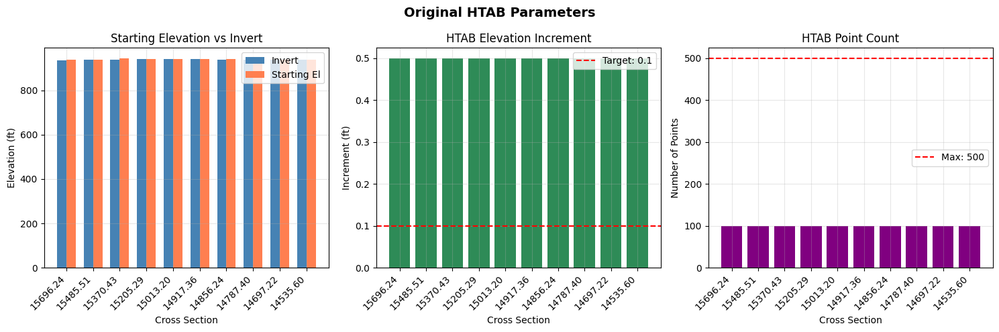
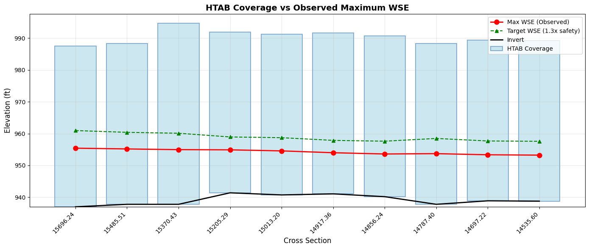
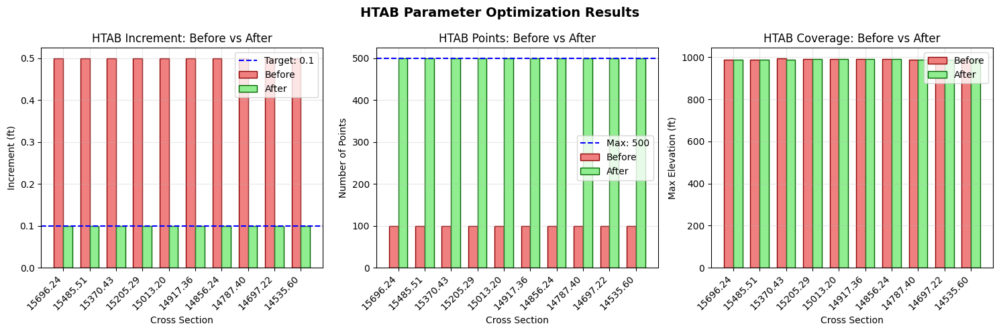
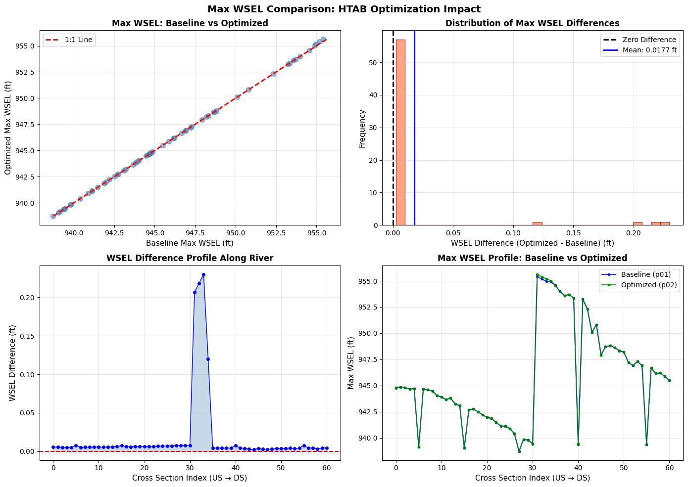

HTAB Parameter Optimization for Model Stability¶
This notebook demonstrates how to optimize Hydraulic Table (HTAB) parameters in HEC-RAS geometry files to improve model stability and prevent extrapolation errors.
Overview¶
What is HTAB?¶
HTAB (Hydraulic Table) parameters control how HEC-RAS pre-computes hydraulic property tables for: - Cross Sections: Starting elevation, increment, and number of points - Structures: Maximum headwater, tailwater, flow, and curve point counts
Why HTAB Optimization Matters¶
Extrapolation Errors: When water surface elevations exceed the HTAB range, HEC-RAS must extrapolate beyond the computed property tables. This can cause: - Warning messages in compute logs - Numerical instability - Inaccurate hydraulic calculations - Model convergence issues
Solution: Optimize HTAB parameters based on actual simulation results to ensure adequate coverage.
What You'll Learn¶
- Read current HTAB parameters from geometry files
- Run a baseline simulation and inspect compute messages
- Clone plan and geometry to preserve baseline for comparison
- Optimize HTAB parameters using
GeomHtab.optimize_all_htab_from_results() - Fix HTAB starting elevation issues using
RasFixit.fix_htab_starting_elevations() - Visualize before/after parameter comparisons
- Compare results using
results_dfand max WSEL analysis - Assess computational differences between baseline and optimized plans
LLM Forward Approach¶
- Verification: Compare compute messages before and after optimization
- Visual Outputs: Bar charts and coverage plots for HTAB parameters
- Audit Trail: Automatic backups of modified geometry files
Setup and Imports¶
# =============================================================================
# DEVELOPMENT MODE TOGGLE
# =============================================================================
from pathlib import Path
import sys
USE_LOCAL_SOURCE = True # <-- TOGGLE THIS: True for local dev, False for pip
if USE_LOCAL_SOURCE:
local_path = str(Path.cwd().parent)
if local_path not in sys.path:
sys.path.insert(0, local_path)
print(f"LOCAL SOURCE MODE: Loading from {local_path}/ras_commander")
else:
print("PIP PACKAGE MODE: Loading installed ras-commander")
# Import ras-commander modules
from ras_commander import (
RasExamples,
init_ras_project,
RasCmdr,
RasPlan,
RasGeo,
ras,
HdfHydraulicTables,
)
from ras_commander.geom import (
GeomCrossSection,
GeomHtab,
GeomHtabUtils,
)
from ras_commander.hdf import HdfResultsXsec, HdfResultsPlan
# Additional imports
import pandas as pd
import numpy as np
import matplotlib.pyplot as plt
from IPython import display
import warnings
warnings.filterwarnings('ignore')
# Verify which version loaded
import ras_commander
print(f"Loaded: {ras_commander.__file__}")
print(f"Working directory: {Path.cwd()}")
LOCAL SOURCE MODE: Loading from c:\GH\ras-commander/ras_commander
Loaded: c:\GH\ras-commander\ras_commander\__init__.py
Working directory: c:\GH\ras-commander\examples
Parameters¶
Configure these values to customize the notebook.
# =============================================================================
# PARAMETERS - Edit these to customize the notebook
# =============================================================================
# Project Configuration
PROJECT_NAME = "Muncie" # Example project with 1D cross sections
RAS_VERSION = "6.6" # HEC-RAS version
PLAN_NUMBER = "01" # Plan to execute and optimize
# HTAB Optimization Settings
XS_SAFETY_FACTOR = 1.3 # 30% safety margin on depth
STRUCTURE_HW_SAFETY = 2.0 # 100% safety on headwater
STRUCTURE_FLOW_SAFETY = 2.0 # 100% safety on flow
TARGET_INCREMENT = 0.1 # Target elevation increment (ft)
MAX_POINTS = 500 # Maximum HTAB points (HEC-RAS limit)
print("Configuration:")
print(f" Project: {PROJECT_NAME}")
print(f" Plan: {PLAN_NUMBER}")
print(f" XS Safety Factor: {XS_SAFETY_FACTOR} ({(XS_SAFETY_FACTOR-1)*100:.0f}% safety margin)")
print(f" Structure Safety: {STRUCTURE_HW_SAFETY}x HW, {STRUCTURE_FLOW_SAFETY}x Flow")
Configuration:
Project: Muncie
Plan: 01
XS Safety Factor: 1.3 (30% safety margin)
Structure Safety: 2.0x HW, 2.0x Flow
Section 1: Extract Project and Initialize¶
# Extract example project
project_path = RasExamples.extract_project(PROJECT_NAME, suffix="203_htab")
print(f"Project extracted to: {project_path}")
# Initialize project
init_ras_project(project_path, RAS_VERSION)
# Display project structure
print(f"\nPlans found: {len(ras.plan_df)}")
print(f"Geometries found: {len(ras.geom_df)}")
# Get geometry file path
geom_row = ras.geom_df[ras.geom_df['geom_number'] == '01'].iloc[0]
geom_file = Path(geom_row['full_path'])
print(f"\nGeometry file: {geom_file.name}")
2026-01-14 10:33:41 - ras_commander.RasExamples - INFO - Found zip file: C:\GH\ras-commander\examples\Example_Projects_6_6.zip
2026-01-14 10:33:41 - ras_commander.RasExamples - INFO - Loading project data from CSV...
2026-01-14 10:33:41 - ras_commander.RasExamples - INFO - Loaded 68 projects from CSV.
2026-01-14 10:33:41 - ras_commander.RasExamples - INFO - ----- RasExamples Extracting Project -----
2026-01-14 10:33:41 - ras_commander.RasExamples - INFO - Extracting project 'Muncie' as 'Muncie_203_htab'
2026-01-14 10:33:41 - ras_commander.RasExamples - INFO - Folder 'Muncie_203_htab' already exists. Deleting existing folder...
2026-01-14 10:33:41 - ras_commander.RasExamples - INFO - Existing folder 'Muncie_203_htab' has been deleted.
2026-01-14 10:33:41 - ras_commander.RasExamples - INFO - Successfully extracted project 'Muncie' to C:\GH\ras-commander\examples\example_projects\Muncie_203_htab
2026-01-14 10:33:42 - ras_commander.RasMap - INFO - Successfully parsed RASMapper file: C:\GH\ras-commander\examples\example_projects\Muncie_203_htab\Muncie.rasmap
2026-01-14 10:33:42 - ras_commander.RasPrj - INFO - Updated results_df with 3 plan(s)
Project extracted to: C:\GH\ras-commander\examples\example_projects\Muncie_203_htab
Plans found: 3
Geometries found: 3
Geometry file: Muncie.g01
Section 2: Inspect Original HTAB Parameters¶
Before optimizing, let's examine the current HTAB parameters for cross sections.
# Get all cross sections
from ras_commander import RasGeometry
xs_df = RasGeometry.get_cross_sections(geom_file)
print(f"Total cross sections: {len(xs_df)}")
# Extract HTAB parameters for first 10 cross sections
htab_params_list = []
for idx, xs in xs_df.head(10).iterrows():
try:
params = GeomCrossSection.get_xs_htab_params(
geom_file, xs['River'], xs['Reach'], xs['RS']
)
htab_params_list.append({
'RS': xs['RS'],
'Invert': params.get('invert'),
'Starting_El': params.get('starting_el'),
'Increment': params.get('increment'),
'Num_Points': params.get('num_points'),
'Max_El': (params.get('starting_el') or 0) +
(params.get('increment') or 0) * ((params.get('num_points') or 1) - 1)
if params.get('starting_el') and params.get('increment') else None
})
except Exception as e:
print(f" Warning: Could not read HTAB for RS {xs['RS']}: {e}")
original_htab_df = pd.DataFrame(htab_params_list)
print("\nOriginal HTAB Parameters (first 10 cross sections):")
display.display(original_htab_df)
2026-01-14 10:33:42 - ras_commander.geom.GeomCrossSection - INFO - Extracted 63 cross sections from Muncie.g01
2026-01-14 10:33:42 - ras_commander.geom.GeomCrossSection - INFO - Extracted 134 station/elevation pairs for White/Muncie/RS 15696.24
2026-01-14 10:33:42 - ras_commander.geom.GeomCrossSection - INFO - Extracted HTAB params for White/Muncie/RS 15696.24: has_htab_lines=True, starting_el=937.99, increment=0.5, num_points=100
2026-01-14 10:33:42 - ras_commander.geom.GeomCrossSection - INFO - Extracted 93 station/elevation pairs for White/Muncie/RS 15485.51
2026-01-14 10:33:42 - ras_commander.geom.GeomCrossSection - INFO - Extracted HTAB params for White/Muncie/RS 15485.51: has_htab_lines=True, starting_el=938.78, increment=0.5, num_points=100
2026-01-14 10:33:42 - ras_commander.geom.GeomCrossSection - INFO - Extracted 88 station/elevation pairs for White/Muncie/RS 15370.43
2026-01-14 10:33:42 - ras_commander.geom.GeomCrossSection - INFO - Extracted HTAB params for White/Muncie/RS 15370.43: has_htab_lines=True, starting_el=945.16, increment=0.5, num_points=100
2026-01-14 10:33:42 - ras_commander.geom.GeomCrossSection - INFO - Extracted 63 station/elevation pairs for White/Muncie/RS 15205.29
2026-01-14 10:33:42 - ras_commander.geom.GeomCrossSection - INFO - Extracted HTAB params for White/Muncie/RS 15205.29: has_htab_lines=True, starting_el=942.39, increment=0.5, num_points=100
2026-01-14 10:33:42 - ras_commander.geom.GeomCrossSection - INFO - Extracted 43 station/elevation pairs for White/Muncie/RS 15013.20
2026-01-14 10:33:42 - ras_commander.geom.GeomCrossSection - INFO - Extracted HTAB params for White/Muncie/RS 15013.20: has_htab_lines=True, starting_el=941.73, increment=0.5, num_points=100
2026-01-14 10:33:42 - ras_commander.geom.GeomCrossSection - INFO - Extracted 39 station/elevation pairs for White/Muncie/RS 14917.36
2026-01-14 10:33:42 - ras_commander.geom.GeomCrossSection - INFO - Extracted HTAB params for White/Muncie/RS 14917.36: has_htab_lines=True, starting_el=942.06, increment=0.5, num_points=100
2026-01-14 10:33:42 - ras_commander.geom.GeomCrossSection - INFO - Extracted 39 station/elevation pairs for White/Muncie/RS 14856.24
2026-01-14 10:33:42 - ras_commander.geom.GeomCrossSection - INFO - Extracted HTAB params for White/Muncie/RS 14856.24: has_htab_lines=True, starting_el=941.18, increment=0.5, num_points=100
2026-01-14 10:33:42 - ras_commander.geom.GeomCrossSection - INFO - Extracted 40 station/elevation pairs for White/Muncie/RS 14787.40
2026-01-14 10:33:42 - ras_commander.geom.GeomCrossSection - INFO - Extracted HTAB params for White/Muncie/RS 14787.40: has_htab_lines=True, starting_el=938.78, increment=0.5, num_points=100
2026-01-14 10:33:42 - ras_commander.geom.GeomCrossSection - INFO - Extracted 40 station/elevation pairs for White/Muncie/RS 14697.22
2026-01-14 10:33:42 - ras_commander.geom.GeomCrossSection - INFO - Extracted HTAB params for White/Muncie/RS 14697.22: has_htab_lines=True, starting_el=939.88, increment=0.5, num_points=100
2026-01-14 10:33:42 - ras_commander.geom.GeomCrossSection - INFO - Extracted 42 station/elevation pairs for White/Muncie/RS 14535.60
2026-01-14 10:33:42 - ras_commander.geom.GeomCrossSection - INFO - Extracted HTAB params for White/Muncie/RS 14535.60: has_htab_lines=True, starting_el=939.77, increment=0.5, num_points=100
Total cross sections: 63
Original HTAB Parameters (first 10 cross sections):
| RS | Invert | Starting_El | Increment | Num_Points | Max_El | |
|---|---|---|---|---|---|---|
| 0 | 15696.24 | 936.99 | 937.99 | 0.5 | 100 | 987.49 |
| 1 | 15485.51 | 937.78 | 938.78 | 0.5 | 100 | 988.28 |
| 2 | 15370.43 | 937.78 | 945.16 | 0.5 | 100 | 994.66 |
| 3 | 15205.29 | 941.39 | 942.39 | 0.5 | 100 | 991.89 |
| 4 | 15013.20 | 940.73 | 941.73 | 0.5 | 100 | 991.23 |
| 5 | 14917.36 | 941.06 | 942.06 | 0.5 | 100 | 991.56 |
| 6 | 14856.24 | 940.18 | 941.18 | 0.5 | 100 | 990.68 |
| 7 | 14787.40 | 937.78 | 938.78 | 0.5 | 100 | 988.28 |
| 8 | 14697.22 | 938.88 | 939.88 | 0.5 | 100 | 989.38 |
| 9 | 14535.60 | 938.77 | 939.77 | 0.5 | 100 | 989.27 |
# Visualize original HTAB parameters
fig, axes = plt.subplots(1, 3, figsize=(15, 5))
# Filter out None values for plotting
plot_df = original_htab_df.dropna()
rs_labels = [str(rs)[:8] for rs in plot_df['RS']]
# Plot 1: Starting Elevation vs Invert
ax1 = axes[0]
x = np.arange(len(plot_df))
width = 0.35
ax1.bar(x - width/2, plot_df['Invert'], width, label='Invert', color='steelblue')
ax1.bar(x + width/2, plot_df['Starting_El'], width, label='Starting El', color='coral')
ax1.set_xlabel('Cross Section')
ax1.set_ylabel('Elevation (ft)')
ax1.set_title('Starting Elevation vs Invert')
ax1.set_xticks(x)
ax1.set_xticklabels(rs_labels, rotation=45, ha='right')
ax1.legend()
ax1.grid(True, alpha=0.3)
# Plot 2: Increment
ax2 = axes[1]
ax2.bar(x, plot_df['Increment'], color='seagreen')
ax2.axhline(y=TARGET_INCREMENT, color='red', linestyle='--', label=f'Target: {TARGET_INCREMENT}')
ax2.set_xlabel('Cross Section')
ax2.set_ylabel('Increment (ft)')
ax2.set_title('HTAB Elevation Increment')
ax2.set_xticks(x)
ax2.set_xticklabels(rs_labels, rotation=45, ha='right')
ax2.legend()
ax2.grid(True, alpha=0.3)
# Plot 3: Number of Points
ax3 = axes[2]
ax3.bar(x, plot_df['Num_Points'], color='purple')
ax3.axhline(y=MAX_POINTS, color='red', linestyle='--', label=f'Max: {MAX_POINTS}')
ax3.set_xlabel('Cross Section')
ax3.set_ylabel('Number of Points')
ax3.set_title('HTAB Point Count')
ax3.set_xticks(x)
ax3.set_xticklabels(rs_labels, rotation=45, ha='right')
ax3.legend()
ax3.grid(True, alpha=0.3)
fig.suptitle('Original HTAB Parameters', fontsize=14, fontweight='bold')
plt.tight_layout()
plt.show()

Section 3: Baseline Run and Compute Messages¶
Execute the plan with default HTAB parameters and check for extrapolation warnings.
# Execute baseline plan
print("Running baseline simulation...")
print("(This may take 1-2 minutes)\n")
result = RasCmdr.compute_plan(PLAN_NUMBER, num_cores=4, force_rerun=True)
if result:
print("Baseline simulation completed successfully")
# Get HDF path
plan_row = ras.plan_df[ras.plan_df['plan_number'] == PLAN_NUMBER].iloc[0]
hdf_path = Path(plan_row['HDF_Results_Path'])
print(f"HDF results: {hdf_path.name}")
else:
print("ERROR: Baseline simulation failed")
2026-01-14 10:33:42 - ras_commander.RasCmdr - INFO - Using ras_object with project folder: C:\GH\ras-commander\examples\example_projects\Muncie_203_htab
2026-01-14 10:33:42 - ras_commander.RasUtils - INFO - Using provided plan file path: C:\GH\ras-commander\examples\example_projects\Muncie_203_htab\Muncie.p01
2026-01-14 10:33:42 - ras_commander.RasUtils - INFO - Successfully updated file: C:\GH\ras-commander\examples\example_projects\Muncie_203_htab\Muncie.p01
2026-01-14 10:33:42 - ras_commander.RasCmdr - INFO - Set number of cores to 4 for plan: 01
2026-01-14 10:33:42 - ras_commander.RasCmdr - INFO - Running HEC-RAS from the Command Line:
2026-01-14 10:33:42 - ras_commander.RasCmdr - INFO - Running command: "C:\Program Files (x86)\HEC\HEC-RAS\6.6\Ras.exe" -c "C:\GH\ras-commander\examples\example_projects\Muncie_203_htab\Muncie.prj" "C:\GH\ras-commander\examples\example_projects\Muncie_203_htab\Muncie.p01"
Running baseline simulation...
(This may take 1-2 minutes)
2026-01-14 10:33:58 - ras_commander.RasCmdr - INFO - HEC-RAS execution completed for plan: 01
2026-01-14 10:33:58 - ras_commander.RasCmdr - INFO - Total run time for plan 01: 15.60 seconds
2026-01-14 10:33:58 - ras_commander.hdf.HdfResultsPlan - INFO - Using existing Path object HDF file: C:\GH\ras-commander\examples\example_projects\Muncie_203_htab\Muncie.p01.hdf
2026-01-14 10:33:58 - ras_commander.hdf.HdfResultsPlan - INFO - Final validated file path: C:\GH\ras-commander\examples\example_projects\Muncie_203_htab\Muncie.p01.hdf
2026-01-14 10:33:58 - ras_commander.hdf.HdfResultsPlan - INFO - Reading computation messages from HDF: Muncie.p01.hdf
2026-01-14 10:33:58 - ras_commander.hdf.HdfResultsPlan - INFO - Successfully extracted 2579 characters from HDF
2026-01-14 10:33:58 - ras_commander.hdf.HdfResultsPlan - INFO - Using existing Path object HDF file: C:\GH\ras-commander\examples\example_projects\Muncie_203_htab\Muncie.p01.hdf
2026-01-14 10:33:58 - ras_commander.hdf.HdfResultsPlan - INFO - Final validated file path: C:\GH\ras-commander\examples\example_projects\Muncie_203_htab\Muncie.p01.hdf
2026-01-14 10:33:58 - ras_commander.hdf.HdfResultsPlan - INFO - Extracting Plan Information from: Muncie.p01.hdf
2026-01-14 10:33:58 - ras_commander.hdf.HdfResultsPlan - INFO - Plan Name: Unsteady Multi 9-SA run
2026-01-14 10:33:58 - ras_commander.hdf.HdfResultsPlan - INFO - Simulation Duration (hours): 24.0
2026-01-14 10:33:58 - ras_commander.hdf.HdfResultsPlan - INFO - Using existing Path object HDF file: C:\GH\ras-commander\examples\example_projects\Muncie_203_htab\Muncie.p01.hdf
2026-01-14 10:33:58 - ras_commander.hdf.HdfResultsPlan - INFO - Final validated file path: C:\GH\ras-commander\examples\example_projects\Muncie_203_htab\Muncie.p01.hdf
2026-01-14 10:33:58 - ras_commander.RasPrj - INFO - Updated results_df with 1 plan(s)
Baseline simulation completed successfully
HDF results: Muncie.p01.hdf
# Parse compute messages to check for extrapolation warnings
from ras_commander import ResultsParser
from ras_commander.hdf import HdfResultsPlan
# Get plan HDF path
plan_row = ras.plan_df[ras.plan_df['plan_number'] == PLAN_NUMBER].iloc[0]
hdf_path = Path(plan_row['HDF_Results_Path'])
# Get compute messages text from HDF
compute_msgs_text = HdfResultsPlan.get_compute_messages(hdf_path)
# Parse messages
compute_result = ResultsParser.parse_compute_messages(compute_msgs_text)
print(f"Computation completed: {compute_result['completed']}")
print(f"Has warnings: {compute_result['has_warnings']}")
print(f"Warning count: {compute_result['warning_count']}")
# Check for extrapolation warnings in raw text
extrap_count = compute_msgs_text.lower().count('extrapolat')
htab_count = compute_msgs_text.lower().count('htab') + compute_msgs_text.lower().count('property table')
print(f"\nExtrapolation mentions: {extrap_count}")
print(f"HTAB-related mentions: {htab_count}")
# Store for comparison later
baseline_extrap_count = extrap_count
baseline_warning_count = compute_result['warning_count']
if extrap_count > 0:
print("\nNote: Model may benefit from HTAB optimization")
else:
print("\nNo extrapolation warnings found in baseline run.")
2026-01-14 10:33:58 - ras_commander.hdf.HdfResultsPlan - INFO - Using existing Path object HDF file: C:\GH\ras-commander\examples\example_projects\Muncie_203_htab\Muncie.p01.hdf
2026-01-14 10:33:58 - ras_commander.hdf.HdfResultsPlan - INFO - Final validated file path: C:\GH\ras-commander\examples\example_projects\Muncie_203_htab\Muncie.p01.hdf
2026-01-14 10:33:58 - ras_commander.hdf.HdfResultsPlan - INFO - Reading computation messages from HDF: Muncie.p01.hdf
2026-01-14 10:33:58 - ras_commander.hdf.HdfResultsPlan - INFO - Successfully extracted 2579 characters from HDF
Computation completed: True
Has warnings: False
Warning count: 0
Extrapolation mentions: 0
HTAB-related mentions: 0
No extrapolation warnings found in baseline run.
Section 4: Extract Maximum WSE from Results¶
Analyze the simulation results to understand the required HTAB coverage.
# Extract cross section timeseries to get maximum WSE values
try:
xs_results = HdfResultsXsec.get_xsec_timeseries(hdf_path)
# Extract max WSE for each cross section
cross_sections = xs_results.coords['cross_section'].values
max_wse_values = xs_results.coords['Maximum_Water_Surface'].values
rivers = xs_results.coords['River'].values
reaches = xs_results.coords['Reach'].values
stations = xs_results.coords['Station'].values
# Build DataFrame
max_wse_df = pd.DataFrame({
'cross_section': cross_sections,
'river': rivers,
'reach': reaches,
'station': stations,
'max_wse': max_wse_values
})
# Store baseline max WSE for later comparison with optimized plan
baseline_max_wse_df = max_wse_df.copy()
baseline_max_wse_df = baseline_max_wse_df.rename(columns={'max_wse': 'max_wse_baseline'})
print(f"Extracted max WSE for {len(max_wse_df)} cross sections")
print(f"\nBaseline Max WSE Statistics:")
print(f" Min: {max_wse_df['max_wse'].min():.2f} ft")
print(f" Max: {max_wse_df['max_wse'].max():.2f} ft")
print(f" Mean: {max_wse_df['max_wse'].mean():.2f} ft")
print("\nFirst 10 cross sections:")
display.display(max_wse_df.head(10))
except Exception as e:
print(f"Error extracting cross section results: {e}")
max_wse_df = None
baseline_max_wse_df = None
2026-01-14 10:33:58 - ras_commander.hdf.HdfResultsXsec - INFO - Using existing Path object HDF file: C:\GH\ras-commander\examples\example_projects\Muncie_203_htab\Muncie.p01.hdf
2026-01-14 10:33:58 - ras_commander.hdf.HdfResultsXsec - INFO - Final validated file path: C:\GH\ras-commander\examples\example_projects\Muncie_203_htab\Muncie.p01.hdf
Extracted max WSE for 61 cross sections
Baseline Max WSE Statistics:
Min: 938.73 ft
Max: 955.42 ft
Mean: 945.88 ft
First 10 cross sections:
| cross_section | river | reach | station | max_wse | |
|---|---|---|---|---|---|
| 0 | White Muncie 15696.24 | White | Muncie | 15696.24 | 955.419312 |
| 1 | White Muncie 15485.51 | White | Muncie | 15485.51 | 955.174011 |
| 2 | White Muncie 15370.43 | White | Muncie | 15370.43 | 954.952271 |
| 3 | White Muncie 15205.29 | White | Muncie | 15205.29 | 954.893005 |
| 4 | White Muncie 15013.20 | White | Muncie | 15013.20 | 954.560486 |
| 5 | White Muncie 14917.36 | White | Muncie | 14917.36 | 953.986633 |
| 6 | White Muncie 14856.24 | White | Muncie | 14856.24 | 953.586487 |
| 7 | White Muncie 14787.40 | White | Muncie | 14787.40 | 953.695190 |
| 8 | White Muncie 14697.22 | White | Muncie | 14697.22 | 953.339478 |
| 9 | White Muncie 14535.60 | White | Muncie | 14535.60 | 953.233215 |
# Visualize HTAB coverage vs observed WSE
if max_wse_df is not None and len(original_htab_df) > 0:
fig, ax = plt.subplots(figsize=(14, 6))
# Merge original HTAB with max WSE
plot_df = original_htab_df.head(10).copy()
plot_df['RS_str'] = plot_df['RS'].astype(str)
# Match with max WSE by station
max_wse_subset = max_wse_df.head(10)
x = np.arange(len(plot_df))
rs_labels = [str(rs)[:8] for rs in plot_df['RS']]
# Plot HTAB range (invert to max elevation)
inverts = plot_df['Invert'].fillna(plot_df['Starting_El']).values
# Fix: Use np.where for element-wise conditional fill
max_el_raw = plot_df['Max_El'].values
max_els = np.where(pd.isna(max_el_raw), inverts + 50, max_el_raw)
# HTAB coverage bars
ax.bar(x, max_els - inverts, bottom=inverts, alpha=0.6, color='lightblue',
label='HTAB Coverage', edgecolor='steelblue', linewidth=1.5)
# Max WSE line
if len(max_wse_subset) >= len(x):
max_wse_vals = max_wse_subset['max_wse'].values[:len(x)]
ax.plot(x, max_wse_vals, 'ro-', markersize=8, linewidth=2, label='Max WSE (Observed)')
# Target WSE with safety factor
target_wse = inverts + (max_wse_vals - inverts) * XS_SAFETY_FACTOR
ax.plot(x, target_wse, 'g^--', markersize=6, linewidth=1.5,
label=f'Target WSE ({XS_SAFETY_FACTOR}x safety)')
# Invert line
ax.plot(x, inverts, 'k-', linewidth=2, label='Invert')
ax.set_xlabel('Cross Section', fontsize=12)
ax.set_ylabel('Elevation (ft)', fontsize=12)
ax.set_title('HTAB Coverage vs Observed Maximum WSE', fontsize=14, fontweight='bold')
ax.set_xticks(x)
ax.set_xticklabels(rs_labels, rotation=45, ha='right')
ax.legend(loc='upper right')
ax.grid(True, alpha=0.3)
plt.tight_layout()
plt.show()
print("\nCoverage Analysis:")
print("- Blue bars: Current HTAB elevation range")
print("- Red dots: Maximum observed water surface elevation")
print("- Green triangles: Target WSE with safety factor")
print("\nIf red dots approach or exceed the blue bars, HTAB optimization is needed.")

Coverage Analysis:
- Blue bars: Current HTAB elevation range
- Red dots: Maximum observed water surface elevation
- Green triangles: Target WSE with safety factor
If red dots approach or exceed the blue bars, HTAB optimization is needed.
Section 5: Clone Plan/Geometry and Optimize HTAB Parameters¶
Instead of modifying the original plan in place, we'll clone the plan and geometry to preserve the baseline for comparison. This allows us to:
1. Compare results between baseline and optimized plans using results_df
2. Analyze max WSEL differences to assess computational impacts
3. Maintain a clean baseline for reference
Workflow: - Clone the geometry file → Apply HTAB optimization to the clone - Clone the plan file → Associate it with the optimized geometry - Run both plans and compare results
# Generate optimization report (preview without modifying)
print("Generating HTAB optimization report...\n")
report = GeomHtab.get_optimization_report(
geom_file=geom_file,
hdf_results_path=hdf_path,
xs_safety_factor=XS_SAFETY_FACTOR,
structure_hw_safety=STRUCTURE_HW_SAFETY
)
# Display report (first 60 lines)
report_lines = report.split('\n')
print('\n'.join(report_lines[:60]))
if len(report_lines) > 60:
print(f"\n... ({len(report_lines) - 60} more lines)")
2026-01-14 10:33:58 - ras_commander.hdf.HdfResultsXsec - INFO - Using existing Path object HDF file: C:\GH\ras-commander\examples\example_projects\Muncie_203_htab\Muncie.p01.hdf
2026-01-14 10:33:58 - ras_commander.hdf.HdfResultsXsec - INFO - Final validated file path: C:\GH\ras-commander\examples\example_projects\Muncie_203_htab\Muncie.p01.hdf
2026-01-14 10:33:58 - ras_commander.geom.GeomCrossSection - INFO - Extracted 134 station/elevation pairs for White/Muncie/RS 15696.24
2026-01-14 10:33:58 - ras_commander.geom.GeomCrossSection - INFO - Extracted HTAB params for White/Muncie/RS 15696.24: has_htab_lines=True, starting_el=937.99, increment=0.5, num_points=100
2026-01-14 10:33:58 - ras_commander.geom.GeomHtabUtils - INFO - Optimal XS HTAB: starting_el=936.99, increment=0.1, num_points=500, actual_max_el=986.89
2026-01-14 10:33:58 - ras_commander.geom.GeomCrossSection - INFO - Extracted 93 station/elevation pairs for White/Muncie/RS 15485.51
2026-01-14 10:33:58 - ras_commander.geom.GeomCrossSection - INFO - Extracted HTAB params for White/Muncie/RS 15485.51: has_htab_lines=True, starting_el=938.78, increment=0.5, num_points=100
2026-01-14 10:33:58 - ras_commander.geom.GeomHtabUtils - INFO - Optimal XS HTAB: starting_el=937.78, increment=0.1, num_points=500, actual_max_el=987.68
2026-01-14 10:33:58 - ras_commander.geom.GeomCrossSection - INFO - Extracted 88 station/elevation pairs for White/Muncie/RS 15370.43
Generating HTAB optimization report...
2026-01-14 10:33:58 - ras_commander.geom.GeomCrossSection - INFO - Extracted HTAB params for White/Muncie/RS 15370.43: has_htab_lines=True, starting_el=945.16, increment=0.5, num_points=100
2026-01-14 10:33:58 - ras_commander.geom.GeomHtabUtils - INFO - Optimal XS HTAB: starting_el=937.78, increment=0.1, num_points=500, actual_max_el=987.68
2026-01-14 10:33:58 - ras_commander.geom.GeomCrossSection - INFO - Extracted 63 station/elevation pairs for White/Muncie/RS 15205.29
2026-01-14 10:33:58 - ras_commander.geom.GeomCrossSection - INFO - Extracted HTAB params for White/Muncie/RS 15205.29: has_htab_lines=True, starting_el=942.39, increment=0.5, num_points=100
2026-01-14 10:33:58 - ras_commander.geom.GeomHtabUtils - INFO - Optimal XS HTAB: starting_el=941.39, increment=0.1, num_points=500, actual_max_el=991.29
2026-01-14 10:33:58 - ras_commander.geom.GeomCrossSection - INFO - Extracted 43 station/elevation pairs for White/Muncie/RS 15013.20
2026-01-14 10:33:58 - ras_commander.geom.GeomCrossSection - INFO - Extracted HTAB params for White/Muncie/RS 15013.20: has_htab_lines=True, starting_el=941.73, increment=0.5, num_points=100
2026-01-14 10:33:58 - ras_commander.geom.GeomHtabUtils - INFO - Optimal XS HTAB: starting_el=940.73, increment=0.1, num_points=500, actual_max_el=990.63
2026-01-14 10:33:58 - ras_commander.geom.GeomCrossSection - INFO - Extracted 39 station/elevation pairs for White/Muncie/RS 14917.36
2026-01-14 10:33:58 - ras_commander.geom.GeomCrossSection - INFO - Extracted HTAB params for White/Muncie/RS 14917.36: has_htab_lines=True, starting_el=942.06, increment=0.5, num_points=100
2026-01-14 10:33:58 - ras_commander.geom.GeomHtabUtils - INFO - Optimal XS HTAB: starting_el=941.06, increment=0.1, num_points=500, actual_max_el=990.96
2026-01-14 10:33:58 - ras_commander.geom.GeomCrossSection - INFO - Extracted 39 station/elevation pairs for White/Muncie/RS 14856.24
2026-01-14 10:33:58 - ras_commander.geom.GeomCrossSection - INFO - Extracted HTAB params for White/Muncie/RS 14856.24: has_htab_lines=True, starting_el=941.18, increment=0.5, num_points=100
2026-01-14 10:33:58 - ras_commander.geom.GeomHtabUtils - INFO - Optimal XS HTAB: starting_el=940.18, increment=0.1, num_points=500, actual_max_el=990.08
2026-01-14 10:33:58 - ras_commander.geom.GeomCrossSection - INFO - Extracted 40 station/elevation pairs for White/Muncie/RS 14787.40
2026-01-14 10:33:58 - ras_commander.geom.GeomCrossSection - INFO - Extracted HTAB params for White/Muncie/RS 14787.40: has_htab_lines=True, starting_el=938.78, increment=0.5, num_points=100
2026-01-14 10:33:58 - ras_commander.geom.GeomHtabUtils - INFO - Optimal XS HTAB: starting_el=937.78, increment=0.1, num_points=500, actual_max_el=987.68
2026-01-14 10:33:58 - ras_commander.geom.GeomCrossSection - INFO - Extracted 40 station/elevation pairs for White/Muncie/RS 14697.22
2026-01-14 10:33:58 - ras_commander.geom.GeomCrossSection - INFO - Extracted HTAB params for White/Muncie/RS 14697.22: has_htab_lines=True, starting_el=939.88, increment=0.5, num_points=100
2026-01-14 10:33:58 - ras_commander.geom.GeomHtabUtils - INFO - Optimal XS HTAB: starting_el=938.88, increment=0.1, num_points=500, actual_max_el=988.78
2026-01-14 10:33:58 - ras_commander.geom.GeomCrossSection - INFO - Extracted 42 station/elevation pairs for White/Muncie/RS 14535.60
2026-01-14 10:33:58 - ras_commander.geom.GeomCrossSection - INFO - Extracted HTAB params for White/Muncie/RS 14535.60: has_htab_lines=True, starting_el=939.77, increment=0.5, num_points=100
2026-01-14 10:33:58 - ras_commander.geom.GeomHtabUtils - INFO - Optimal XS HTAB: starting_el=938.77, increment=0.1, num_points=500, actual_max_el=988.67
2026-01-14 10:33:58 - ras_commander.geom.GeomCrossSection - INFO - Extracted 49 station/elevation pairs for White/Muncie/RS 14443.72
2026-01-14 10:33:58 - ras_commander.geom.GeomCrossSection - INFO - Extracted HTAB params for White/Muncie/RS 14443.72: has_htab_lines=True, starting_el=939.59, increment=0.5, num_points=100
2026-01-14 10:33:58 - ras_commander.geom.GeomHtabUtils - INFO - Optimal XS HTAB: starting_el=938.59, increment=0.1, num_points=500, actual_max_el=988.49
2026-01-14 10:33:58 - ras_commander.geom.GeomCrossSection - INFO - Extracted 35 station/elevation pairs for White/Muncie/RS 14305.48
2026-01-14 10:33:58 - ras_commander.geom.GeomCrossSection - INFO - Extracted HTAB params for White/Muncie/RS 14305.48: has_htab_lines=True, starting_el=939.87, increment=0.5, num_points=100
2026-01-14 10:33:58 - ras_commander.geom.GeomHtabUtils - INFO - Optimal XS HTAB: starting_el=938.87, increment=0.1, num_points=500, actual_max_el=988.77
2026-01-14 10:33:58 - ras_commander.geom.GeomCrossSection - INFO - Extracted 33 station/elevation pairs for White/Muncie/RS 14166.05
2026-01-14 10:33:58 - ras_commander.geom.GeomCrossSection - INFO - Extracted HTAB params for White/Muncie/RS 14166.05: has_htab_lines=True, starting_el=936.76, increment=0.5, num_points=100
2026-01-14 10:33:58 - ras_commander.geom.GeomHtabUtils - INFO - Optimal XS HTAB: starting_el=935.76, increment=0.1, num_points=500, actual_max_el=985.66
2026-01-14 10:33:58 - ras_commander.geom.GeomCrossSection - INFO - Extracted 41 station/elevation pairs for White/Muncie/RS 14039.64
2026-01-14 10:33:58 - ras_commander.geom.GeomCrossSection - INFO - Extracted HTAB params for White/Muncie/RS 14039.64: has_htab_lines=True, starting_el=938.86, increment=0.5, num_points=100
2026-01-14 10:33:58 - ras_commander.geom.GeomHtabUtils - INFO - Optimal XS HTAB: starting_el=937.86, increment=0.1, num_points=500, actual_max_el=987.76
2026-01-14 10:33:58 - ras_commander.geom.GeomCrossSection - INFO - Extracted 172 station/elevation pairs for White/Muncie/RS 13859.04
2026-01-14 10:33:58 - ras_commander.geom.GeomCrossSection - INFO - Extracted HTAB params for White/Muncie/RS 13859.04: has_htab_lines=True, starting_el=935.61, increment=0.5, num_points=100
2026-01-14 10:33:58 - ras_commander.geom.GeomHtabUtils - INFO - Optimal XS HTAB: starting_el=934.61, increment=0.1, num_points=500, actual_max_el=984.51
2026-01-14 10:33:58 - ras_commander.geom.GeomCrossSection - INFO - Extracted 151 station/elevation pairs for White/Muncie/RS 13490.47
2026-01-14 10:33:58 - ras_commander.geom.GeomCrossSection - INFO - Extracted HTAB params for White/Muncie/RS 13490.47: has_htab_lines=True, starting_el=934.86, increment=0.5, num_points=100
2026-01-14 10:33:58 - ras_commander.geom.GeomHtabUtils - INFO - Optimal XS HTAB: starting_el=933.86, increment=0.1, num_points=500, actual_max_el=983.76
2026-01-14 10:33:58 - ras_commander.geom.GeomCrossSection - INFO - Extracted 123 station/elevation pairs for White/Muncie/RS 13214.80
2026-01-14 10:33:58 - ras_commander.geom.GeomCrossSection - INFO - Extracted HTAB params for White/Muncie/RS 13214.80: has_htab_lines=True, starting_el=940.65, increment=0.5, num_points=100
2026-01-14 10:33:58 - ras_commander.geom.GeomHtabUtils - INFO - Optimal XS HTAB: starting_el=939.11, increment=0.1, num_points=500, actual_max_el=989.01
2026-01-14 10:33:58 - ras_commander.geom.GeomCrossSection - INFO - Extracted 131 station/elevation pairs for White/Muncie/RS 12817.36
2026-01-14 10:33:58 - ras_commander.geom.GeomCrossSection - INFO - Extracted HTAB params for White/Muncie/RS 12817.36: has_htab_lines=True, starting_el=935.98, increment=0.5, num_points=100
2026-01-14 10:33:58 - ras_commander.geom.GeomHtabUtils - INFO - Optimal XS HTAB: starting_el=934.98, increment=0.1, num_points=500, actual_max_el=984.88
2026-01-14 10:33:58 - ras_commander.geom.GeomCrossSection - INFO - Extracted 117 station/elevation pairs for White/Muncie/RS 12492.03
2026-01-14 10:33:58 - ras_commander.geom.GeomCrossSection - INFO - Extracted HTAB params for White/Muncie/RS 12492.03: has_htab_lines=True, starting_el=934.86, increment=0.5, num_points=100
2026-01-14 10:33:58 - ras_commander.geom.GeomHtabUtils - INFO - Optimal XS HTAB: starting_el=933.86, increment=0.1, num_points=500, actual_max_el=983.76
2026-01-14 10:33:58 - ras_commander.geom.GeomCrossSection - INFO - Extracted 153 station/elevation pairs for White/Muncie/RS 12227.69
2026-01-14 10:33:58 - ras_commander.geom.GeomCrossSection - INFO - Extracted HTAB params for White/Muncie/RS 12227.69: has_htab_lines=True, starting_el=936.83, increment=0.5, num_points=100
2026-01-14 10:33:58 - ras_commander.geom.GeomHtabUtils - INFO - Optimal XS HTAB: starting_el=935.83, increment=0.1, num_points=500, actual_max_el=985.73
# HTAB Optimization Report
**Geometry File**: Muncie.g01
**HDF Results**: Muncie.p01.hdf
**Generated**: 2026-01-14 10:33:58
## Analysis Parameters
- XS Safety Factor: 1.3 (30% safety)
- Structure HW Safety Factor: 2.0 (100% safety)
---
## Cross Section HTAB Analysis
Found 61 cross sections with results.
| Cross Section | Current Start El | Recommended | Current Inc | Recommended | Change |
|---------------|------------------|-------------|-------------|-------------|--------|
| White Muncie | 937.99 | 936.99 | 0.5000 | 0.1000 | YES |
| White Muncie | 938.78 | 937.78 | 0.5000 | 0.1000 | YES |
| White Muncie | 945.16 | 937.78 | 0.5000 | 0.1000 | YES |
| White Muncie | 942.39 | 941.39 | 0.5000 | 0.1000 | YES |
| White Muncie | 941.73 | 940.73 | 0.5000 | 0.1000 | YES |
| White Muncie | 942.06 | 941.06 | 0.5000 | 0.1000 | YES |
| White Muncie | 941.18 | 940.18 | 0.5000 | 0.1000 | YES |
| White Muncie | 938.78 | 937.78 | 0.5000 | 0.1000 | YES |
| White Muncie | 939.88 | 938.88 | 0.5000 | 0.1000 | YES |
| White Muncie | 939.77 | 938.77 | 0.5000 | 0.1000 | YES |
| White Muncie | 939.59 | 938.59 | 0.5000 | 0.1000 | YES |
| White Muncie | 939.87 | 938.87 | 0.5000 | 0.1000 | YES |
| White Muncie | 936.76 | 935.76 | 0.5000 | 0.1000 | YES |
| White Muncie | 938.86 | 937.86 | 0.5000 | 0.1000 | YES |
| White Muncie | 935.61 | 934.61 | 0.5000 | 0.1000 | YES |
| White Muncie | 934.86 | 933.86 | 0.5000 | 0.1000 | YES |
| White Muncie | 940.65 | 939.11 | 0.5000 | 0.1000 | YES |
| White Muncie | 935.98 | 934.98 | 0.5000 | 0.1000 | YES |
| White Muncie | 934.86 | 933.86 | 0.5000 | 0.1000 | YES |
| White Muncie | 936.83 | 935.83 | 0.5000 | 0.1000 | YES |
| ... | | | | | |
| (41 more) | | | | | |
**Cross sections needing optimization**: 20
---
## Recommendations
1. Run `GeomHtab.optimize_all_htab_from_results()` to apply optimizations
2. After optimization, run geometric preprocessor (`clear_geompre=True`)
3. Verify model opens correctly in HEC-RAS GUI
4. Compare before/after results for stability
---
*Report generated by ras-commander GeomHtab*
# =============================================================================
# Step 1: Clone geometry for HTAB optimization
# =============================================================================
print("Step 1: Clone geometry file...")
new_geom_number = RasPlan.clone_geom("01")
print(f" Created new geometry: g{new_geom_number}")
# Get path to the cloned geometry file
cloned_geom_row = ras.geom_df[ras.geom_df['geom_number'] == new_geom_number].iloc[0]
cloned_geom_file = Path(cloned_geom_row['full_path'])
print(f" Cloned geometry file: {cloned_geom_file.name}")
# =============================================================================
# Step 2: Clone plan and associate with cloned geometry
# =============================================================================
print("\nStep 2: Clone plan and associate with optimized geometry...")
optimized_plan_number = RasPlan.clone_plan(PLAN_NUMBER, new_shortid="HTAB Optimized")
print(f" Created new plan: p{optimized_plan_number}")
# Associate the cloned plan with the cloned geometry
RasPlan.set_geom(optimized_plan_number, new_geom_number)
print(f" Associated plan {optimized_plan_number} with geometry {new_geom_number}")
# Update plan title for clarity
RasPlan.set_plan_title(optimized_plan_number, "HTAB Optimized Plan")
print(f" Updated plan title")
# Clear geometry preprocessor files for the new plan
plan_path = RasPlan.get_plan_path(optimized_plan_number)
RasGeo.clear_geompre_files(plan_path)
print(f" Cleared geometry preprocessor files")
# =============================================================================
# Step 3: Apply HTAB optimization to the CLONED geometry only
# =============================================================================
print("\nStep 3: Optimizing HTAB parameters on cloned geometry...")
print(f" Safety Factor: {XS_SAFETY_FACTOR}")
print(f" Target Increment: {TARGET_INCREMENT} ft")
print(f" Max Points: {MAX_POINTS}")
print("")
optimization_result = GeomHtab.optimize_all_htab_from_results(
geom_file=cloned_geom_file, # Apply to CLONED geometry only
hdf_results_path=hdf_path, # Use baseline results for optimization targets
xs_safety_factor=XS_SAFETY_FACTOR,
structure_hw_safety=STRUCTURE_HW_SAFETY,
structure_flow_safety=STRUCTURE_FLOW_SAFETY,
xs_target_increment=TARGET_INCREMENT,
xs_max_points=MAX_POINTS,
create_backup=True
)
print("\nOptimization Results:")
print(f" Cross sections modified: {optimization_result['xs_modified']}")
print(f" Structures modified: {optimization_result['structures_modified']}")
print(f" Total changes: {optimization_result['total_changes']}")
print(f" Success: {optimization_result['success']}")
if optimization_result['backup']:
print(f"\nBackup created: {optimization_result['backup']}")
if optimization_result['errors']:
print(f"\nErrors: {optimization_result['errors']}")
if optimization_result['warnings']:
print(f"\nWarnings: {optimization_result['warnings']}")
print("\n" + "="*60)
print("SUMMARY: Plan/Geometry Configuration")
print("="*60)
print(f" Baseline Plan: {PLAN_NUMBER} → Geometry: 01 (original HTAB)")
print(f" Optimized Plan: {optimized_plan_number} → Geometry: {new_geom_number} (optimized HTAB)")
2026-01-14 10:33:58 - ras_commander.RasUtils - INFO - File cloned from C:\GH\ras-commander\examples\example_projects\Muncie_203_htab\Muncie.g01 to C:\GH\ras-commander\examples\example_projects\Muncie_203_htab\Muncie.g03
2026-01-14 10:33:58 - ras_commander.RasUtils - INFO - File cloned from C:\GH\ras-commander\examples\example_projects\Muncie_203_htab\Muncie.g01.hdf to C:\GH\ras-commander\examples\example_projects\Muncie_203_htab\Muncie.g03.hdf
2026-01-14 10:33:58 - ras_commander.RasUtils - INFO - Project file updated with new Geom entry: 03
2026-01-14 10:33:58 - ras_commander.RasUtils - INFO - File cloned from C:\GH\ras-commander\examples\example_projects\Muncie_203_htab\Muncie.p01 to C:\GH\ras-commander\examples\example_projects\Muncie_203_htab\Muncie.p02
2026-01-14 10:33:58 - ras_commander.RasUtils - INFO - Successfully updated file: C:\GH\ras-commander\examples\example_projects\Muncie_203_htab\Muncie.p02
2026-01-14 10:33:58 - ras_commander.RasUtils - INFO - Project file updated with new Plan entry: 02
2026-01-14 10:33:58 - ras_commander.RasMap - INFO - Successfully parsed RASMapper file: C:\GH\ras-commander\examples\example_projects\Muncie_203_htab\Muncie.rasmap
2026-01-14 10:33:58 - ras_commander.hdf.HdfResultsPlan - INFO - Using existing Path object HDF file: C:\GH\ras-commander\examples\example_projects\Muncie_203_htab\Muncie.p01.hdf
2026-01-14 10:33:58 - ras_commander.hdf.HdfResultsPlan - INFO - Final validated file path: C:\GH\ras-commander\examples\example_projects\Muncie_203_htab\Muncie.p01.hdf
2026-01-14 10:33:58 - ras_commander.hdf.HdfResultsPlan - INFO - Reading computation messages from HDF: Muncie.p01.hdf
2026-01-14 10:33:58 - ras_commander.hdf.HdfResultsPlan - INFO - Successfully extracted 2579 characters from HDF
2026-01-14 10:33:58 - ras_commander.hdf.HdfResultsPlan - INFO - Using existing Path object HDF file: C:\GH\ras-commander\examples\example_projects\Muncie_203_htab\Muncie.p01.hdf
2026-01-14 10:33:58 - ras_commander.hdf.HdfResultsPlan - INFO - Final validated file path: C:\GH\ras-commander\examples\example_projects\Muncie_203_htab\Muncie.p01.hdf
2026-01-14 10:33:58 - ras_commander.hdf.HdfResultsPlan - INFO - Extracting Plan Information from: Muncie.p01.hdf
2026-01-14 10:33:58 - ras_commander.hdf.HdfResultsPlan - INFO - Plan Name: Unsteady Multi 9-SA run
2026-01-14 10:33:58 - ras_commander.hdf.HdfResultsPlan - INFO - Simulation Duration (hours): 24.0
2026-01-14 10:33:58 - ras_commander.hdf.HdfResultsPlan - INFO - Using existing Path object HDF file: C:\GH\ras-commander\examples\example_projects\Muncie_203_htab\Muncie.p01.hdf
2026-01-14 10:33:58 - ras_commander.hdf.HdfResultsPlan - INFO - Final validated file path: C:\GH\ras-commander\examples\example_projects\Muncie_203_htab\Muncie.p01.hdf
2026-01-14 10:33:58 - ras_commander.RasPrj - INFO - Updated results_df with 4 plan(s)
2026-01-14 10:33:58 - ras_commander.RasPlan - INFO - Updated Geom File in plan file to g03 for plan 02
2026-01-14 10:33:58 - ras_commander.RasPlan - INFO - Geometry for plan 02 set to 03
2026-01-14 10:33:58 - ras_commander.RasUtils - INFO - Constructed plan file path: C:\GH\ras-commander\examples\example_projects\Muncie_203_htab\Muncie.p02
2026-01-14 10:33:58 - ras_commander.RasPlan - INFO - Updated Plan Title in plan file to: HTAB Optimized Plan
Step 1: Clone geometry file...
Created new geometry: g03
Cloned geometry file: Muncie.g03
Step 2: Clone plan and associate with optimized geometry...
Created new plan: p02
Associated plan 02 with geometry 03
Updated plan title
2026-01-14 10:33:58 - ras_commander.geom.GeomPreprocessor - INFO - Clearing geometry preprocessor file for single plan: C:\GH\ras-commander\examples\example_projects\Muncie_203_htab\Muncie.p02
2026-01-14 10:33:58 - ras_commander.geom.GeomPreprocessor - WARNING - No geometry preprocessor file found for: C:\GH\ras-commander\examples\example_projects\Muncie_203_htab\Muncie.p02
2026-01-14 10:33:58 - ras_commander.geom.GeomPreprocessor - INFO - Geometry dataframe updated successfully.
2026-01-14 10:33:58 - ras_commander.geom.GeomParser - INFO - Created backup: C:\GH\ras-commander\examples\example_projects\Muncie_203_htab\Muncie.g03.bak
2026-01-14 10:33:58 - ras_commander.geom.GeomHtab - INFO - Created unified backup: C:\GH\ras-commander\examples\example_projects\Muncie_203_htab\Muncie.g03.bak
2026-01-14 10:33:58 - ras_commander.geom.GeomHtab - INFO - Starting cross section HTAB optimization...
2026-01-14 10:33:58 - ras_commander.hdf.HdfResultsXsec - INFO - Using existing Path object HDF file: C:\GH\ras-commander\examples\example_projects\Muncie_203_htab\Muncie.p01.hdf
2026-01-14 10:33:58 - ras_commander.hdf.HdfResultsXsec - INFO - Final validated file path: C:\GH\ras-commander\examples\example_projects\Muncie_203_htab\Muncie.p01.hdf
2026-01-14 10:33:58 - ras_commander.geom.GeomHtab - INFO - Extracted max WSE for 61 cross sections
2026-01-14 10:33:58 - ras_commander.geom.GeomCrossSection - INFO - Extracted 134 station/elevation pairs for White/Muncie/RS 15696.24
2026-01-14 10:33:58 - ras_commander.geom.GeomCrossSection - INFO - Extracted HTAB params for White/Muncie/RS 15696.24: has_htab_lines=True, starting_el=937.99, increment=0.5, num_points=100
2026-01-14 10:33:58 - ras_commander.geom.GeomHtabUtils - INFO - Optimal XS HTAB: starting_el=936.99, increment=0.1, num_points=500, actual_max_el=986.89
2026-01-14 10:33:58 - ras_commander.geom.GeomCrossSection - INFO - Extracted 134 station/elevation pairs for White/Muncie/RS 15696.24
2026-01-14 10:33:58 - ras_commander.geom.GeomCrossSection - INFO - Extracted HTAB params for White/Muncie/RS 15696.24: has_htab_lines=True, starting_el=937.99, increment=0.5, num_points=100
2026-01-14 10:33:58 - ras_commander.geom.GeomParser - INFO - Created backup: C:\GH\ras-commander\examples\example_projects\Muncie_203_htab\Muncie.g03.bak1
2026-01-14 10:33:58 - ras_commander.geom.GeomCrossSection - INFO - Created backup: C:\GH\ras-commander\examples\example_projects\Muncie_203_htab\Muncie.g03.bak1
2026-01-14 10:33:58 - ras_commander.geom.GeomCrossSection - INFO - Updated HTAB params for White/Muncie/RS 15696.24: starting_el=936.99, increment=0.1, num_points=500
2026-01-14 10:33:58 - ras_commander.geom.GeomCrossSection - INFO - Extracted 93 station/elevation pairs for White/Muncie/RS 15485.51
2026-01-14 10:33:58 - ras_commander.geom.GeomCrossSection - INFO - Extracted HTAB params for White/Muncie/RS 15485.51: has_htab_lines=True, starting_el=938.78, increment=0.5, num_points=100
2026-01-14 10:33:58 - ras_commander.geom.GeomHtabUtils - INFO - Optimal XS HTAB: starting_el=937.78, increment=0.1, num_points=500, actual_max_el=987.68
2026-01-14 10:33:58 - ras_commander.geom.GeomCrossSection - INFO - Extracted 93 station/elevation pairs for White/Muncie/RS 15485.51
2026-01-14 10:33:58 - ras_commander.geom.GeomCrossSection - INFO - Extracted HTAB params for White/Muncie/RS 15485.51: has_htab_lines=True, starting_el=938.78, increment=0.5, num_points=100
Cleared geometry preprocessor files
Step 3: Optimizing HTAB parameters on cloned geometry...
Safety Factor: 1.3
Target Increment: 0.1 ft
Max Points: 500
2026-01-14 10:33:58 - ras_commander.geom.GeomParser - INFO - Created backup: C:\GH\ras-commander\examples\example_projects\Muncie_203_htab\Muncie.g03.bak2
2026-01-14 10:33:58 - ras_commander.geom.GeomCrossSection - INFO - Created backup: C:\GH\ras-commander\examples\example_projects\Muncie_203_htab\Muncie.g03.bak2
2026-01-14 10:33:58 - ras_commander.geom.GeomCrossSection - INFO - Updated HTAB params for White/Muncie/RS 15485.51: starting_el=937.78, increment=0.1, num_points=500
2026-01-14 10:33:58 - ras_commander.geom.GeomCrossSection - INFO - Extracted 88 station/elevation pairs for White/Muncie/RS 15370.43
2026-01-14 10:33:58 - ras_commander.geom.GeomCrossSection - INFO - Extracted HTAB params for White/Muncie/RS 15370.43: has_htab_lines=True, starting_el=945.16, increment=0.5, num_points=100
2026-01-14 10:33:58 - ras_commander.geom.GeomHtabUtils - INFO - Optimal XS HTAB: starting_el=937.78, increment=0.1, num_points=500, actual_max_el=987.68
2026-01-14 10:33:58 - ras_commander.geom.GeomCrossSection - INFO - Extracted 88 station/elevation pairs for White/Muncie/RS 15370.43
2026-01-14 10:33:58 - ras_commander.geom.GeomCrossSection - INFO - Extracted HTAB params for White/Muncie/RS 15370.43: has_htab_lines=True, starting_el=945.16, increment=0.5, num_points=100
2026-01-14 10:33:58 - ras_commander.geom.GeomParser - INFO - Created backup: C:\GH\ras-commander\examples\example_projects\Muncie_203_htab\Muncie.g03.bak3
2026-01-14 10:33:58 - ras_commander.geom.GeomCrossSection - INFO - Created backup: C:\GH\ras-commander\examples\example_projects\Muncie_203_htab\Muncie.g03.bak3
2026-01-14 10:33:58 - ras_commander.geom.GeomCrossSection - INFO - Updated HTAB params for White/Muncie/RS 15370.43: starting_el=937.78, increment=0.1, num_points=500
2026-01-14 10:33:58 - ras_commander.geom.GeomCrossSection - INFO - Extracted 63 station/elevation pairs for White/Muncie/RS 15205.29
2026-01-14 10:33:58 - ras_commander.geom.GeomCrossSection - INFO - Extracted HTAB params for White/Muncie/RS 15205.29: has_htab_lines=True, starting_el=942.39, increment=0.5, num_points=100
2026-01-14 10:33:58 - ras_commander.geom.GeomHtabUtils - INFO - Optimal XS HTAB: starting_el=941.39, increment=0.1, num_points=500, actual_max_el=991.29
2026-01-14 10:33:58 - ras_commander.geom.GeomCrossSection - INFO - Extracted 63 station/elevation pairs for White/Muncie/RS 15205.29
2026-01-14 10:33:58 - ras_commander.geom.GeomCrossSection - INFO - Extracted HTAB params for White/Muncie/RS 15205.29: has_htab_lines=True, starting_el=942.39, increment=0.5, num_points=100
2026-01-14 10:33:58 - ras_commander.geom.GeomParser - INFO - Created backup: C:\GH\ras-commander\examples\example_projects\Muncie_203_htab\Muncie.g03.bak4
2026-01-14 10:33:58 - ras_commander.geom.GeomCrossSection - INFO - Created backup: C:\GH\ras-commander\examples\example_projects\Muncie_203_htab\Muncie.g03.bak4
2026-01-14 10:33:58 - ras_commander.geom.GeomCrossSection - INFO - Updated HTAB params for White/Muncie/RS 15205.29: starting_el=941.39, increment=0.1, num_points=500
2026-01-14 10:33:58 - ras_commander.geom.GeomCrossSection - INFO - Extracted 43 station/elevation pairs for White/Muncie/RS 15013.20
2026-01-14 10:33:58 - ras_commander.geom.GeomCrossSection - INFO - Extracted HTAB params for White/Muncie/RS 15013.20: has_htab_lines=True, starting_el=941.73, increment=0.5, num_points=100
2026-01-14 10:33:58 - ras_commander.geom.GeomHtabUtils - INFO - Optimal XS HTAB: starting_el=940.73, increment=0.1, num_points=500, actual_max_el=990.63
2026-01-14 10:33:58 - ras_commander.geom.GeomCrossSection - INFO - Extracted 43 station/elevation pairs for White/Muncie/RS 15013.20
2026-01-14 10:33:58 - ras_commander.geom.GeomCrossSection - INFO - Extracted HTAB params for White/Muncie/RS 15013.20: has_htab_lines=True, starting_el=941.73, increment=0.5, num_points=100
2026-01-14 10:33:58 - ras_commander.geom.GeomParser - INFO - Created backup: C:\GH\ras-commander\examples\example_projects\Muncie_203_htab\Muncie.g03.bak5
2026-01-14 10:33:58 - ras_commander.geom.GeomCrossSection - INFO - Created backup: C:\GH\ras-commander\examples\example_projects\Muncie_203_htab\Muncie.g03.bak5
2026-01-14 10:33:58 - ras_commander.geom.GeomCrossSection - INFO - Updated HTAB params for White/Muncie/RS 15013.20: starting_el=940.73, increment=0.1, num_points=500
2026-01-14 10:33:58 - ras_commander.geom.GeomCrossSection - INFO - Extracted 39 station/elevation pairs for White/Muncie/RS 14917.36
2026-01-14 10:33:58 - ras_commander.geom.GeomCrossSection - INFO - Extracted HTAB params for White/Muncie/RS 14917.36: has_htab_lines=True, starting_el=942.06, increment=0.5, num_points=100
2026-01-14 10:33:58 - ras_commander.geom.GeomHtabUtils - INFO - Optimal XS HTAB: starting_el=941.06, increment=0.1, num_points=500, actual_max_el=990.96
2026-01-14 10:33:58 - ras_commander.geom.GeomCrossSection - INFO - Extracted 39 station/elevation pairs for White/Muncie/RS 14917.36
2026-01-14 10:33:58 - ras_commander.geom.GeomCrossSection - INFO - Extracted HTAB params for White/Muncie/RS 14917.36: has_htab_lines=True, starting_el=942.06, increment=0.5, num_points=100
2026-01-14 10:33:58 - ras_commander.geom.GeomParser - INFO - Created backup: C:\GH\ras-commander\examples\example_projects\Muncie_203_htab\Muncie.g03.bak6
2026-01-14 10:33:58 - ras_commander.geom.GeomCrossSection - INFO - Created backup: C:\GH\ras-commander\examples\example_projects\Muncie_203_htab\Muncie.g03.bak6
2026-01-14 10:33:58 - ras_commander.geom.GeomCrossSection - INFO - Updated HTAB params for White/Muncie/RS 14917.36: starting_el=941.06, increment=0.1, num_points=500
2026-01-14 10:33:58 - ras_commander.geom.GeomCrossSection - INFO - Extracted 39 station/elevation pairs for White/Muncie/RS 14856.24
2026-01-14 10:33:58 - ras_commander.geom.GeomCrossSection - INFO - Extracted HTAB params for White/Muncie/RS 14856.24: has_htab_lines=True, starting_el=941.18, increment=0.5, num_points=100
2026-01-14 10:33:58 - ras_commander.geom.GeomHtabUtils - INFO - Optimal XS HTAB: starting_el=940.18, increment=0.1, num_points=500, actual_max_el=990.08
2026-01-14 10:33:58 - ras_commander.geom.GeomCrossSection - INFO - Extracted 39 station/elevation pairs for White/Muncie/RS 14856.24
2026-01-14 10:33:58 - ras_commander.geom.GeomCrossSection - INFO - Extracted HTAB params for White/Muncie/RS 14856.24: has_htab_lines=True, starting_el=941.18, increment=0.5, num_points=100
2026-01-14 10:33:58 - ras_commander.geom.GeomParser - INFO - Created backup: C:\GH\ras-commander\examples\example_projects\Muncie_203_htab\Muncie.g03.bak7
2026-01-14 10:33:58 - ras_commander.geom.GeomCrossSection - INFO - Created backup: C:\GH\ras-commander\examples\example_projects\Muncie_203_htab\Muncie.g03.bak7
2026-01-14 10:33:58 - ras_commander.geom.GeomCrossSection - INFO - Updated HTAB params for White/Muncie/RS 14856.24: starting_el=940.18, increment=0.1, num_points=500
2026-01-14 10:33:58 - ras_commander.geom.GeomCrossSection - INFO - Extracted 40 station/elevation pairs for White/Muncie/RS 14787.40
2026-01-14 10:33:58 - ras_commander.geom.GeomCrossSection - INFO - Extracted HTAB params for White/Muncie/RS 14787.40: has_htab_lines=True, starting_el=938.78, increment=0.5, num_points=100
2026-01-14 10:33:58 - ras_commander.geom.GeomHtabUtils - INFO - Optimal XS HTAB: starting_el=937.78, increment=0.1, num_points=500, actual_max_el=987.68
2026-01-14 10:33:58 - ras_commander.geom.GeomCrossSection - INFO - Extracted 40 station/elevation pairs for White/Muncie/RS 14787.40
2026-01-14 10:33:58 - ras_commander.geom.GeomCrossSection - INFO - Extracted HTAB params for White/Muncie/RS 14787.40: has_htab_lines=True, starting_el=938.78, increment=0.5, num_points=100
2026-01-14 10:33:58 - ras_commander.geom.GeomParser - INFO - Created backup: C:\GH\ras-commander\examples\example_projects\Muncie_203_htab\Muncie.g03.bak8
2026-01-14 10:33:58 - ras_commander.geom.GeomCrossSection - INFO - Created backup: C:\GH\ras-commander\examples\example_projects\Muncie_203_htab\Muncie.g03.bak8
2026-01-14 10:33:58 - ras_commander.geom.GeomCrossSection - INFO - Updated HTAB params for White/Muncie/RS 14787.40: starting_el=937.78, increment=0.1, num_points=500
2026-01-14 10:33:58 - ras_commander.geom.GeomCrossSection - INFO - Extracted 40 station/elevation pairs for White/Muncie/RS 14697.22
2026-01-14 10:33:58 - ras_commander.geom.GeomCrossSection - INFO - Extracted HTAB params for White/Muncie/RS 14697.22: has_htab_lines=True, starting_el=939.88, increment=0.5, num_points=100
2026-01-14 10:33:58 - ras_commander.geom.GeomHtabUtils - INFO - Optimal XS HTAB: starting_el=938.88, increment=0.1, num_points=500, actual_max_el=988.78
2026-01-14 10:33:58 - ras_commander.geom.GeomCrossSection - INFO - Extracted 40 station/elevation pairs for White/Muncie/RS 14697.22
2026-01-14 10:33:58 - ras_commander.geom.GeomCrossSection - INFO - Extracted HTAB params for White/Muncie/RS 14697.22: has_htab_lines=True, starting_el=939.88, increment=0.5, num_points=100
2026-01-14 10:33:58 - ras_commander.geom.GeomParser - INFO - Created backup: C:\GH\ras-commander\examples\example_projects\Muncie_203_htab\Muncie.g03.bak9
2026-01-14 10:33:58 - ras_commander.geom.GeomCrossSection - INFO - Created backup: C:\GH\ras-commander\examples\example_projects\Muncie_203_htab\Muncie.g03.bak9
2026-01-14 10:33:58 - ras_commander.geom.GeomCrossSection - INFO - Updated HTAB params for White/Muncie/RS 14697.22: starting_el=938.88, increment=0.1, num_points=500
2026-01-14 10:33:58 - ras_commander.geom.GeomCrossSection - INFO - Extracted 42 station/elevation pairs for White/Muncie/RS 14535.60
2026-01-14 10:33:58 - ras_commander.geom.GeomCrossSection - INFO - Extracted HTAB params for White/Muncie/RS 14535.60: has_htab_lines=True, starting_el=939.77, increment=0.5, num_points=100
2026-01-14 10:33:58 - ras_commander.geom.GeomHtabUtils - INFO - Optimal XS HTAB: starting_el=938.77, increment=0.1, num_points=500, actual_max_el=988.67
2026-01-14 10:33:58 - ras_commander.geom.GeomCrossSection - INFO - Extracted 42 station/elevation pairs for White/Muncie/RS 14535.60
2026-01-14 10:33:58 - ras_commander.geom.GeomCrossSection - INFO - Extracted HTAB params for White/Muncie/RS 14535.60: has_htab_lines=True, starting_el=939.77, increment=0.5, num_points=100
2026-01-14 10:33:58 - ras_commander.geom.GeomParser - INFO - Created backup: C:\GH\ras-commander\examples\example_projects\Muncie_203_htab\Muncie.g03.bak10
2026-01-14 10:33:58 - ras_commander.geom.GeomCrossSection - INFO - Created backup: C:\GH\ras-commander\examples\example_projects\Muncie_203_htab\Muncie.g03.bak10
2026-01-14 10:33:58 - ras_commander.geom.GeomCrossSection - INFO - Updated HTAB params for White/Muncie/RS 14535.60: starting_el=938.77, increment=0.1, num_points=500
2026-01-14 10:33:58 - ras_commander.geom.GeomCrossSection - INFO - Extracted 49 station/elevation pairs for White/Muncie/RS 14443.72
2026-01-14 10:33:58 - ras_commander.geom.GeomCrossSection - INFO - Extracted HTAB params for White/Muncie/RS 14443.72: has_htab_lines=True, starting_el=939.59, increment=0.5, num_points=100
2026-01-14 10:33:58 - ras_commander.geom.GeomHtabUtils - INFO - Optimal XS HTAB: starting_el=938.59, increment=0.1, num_points=500, actual_max_el=988.49
2026-01-14 10:33:58 - ras_commander.geom.GeomCrossSection - INFO - Extracted 49 station/elevation pairs for White/Muncie/RS 14443.72
2026-01-14 10:33:58 - ras_commander.geom.GeomCrossSection - INFO - Extracted HTAB params for White/Muncie/RS 14443.72: has_htab_lines=True, starting_el=939.59, increment=0.5, num_points=100
2026-01-14 10:33:58 - ras_commander.geom.GeomParser - INFO - Created backup: C:\GH\ras-commander\examples\example_projects\Muncie_203_htab\Muncie.g03.bak11
2026-01-14 10:33:58 - ras_commander.geom.GeomCrossSection - INFO - Created backup: C:\GH\ras-commander\examples\example_projects\Muncie_203_htab\Muncie.g03.bak11
2026-01-14 10:33:58 - ras_commander.geom.GeomCrossSection - INFO - Updated HTAB params for White/Muncie/RS 14443.72: starting_el=938.59, increment=0.1, num_points=500
2026-01-14 10:33:58 - ras_commander.geom.GeomCrossSection - INFO - Extracted 35 station/elevation pairs for White/Muncie/RS 14305.48
2026-01-14 10:33:58 - ras_commander.geom.GeomCrossSection - INFO - Extracted HTAB params for White/Muncie/RS 14305.48: has_htab_lines=True, starting_el=939.87, increment=0.5, num_points=100
2026-01-14 10:33:58 - ras_commander.geom.GeomHtabUtils - INFO - Optimal XS HTAB: starting_el=938.87, increment=0.1, num_points=500, actual_max_el=988.77
2026-01-14 10:33:58 - ras_commander.geom.GeomCrossSection - INFO - Extracted 35 station/elevation pairs for White/Muncie/RS 14305.48
2026-01-14 10:33:58 - ras_commander.geom.GeomCrossSection - INFO - Extracted HTAB params for White/Muncie/RS 14305.48: has_htab_lines=True, starting_el=939.87, increment=0.5, num_points=100
2026-01-14 10:33:58 - ras_commander.geom.GeomParser - INFO - Created backup: C:\GH\ras-commander\examples\example_projects\Muncie_203_htab\Muncie.g03.bak12
2026-01-14 10:33:58 - ras_commander.geom.GeomCrossSection - INFO - Created backup: C:\GH\ras-commander\examples\example_projects\Muncie_203_htab\Muncie.g03.bak12
2026-01-14 10:33:58 - ras_commander.geom.GeomCrossSection - INFO - Updated HTAB params for White/Muncie/RS 14305.48: starting_el=938.87, increment=0.1, num_points=500
2026-01-14 10:33:58 - ras_commander.geom.GeomCrossSection - INFO - Extracted 33 station/elevation pairs for White/Muncie/RS 14166.05
2026-01-14 10:33:58 - ras_commander.geom.GeomCrossSection - INFO - Extracted HTAB params for White/Muncie/RS 14166.05: has_htab_lines=True, starting_el=936.76, increment=0.5, num_points=100
2026-01-14 10:33:58 - ras_commander.geom.GeomHtabUtils - INFO - Optimal XS HTAB: starting_el=935.76, increment=0.1, num_points=500, actual_max_el=985.66
2026-01-14 10:33:58 - ras_commander.geom.GeomCrossSection - INFO - Extracted 33 station/elevation pairs for White/Muncie/RS 14166.05
2026-01-14 10:33:58 - ras_commander.geom.GeomCrossSection - INFO - Extracted HTAB params for White/Muncie/RS 14166.05: has_htab_lines=True, starting_el=936.76, increment=0.5, num_points=100
2026-01-14 10:33:58 - ras_commander.geom.GeomParser - INFO - Created backup: C:\GH\ras-commander\examples\example_projects\Muncie_203_htab\Muncie.g03.bak13
2026-01-14 10:33:58 - ras_commander.geom.GeomCrossSection - INFO - Created backup: C:\GH\ras-commander\examples\example_projects\Muncie_203_htab\Muncie.g03.bak13
2026-01-14 10:33:58 - ras_commander.geom.GeomCrossSection - INFO - Updated HTAB params for White/Muncie/RS 14166.05: starting_el=935.76, increment=0.1, num_points=500
2026-01-14 10:33:58 - ras_commander.geom.GeomCrossSection - INFO - Extracted 41 station/elevation pairs for White/Muncie/RS 14039.64
2026-01-14 10:33:58 - ras_commander.geom.GeomCrossSection - INFO - Extracted HTAB params for White/Muncie/RS 14039.64: has_htab_lines=True, starting_el=938.86, increment=0.5, num_points=100
2026-01-14 10:33:58 - ras_commander.geom.GeomHtabUtils - INFO - Optimal XS HTAB: starting_el=937.86, increment=0.1, num_points=500, actual_max_el=987.76
2026-01-14 10:33:58 - ras_commander.geom.GeomCrossSection - INFO - Extracted 41 station/elevation pairs for White/Muncie/RS 14039.64
2026-01-14 10:33:58 - ras_commander.geom.GeomCrossSection - INFO - Extracted HTAB params for White/Muncie/RS 14039.64: has_htab_lines=True, starting_el=938.86, increment=0.5, num_points=100
2026-01-14 10:33:58 - ras_commander.geom.GeomParser - INFO - Created backup: C:\GH\ras-commander\examples\example_projects\Muncie_203_htab\Muncie.g03.bak14
2026-01-14 10:33:58 - ras_commander.geom.GeomCrossSection - INFO - Created backup: C:\GH\ras-commander\examples\example_projects\Muncie_203_htab\Muncie.g03.bak14
2026-01-14 10:33:58 - ras_commander.geom.GeomCrossSection - INFO - Updated HTAB params for White/Muncie/RS 14039.64: starting_el=937.86, increment=0.1, num_points=500
2026-01-14 10:33:58 - ras_commander.geom.GeomCrossSection - INFO - Extracted 172 station/elevation pairs for White/Muncie/RS 13859.04
2026-01-14 10:33:58 - ras_commander.geom.GeomCrossSection - INFO - Extracted HTAB params for White/Muncie/RS 13859.04: has_htab_lines=True, starting_el=935.61, increment=0.5, num_points=100
2026-01-14 10:33:58 - ras_commander.geom.GeomHtabUtils - INFO - Optimal XS HTAB: starting_el=934.61, increment=0.1, num_points=500, actual_max_el=984.51
2026-01-14 10:33:58 - ras_commander.geom.GeomCrossSection - INFO - Extracted 172 station/elevation pairs for White/Muncie/RS 13859.04
2026-01-14 10:33:58 - ras_commander.geom.GeomCrossSection - INFO - Extracted HTAB params for White/Muncie/RS 13859.04: has_htab_lines=True, starting_el=935.61, increment=0.5, num_points=100
2026-01-14 10:33:58 - ras_commander.geom.GeomParser - INFO - Created backup: C:\GH\ras-commander\examples\example_projects\Muncie_203_htab\Muncie.g03.bak15
2026-01-14 10:33:58 - ras_commander.geom.GeomCrossSection - INFO - Created backup: C:\GH\ras-commander\examples\example_projects\Muncie_203_htab\Muncie.g03.bak15
2026-01-14 10:33:58 - ras_commander.geom.GeomCrossSection - INFO - Updated HTAB params for White/Muncie/RS 13859.04: starting_el=934.61, increment=0.1, num_points=500
2026-01-14 10:33:58 - ras_commander.geom.GeomCrossSection - INFO - Extracted 151 station/elevation pairs for White/Muncie/RS 13490.47
2026-01-14 10:33:58 - ras_commander.geom.GeomCrossSection - INFO - Extracted HTAB params for White/Muncie/RS 13490.47: has_htab_lines=True, starting_el=934.86, increment=0.5, num_points=100
2026-01-14 10:33:58 - ras_commander.geom.GeomHtabUtils - INFO - Optimal XS HTAB: starting_el=933.86, increment=0.1, num_points=500, actual_max_el=983.76
2026-01-14 10:33:58 - ras_commander.geom.GeomCrossSection - INFO - Extracted 151 station/elevation pairs for White/Muncie/RS 13490.47
2026-01-14 10:33:58 - ras_commander.geom.GeomCrossSection - INFO - Extracted HTAB params for White/Muncie/RS 13490.47: has_htab_lines=True, starting_el=934.86, increment=0.5, num_points=100
2026-01-14 10:33:58 - ras_commander.geom.GeomParser - INFO - Created backup: C:\GH\ras-commander\examples\example_projects\Muncie_203_htab\Muncie.g03.bak16
2026-01-14 10:33:58 - ras_commander.geom.GeomCrossSection - INFO - Created backup: C:\GH\ras-commander\examples\example_projects\Muncie_203_htab\Muncie.g03.bak16
2026-01-14 10:33:58 - ras_commander.geom.GeomCrossSection - INFO - Updated HTAB params for White/Muncie/RS 13490.47: starting_el=933.86, increment=0.1, num_points=500
2026-01-14 10:33:58 - ras_commander.geom.GeomCrossSection - INFO - Extracted 123 station/elevation pairs for White/Muncie/RS 13214.80
2026-01-14 10:33:58 - ras_commander.geom.GeomCrossSection - INFO - Extracted HTAB params for White/Muncie/RS 13214.80: has_htab_lines=True, starting_el=940.65, increment=0.5, num_points=100
2026-01-14 10:33:58 - ras_commander.geom.GeomHtabUtils - INFO - Optimal XS HTAB: starting_el=939.11, increment=0.1, num_points=500, actual_max_el=989.01
2026-01-14 10:33:58 - ras_commander.geom.GeomCrossSection - INFO - Extracted 123 station/elevation pairs for White/Muncie/RS 13214.80
2026-01-14 10:33:58 - ras_commander.geom.GeomCrossSection - INFO - Extracted HTAB params for White/Muncie/RS 13214.80: has_htab_lines=True, starting_el=940.65, increment=0.5, num_points=100
2026-01-14 10:33:58 - ras_commander.geom.GeomParser - INFO - Created backup: C:\GH\ras-commander\examples\example_projects\Muncie_203_htab\Muncie.g03.bak17
2026-01-14 10:33:58 - ras_commander.geom.GeomCrossSection - INFO - Created backup: C:\GH\ras-commander\examples\example_projects\Muncie_203_htab\Muncie.g03.bak17
2026-01-14 10:33:58 - ras_commander.geom.GeomCrossSection - INFO - Updated HTAB params for White/Muncie/RS 13214.80: starting_el=939.11, increment=0.1, num_points=500
2026-01-14 10:33:58 - ras_commander.geom.GeomCrossSection - INFO - Extracted 131 station/elevation pairs for White/Muncie/RS 12817.36
2026-01-14 10:33:58 - ras_commander.geom.GeomCrossSection - INFO - Extracted HTAB params for White/Muncie/RS 12817.36: has_htab_lines=True, starting_el=935.98, increment=0.5, num_points=100
2026-01-14 10:33:58 - ras_commander.geom.GeomHtabUtils - INFO - Optimal XS HTAB: starting_el=934.98, increment=0.1, num_points=500, actual_max_el=984.88
2026-01-14 10:33:58 - ras_commander.geom.GeomCrossSection - INFO - Extracted 131 station/elevation pairs for White/Muncie/RS 12817.36
2026-01-14 10:33:58 - ras_commander.geom.GeomCrossSection - INFO - Extracted HTAB params for White/Muncie/RS 12817.36: has_htab_lines=True, starting_el=935.98, increment=0.5, num_points=100
2026-01-14 10:33:59 - ras_commander.geom.GeomParser - INFO - Created backup: C:\GH\ras-commander\examples\example_projects\Muncie_203_htab\Muncie.g03.bak18
2026-01-14 10:33:59 - ras_commander.geom.GeomCrossSection - INFO - Created backup: C:\GH\ras-commander\examples\example_projects\Muncie_203_htab\Muncie.g03.bak18
2026-01-14 10:33:59 - ras_commander.geom.GeomCrossSection - INFO - Updated HTAB params for White/Muncie/RS 12817.36: starting_el=934.98, increment=0.1, num_points=500
2026-01-14 10:33:59 - ras_commander.geom.GeomCrossSection - INFO - Extracted 117 station/elevation pairs for White/Muncie/RS 12492.03
2026-01-14 10:33:59 - ras_commander.geom.GeomCrossSection - INFO - Extracted HTAB params for White/Muncie/RS 12492.03: has_htab_lines=True, starting_el=934.86, increment=0.5, num_points=100
2026-01-14 10:33:59 - ras_commander.geom.GeomHtabUtils - INFO - Optimal XS HTAB: starting_el=933.86, increment=0.1, num_points=500, actual_max_el=983.76
2026-01-14 10:33:59 - ras_commander.geom.GeomCrossSection - INFO - Extracted 117 station/elevation pairs for White/Muncie/RS 12492.03
2026-01-14 10:33:59 - ras_commander.geom.GeomCrossSection - INFO - Extracted HTAB params for White/Muncie/RS 12492.03: has_htab_lines=True, starting_el=934.86, increment=0.5, num_points=100
2026-01-14 10:33:59 - ras_commander.geom.GeomParser - INFO - Created backup: C:\GH\ras-commander\examples\example_projects\Muncie_203_htab\Muncie.g03.bak19
2026-01-14 10:33:59 - ras_commander.geom.GeomCrossSection - INFO - Created backup: C:\GH\ras-commander\examples\example_projects\Muncie_203_htab\Muncie.g03.bak19
2026-01-14 10:33:59 - ras_commander.geom.GeomCrossSection - INFO - Updated HTAB params for White/Muncie/RS 12492.03: starting_el=933.86, increment=0.1, num_points=500
2026-01-14 10:33:59 - ras_commander.geom.GeomCrossSection - INFO - Extracted 153 station/elevation pairs for White/Muncie/RS 12227.69
2026-01-14 10:33:59 - ras_commander.geom.GeomCrossSection - INFO - Extracted HTAB params for White/Muncie/RS 12227.69: has_htab_lines=True, starting_el=936.83, increment=0.5, num_points=100
2026-01-14 10:33:59 - ras_commander.geom.GeomHtabUtils - INFO - Optimal XS HTAB: starting_el=935.83, increment=0.1, num_points=500, actual_max_el=985.73
2026-01-14 10:33:59 - ras_commander.geom.GeomCrossSection - INFO - Extracted 153 station/elevation pairs for White/Muncie/RS 12227.69
2026-01-14 10:33:59 - ras_commander.geom.GeomCrossSection - INFO - Extracted HTAB params for White/Muncie/RS 12227.69: has_htab_lines=True, starting_el=936.83, increment=0.5, num_points=100
2026-01-14 10:33:59 - ras_commander.geom.GeomParser - INFO - Created backup: C:\GH\ras-commander\examples\example_projects\Muncie_203_htab\Muncie.g03.bak20
2026-01-14 10:33:59 - ras_commander.geom.GeomCrossSection - INFO - Created backup: C:\GH\ras-commander\examples\example_projects\Muncie_203_htab\Muncie.g03.bak20
2026-01-14 10:33:59 - ras_commander.geom.GeomCrossSection - INFO - Updated HTAB params for White/Muncie/RS 12227.69: starting_el=935.83, increment=0.1, num_points=500
2026-01-14 10:33:59 - ras_commander.geom.GeomCrossSection - INFO - Extracted 173 station/elevation pairs for White/Muncie/RS 12117.14
2026-01-14 10:33:59 - ras_commander.geom.GeomCrossSection - INFO - Extracted HTAB params for White/Muncie/RS 12117.14: has_htab_lines=True, starting_el=936.51, increment=0.5, num_points=100
2026-01-14 10:33:59 - ras_commander.geom.GeomHtabUtils - INFO - Optimal XS HTAB: starting_el=935.51, increment=0.1, num_points=500, actual_max_el=985.41
2026-01-14 10:33:59 - ras_commander.geom.GeomCrossSection - INFO - Extracted 173 station/elevation pairs for White/Muncie/RS 12117.14
2026-01-14 10:33:59 - ras_commander.geom.GeomCrossSection - INFO - Extracted HTAB params for White/Muncie/RS 12117.14: has_htab_lines=True, starting_el=936.51, increment=0.5, num_points=100
2026-01-14 10:33:59 - ras_commander.geom.GeomParser - INFO - Created backup: C:\GH\ras-commander\examples\example_projects\Muncie_203_htab\Muncie.g03.bak21
2026-01-14 10:33:59 - ras_commander.geom.GeomCrossSection - INFO - Created backup: C:\GH\ras-commander\examples\example_projects\Muncie_203_htab\Muncie.g03.bak21
2026-01-14 10:33:59 - ras_commander.geom.GeomCrossSection - INFO - Updated HTAB params for White/Muncie/RS 12117.14: starting_el=935.51, increment=0.1, num_points=500
2026-01-14 10:33:59 - ras_commander.geom.GeomCrossSection - INFO - Extracted 133 station/elevation pairs for White/Muncie/RS 11958.11
2026-01-14 10:33:59 - ras_commander.geom.GeomCrossSection - INFO - Extracted HTAB params for White/Muncie/RS 11958.11: has_htab_lines=True, starting_el=933.64, increment=0.5, num_points=100
2026-01-14 10:33:59 - ras_commander.geom.GeomHtabUtils - INFO - Optimal XS HTAB: starting_el=932.64, increment=0.1, num_points=500, actual_max_el=982.54
2026-01-14 10:33:59 - ras_commander.geom.GeomCrossSection - INFO - Extracted 133 station/elevation pairs for White/Muncie/RS 11958.11
2026-01-14 10:33:59 - ras_commander.geom.GeomCrossSection - INFO - Extracted HTAB params for White/Muncie/RS 11958.11: has_htab_lines=True, starting_el=933.64, increment=0.5, num_points=100
2026-01-14 10:33:59 - ras_commander.geom.GeomParser - INFO - Created backup: C:\GH\ras-commander\examples\example_projects\Muncie_203_htab\Muncie.g03.bak22
2026-01-14 10:33:59 - ras_commander.geom.GeomCrossSection - INFO - Created backup: C:\GH\ras-commander\examples\example_projects\Muncie_203_htab\Muncie.g03.bak22
2026-01-14 10:33:59 - ras_commander.geom.GeomCrossSection - INFO - Updated HTAB params for White/Muncie/RS 11958.11: starting_el=932.64, increment=0.1, num_points=500
2026-01-14 10:33:59 - ras_commander.geom.GeomCrossSection - INFO - Extracted 111 station/elevation pairs for White/Muncie/RS 11781.69
2026-01-14 10:33:59 - ras_commander.geom.GeomCrossSection - INFO - Extracted HTAB params for White/Muncie/RS 11781.69: has_htab_lines=True, starting_el=935.92, increment=0.5, num_points=100
2026-01-14 10:33:59 - ras_commander.geom.GeomHtabUtils - INFO - Optimal XS HTAB: starting_el=934.92, increment=0.1, num_points=500, actual_max_el=984.82
2026-01-14 10:33:59 - ras_commander.geom.GeomCrossSection - INFO - Extracted 111 station/elevation pairs for White/Muncie/RS 11781.69
2026-01-14 10:33:59 - ras_commander.geom.GeomCrossSection - INFO - Extracted HTAB params for White/Muncie/RS 11781.69: has_htab_lines=True, starting_el=935.92, increment=0.5, num_points=100
2026-01-14 10:33:59 - ras_commander.geom.GeomParser - INFO - Created backup: C:\GH\ras-commander\examples\example_projects\Muncie_203_htab\Muncie.g03.bak23
2026-01-14 10:33:59 - ras_commander.geom.GeomCrossSection - INFO - Created backup: C:\GH\ras-commander\examples\example_projects\Muncie_203_htab\Muncie.g03.bak23
2026-01-14 10:33:59 - ras_commander.geom.GeomCrossSection - INFO - Updated HTAB params for White/Muncie/RS 11781.69: starting_el=934.92, increment=0.1, num_points=500
2026-01-14 10:33:59 - ras_commander.geom.GeomCrossSection - INFO - Extracted 53 station/elevation pairs for White/Muncie/RS 11628.65
2026-01-14 10:33:59 - ras_commander.geom.GeomCrossSection - INFO - Extracted HTAB params for White/Muncie/RS 11628.65: has_htab_lines=True, starting_el=934.92, increment=0.5, num_points=100
2026-01-14 10:33:59 - ras_commander.geom.GeomHtabUtils - INFO - Optimal XS HTAB: starting_el=933.92, increment=0.1, num_points=500, actual_max_el=983.82
2026-01-14 10:33:59 - ras_commander.geom.GeomCrossSection - INFO - Extracted 53 station/elevation pairs for White/Muncie/RS 11628.65
2026-01-14 10:33:59 - ras_commander.geom.GeomCrossSection - INFO - Extracted HTAB params for White/Muncie/RS 11628.65: has_htab_lines=True, starting_el=934.92, increment=0.5, num_points=100
2026-01-14 10:33:59 - ras_commander.geom.GeomParser - INFO - Created backup: C:\GH\ras-commander\examples\example_projects\Muncie_203_htab\Muncie.g03.bak24
2026-01-14 10:33:59 - ras_commander.geom.GeomCrossSection - INFO - Created backup: C:\GH\ras-commander\examples\example_projects\Muncie_203_htab\Muncie.g03.bak24
2026-01-14 10:33:59 - ras_commander.geom.GeomCrossSection - INFO - Updated HTAB params for White/Muncie/RS 11628.65: starting_el=933.92, increment=0.1, num_points=500
2026-01-14 10:33:59 - ras_commander.geom.GeomCrossSection - INFO - Extracted 45 station/elevation pairs for White/Muncie/RS 11377.89
2026-01-14 10:33:59 - ras_commander.geom.GeomCrossSection - INFO - Extracted HTAB params for White/Muncie/RS 11377.89: has_htab_lines=True, starting_el=935.86, increment=0.5, num_points=100
2026-01-14 10:33:59 - ras_commander.geom.GeomHtabUtils - INFO - Optimal XS HTAB: starting_el=934.86, increment=0.1, num_points=500, actual_max_el=984.76
2026-01-14 10:33:59 - ras_commander.geom.GeomCrossSection - INFO - Extracted 45 station/elevation pairs for White/Muncie/RS 11377.89
2026-01-14 10:33:59 - ras_commander.geom.GeomCrossSection - INFO - Extracted HTAB params for White/Muncie/RS 11377.89: has_htab_lines=True, starting_el=935.86, increment=0.5, num_points=100
2026-01-14 10:33:59 - ras_commander.geom.GeomParser - INFO - Created backup: C:\GH\ras-commander\examples\example_projects\Muncie_203_htab\Muncie.g03.bak25
2026-01-14 10:33:59 - ras_commander.geom.GeomCrossSection - INFO - Created backup: C:\GH\ras-commander\examples\example_projects\Muncie_203_htab\Muncie.g03.bak25
2026-01-14 10:33:59 - ras_commander.geom.GeomCrossSection - INFO - Updated HTAB params for White/Muncie/RS 11377.89: starting_el=934.86, increment=0.1, num_points=500
2026-01-14 10:33:59 - ras_commander.geom.GeomCrossSection - INFO - Extracted 45 station/elevation pairs for White/Muncie/RS 11188.16
2026-01-14 10:33:59 - ras_commander.geom.GeomCrossSection - INFO - Extracted HTAB params for White/Muncie/RS 11188.16: has_htab_lines=True, starting_el=933.9, increment=0.5, num_points=100
2026-01-14 10:33:59 - ras_commander.geom.GeomHtabUtils - INFO - Optimal XS HTAB: starting_el=932.9, increment=0.1, num_points=500, actual_max_el=982.80
2026-01-14 10:33:59 - ras_commander.geom.GeomCrossSection - INFO - Extracted 45 station/elevation pairs for White/Muncie/RS 11188.16
2026-01-14 10:33:59 - ras_commander.geom.GeomCrossSection - INFO - Extracted HTAB params for White/Muncie/RS 11188.16: has_htab_lines=True, starting_el=933.9, increment=0.5, num_points=100
2026-01-14 10:33:59 - ras_commander.geom.GeomParser - INFO - Created backup: C:\GH\ras-commander\examples\example_projects\Muncie_203_htab\Muncie.g03.bak26
2026-01-14 10:33:59 - ras_commander.geom.GeomCrossSection - INFO - Created backup: C:\GH\ras-commander\examples\example_projects\Muncie_203_htab\Muncie.g03.bak26
2026-01-14 10:33:59 - ras_commander.geom.GeomCrossSection - INFO - Updated HTAB params for White/Muncie/RS 11188.16: starting_el=932.9, increment=0.1, num_points=500
2026-01-14 10:33:59 - ras_commander.geom.GeomCrossSection - INFO - Extracted 50 station/elevation pairs for White/Muncie/RS 10672.75
2026-01-14 10:33:59 - ras_commander.geom.GeomCrossSection - INFO - Extracted HTAB params for White/Muncie/RS 10672.75: has_htab_lines=True, starting_el=932.58, increment=0.5, num_points=100
2026-01-14 10:33:59 - ras_commander.geom.GeomHtabUtils - INFO - Optimal XS HTAB: starting_el=931.58, increment=0.1, num_points=500, actual_max_el=981.48
2026-01-14 10:33:59 - ras_commander.geom.GeomCrossSection - INFO - Extracted 50 station/elevation pairs for White/Muncie/RS 10672.75
2026-01-14 10:33:59 - ras_commander.geom.GeomCrossSection - INFO - Extracted HTAB params for White/Muncie/RS 10672.75: has_htab_lines=True, starting_el=932.58, increment=0.5, num_points=100
2026-01-14 10:33:59 - ras_commander.geom.GeomParser - INFO - Created backup: C:\GH\ras-commander\examples\example_projects\Muncie_203_htab\Muncie.g03.bak27
2026-01-14 10:33:59 - ras_commander.geom.GeomCrossSection - INFO - Created backup: C:\GH\ras-commander\examples\example_projects\Muncie_203_htab\Muncie.g03.bak27
2026-01-14 10:33:59 - ras_commander.geom.GeomCrossSection - INFO - Updated HTAB params for White/Muncie/RS 10672.75: starting_el=931.58, increment=0.1, num_points=500
2026-01-14 10:33:59 - ras_commander.geom.GeomCrossSection - INFO - Extracted 40 station/elevation pairs for White/Muncie/RS 10216.27
2026-01-14 10:33:59 - ras_commander.geom.GeomCrossSection - INFO - Extracted HTAB params for White/Muncie/RS 10216.27: has_htab_lines=True, starting_el=933.24, increment=0.5, num_points=100
2026-01-14 10:33:59 - ras_commander.geom.GeomHtabUtils - INFO - Optimal XS HTAB: starting_el=932.24, increment=0.1, num_points=500, actual_max_el=982.14
2026-01-14 10:33:59 - ras_commander.geom.GeomCrossSection - INFO - Extracted 40 station/elevation pairs for White/Muncie/RS 10216.27
2026-01-14 10:33:59 - ras_commander.geom.GeomCrossSection - INFO - Extracted HTAB params for White/Muncie/RS 10216.27: has_htab_lines=True, starting_el=933.24, increment=0.5, num_points=100
2026-01-14 10:33:59 - ras_commander.geom.GeomParser - INFO - Created backup: C:\GH\ras-commander\examples\example_projects\Muncie_203_htab\Muncie.g03.bak28
2026-01-14 10:33:59 - ras_commander.geom.GeomCrossSection - INFO - Created backup: C:\GH\ras-commander\examples\example_projects\Muncie_203_htab\Muncie.g03.bak28
2026-01-14 10:33:59 - ras_commander.geom.GeomCrossSection - INFO - Updated HTAB params for White/Muncie/RS 10216.27: starting_el=932.24, increment=0.1, num_points=500
2026-01-14 10:33:59 - ras_commander.geom.GeomCrossSection - INFO - Extracted 48 station/elevation pairs for White/Muncie/RS 9854.381
2026-01-14 10:33:59 - ras_commander.geom.GeomCrossSection - INFO - Extracted HTAB params for White/Muncie/RS 9854.381: has_htab_lines=True, starting_el=934.22, increment=0.5, num_points=100
2026-01-14 10:33:59 - ras_commander.geom.GeomHtabUtils - INFO - Optimal XS HTAB: starting_el=933.22, increment=0.1, num_points=500, actual_max_el=983.12
2026-01-14 10:33:59 - ras_commander.geom.GeomCrossSection - INFO - Extracted 48 station/elevation pairs for White/Muncie/RS 9854.381
2026-01-14 10:33:59 - ras_commander.geom.GeomCrossSection - INFO - Extracted HTAB params for White/Muncie/RS 9854.381: has_htab_lines=True, starting_el=934.22, increment=0.5, num_points=100
2026-01-14 10:33:59 - ras_commander.geom.GeomParser - INFO - Created backup: C:\GH\ras-commander\examples\example_projects\Muncie_203_htab\Muncie.g03.bak29
2026-01-14 10:33:59 - ras_commander.geom.GeomCrossSection - INFO - Created backup: C:\GH\ras-commander\examples\example_projects\Muncie_203_htab\Muncie.g03.bak29
2026-01-14 10:33:59 - ras_commander.geom.GeomCrossSection - INFO - Updated HTAB params for White/Muncie/RS 9854.381: starting_el=933.22, increment=0.1, num_points=500
2026-01-14 10:33:59 - ras_commander.geom.GeomCrossSection - INFO - Extracted 61 station/elevation pairs for White/Muncie/RS 9548.851
2026-01-14 10:33:59 - ras_commander.geom.GeomCrossSection - INFO - Extracted HTAB params for White/Muncie/RS 9548.851: has_htab_lines=True, starting_el=932.26, increment=0.5, num_points=100
2026-01-14 10:33:59 - ras_commander.geom.GeomHtabUtils - INFO - Optimal XS HTAB: starting_el=931.26, increment=0.1, num_points=500, actual_max_el=981.16
2026-01-14 10:33:59 - ras_commander.geom.GeomCrossSection - INFO - Extracted 61 station/elevation pairs for White/Muncie/RS 9548.851
2026-01-14 10:33:59 - ras_commander.geom.GeomCrossSection - INFO - Extracted HTAB params for White/Muncie/RS 9548.851: has_htab_lines=True, starting_el=932.26, increment=0.5, num_points=100
2026-01-14 10:33:59 - ras_commander.geom.GeomParser - INFO - Created backup: C:\GH\ras-commander\examples\example_projects\Muncie_203_htab\Muncie.g03.bak30
2026-01-14 10:33:59 - ras_commander.geom.GeomCrossSection - INFO - Created backup: C:\GH\ras-commander\examples\example_projects\Muncie_203_htab\Muncie.g03.bak30
2026-01-14 10:33:59 - ras_commander.geom.GeomCrossSection - INFO - Updated HTAB params for White/Muncie/RS 9548.851: starting_el=931.26, increment=0.1, num_points=500
2026-01-14 10:33:59 - ras_commander.geom.GeomCrossSection - INFO - Extracted 68 station/elevation pairs for White/Muncie/RS 9334.877
2026-01-14 10:33:59 - ras_commander.geom.GeomCrossSection - INFO - Extracted HTAB params for White/Muncie/RS 9334.877: has_htab_lines=True, starting_el=929.63, increment=0.5, num_points=100
2026-01-14 10:33:59 - ras_commander.geom.GeomHtabUtils - INFO - Optimal XS HTAB: starting_el=928.63, increment=0.1, num_points=500, actual_max_el=978.53
2026-01-14 10:33:59 - ras_commander.geom.GeomCrossSection - INFO - Extracted 68 station/elevation pairs for White/Muncie/RS 9334.877
2026-01-14 10:33:59 - ras_commander.geom.GeomCrossSection - INFO - Extracted HTAB params for White/Muncie/RS 9334.877: has_htab_lines=True, starting_el=929.63, increment=0.5, num_points=100
2026-01-14 10:33:59 - ras_commander.geom.GeomParser - INFO - Created backup: C:\GH\ras-commander\examples\example_projects\Muncie_203_htab\Muncie.g03.bak31
2026-01-14 10:33:59 - ras_commander.geom.GeomCrossSection - INFO - Created backup: C:\GH\ras-commander\examples\example_projects\Muncie_203_htab\Muncie.g03.bak31
2026-01-14 10:33:59 - ras_commander.geom.GeomCrossSection - INFO - Updated HTAB params for White/Muncie/RS 9334.877: starting_el=928.63, increment=0.1, num_points=500
2026-01-14 10:33:59 - ras_commander.geom.GeomCrossSection - INFO - Extracted 101 station/elevation pairs for White/Muncie/RS 9081.195
2026-01-14 10:33:59 - ras_commander.geom.GeomCrossSection - INFO - Extracted HTAB params for White/Muncie/RS 9081.195: has_htab_lines=True, starting_el=929.96, increment=0.5, num_points=100
2026-01-14 10:33:59 - ras_commander.geom.GeomHtabUtils - INFO - Optimal XS HTAB: starting_el=928.96, increment=0.1, num_points=500, actual_max_el=978.86
2026-01-14 10:33:59 - ras_commander.geom.GeomCrossSection - INFO - Extracted 101 station/elevation pairs for White/Muncie/RS 9081.195
2026-01-14 10:33:59 - ras_commander.geom.GeomCrossSection - INFO - Extracted HTAB params for White/Muncie/RS 9081.195: has_htab_lines=True, starting_el=929.96, increment=0.5, num_points=100
2026-01-14 10:33:59 - ras_commander.geom.GeomParser - INFO - Created backup: C:\GH\ras-commander\examples\example_projects\Muncie_203_htab\Muncie.g03.bak32
2026-01-14 10:33:59 - ras_commander.geom.GeomCrossSection - INFO - Created backup: C:\GH\ras-commander\examples\example_projects\Muncie_203_htab\Muncie.g03.bak32
2026-01-14 10:33:59 - ras_commander.geom.GeomCrossSection - INFO - Updated HTAB params for White/Muncie/RS 9081.195: starting_el=928.96, increment=0.1, num_points=500
2026-01-14 10:33:59 - ras_commander.geom.GeomCrossSection - INFO - Extracted 135 station/elevation pairs for White/Muncie/RS 8757.405
2026-01-14 10:33:59 - ras_commander.geom.GeomCrossSection - INFO - Extracted HTAB params for White/Muncie/RS 8757.405: has_htab_lines=True, starting_el=929.64, increment=0.5, num_points=100
2026-01-14 10:33:59 - ras_commander.geom.GeomHtabUtils - INFO - Optimal XS HTAB: starting_el=928.64, increment=0.1, num_points=500, actual_max_el=978.54
2026-01-14 10:33:59 - ras_commander.geom.GeomCrossSection - INFO - Extracted 135 station/elevation pairs for White/Muncie/RS 8757.405
2026-01-14 10:33:59 - ras_commander.geom.GeomCrossSection - INFO - Extracted HTAB params for White/Muncie/RS 8757.405: has_htab_lines=True, starting_el=929.64, increment=0.5, num_points=100
2026-01-14 10:33:59 - ras_commander.geom.GeomParser - INFO - Created backup: C:\GH\ras-commander\examples\example_projects\Muncie_203_htab\Muncie.g03.bak33
2026-01-14 10:33:59 - ras_commander.geom.GeomCrossSection - INFO - Created backup: C:\GH\ras-commander\examples\example_projects\Muncie_203_htab\Muncie.g03.bak33
2026-01-14 10:33:59 - ras_commander.geom.GeomCrossSection - INFO - Updated HTAB params for White/Muncie/RS 8757.405: starting_el=928.64, increment=0.1, num_points=500
2026-01-14 10:33:59 - ras_commander.geom.GeomCrossSection - INFO - Extracted 106 station/elevation pairs for White/Muncie/RS 8434.332
2026-01-14 10:33:59 - ras_commander.geom.GeomCrossSection - INFO - Extracted HTAB params for White/Muncie/RS 8434.332: has_htab_lines=True, starting_el=931.61, increment=0.5, num_points=100
2026-01-14 10:33:59 - ras_commander.geom.GeomHtabUtils - INFO - Optimal XS HTAB: starting_el=930.61, increment=0.1, num_points=500, actual_max_el=980.51
2026-01-14 10:33:59 - ras_commander.geom.GeomCrossSection - INFO - Extracted 106 station/elevation pairs for White/Muncie/RS 8434.332
2026-01-14 10:33:59 - ras_commander.geom.GeomCrossSection - INFO - Extracted HTAB params for White/Muncie/RS 8434.332: has_htab_lines=True, starting_el=931.61, increment=0.5, num_points=100
2026-01-14 10:33:59 - ras_commander.geom.GeomParser - INFO - Created backup: C:\GH\ras-commander\examples\example_projects\Muncie_203_htab\Muncie.g03.bak34
2026-01-14 10:33:59 - ras_commander.geom.GeomCrossSection - INFO - Created backup: C:\GH\ras-commander\examples\example_projects\Muncie_203_htab\Muncie.g03.bak34
2026-01-14 10:33:59 - ras_commander.geom.GeomCrossSection - INFO - Updated HTAB params for White/Muncie/RS 8434.332: starting_el=930.61, increment=0.1, num_points=500
2026-01-14 10:33:59 - ras_commander.geom.GeomCrossSection - INFO - Extracted 102 station/elevation pairs for White/Muncie/RS 8110.505
2026-01-14 10:33:59 - ras_commander.geom.GeomCrossSection - INFO - Extracted HTAB params for White/Muncie/RS 8110.505: has_htab_lines=True, starting_el=930.3, increment=0.5, num_points=100
2026-01-14 10:33:59 - ras_commander.geom.GeomHtabUtils - INFO - Optimal XS HTAB: starting_el=929.3, increment=0.1, num_points=500, actual_max_el=979.20
2026-01-14 10:33:59 - ras_commander.geom.GeomCrossSection - INFO - Extracted 102 station/elevation pairs for White/Muncie/RS 8110.505
2026-01-14 10:33:59 - ras_commander.geom.GeomCrossSection - INFO - Extracted HTAB params for White/Muncie/RS 8110.505: has_htab_lines=True, starting_el=930.3, increment=0.5, num_points=100
2026-01-14 10:33:59 - ras_commander.geom.GeomParser - INFO - Created backup: C:\GH\ras-commander\examples\example_projects\Muncie_203_htab\Muncie.g03.bak35
2026-01-14 10:33:59 - ras_commander.geom.GeomCrossSection - INFO - Created backup: C:\GH\ras-commander\examples\example_projects\Muncie_203_htab\Muncie.g03.bak35
2026-01-14 10:33:59 - ras_commander.geom.GeomCrossSection - INFO - Updated HTAB params for White/Muncie/RS 8110.505: starting_el=929.3, increment=0.1, num_points=500
2026-01-14 10:33:59 - ras_commander.geom.GeomCrossSection - INFO - Extracted 142 station/elevation pairs for White/Muncie/RS 7864.487
2026-01-14 10:33:59 - ras_commander.geom.GeomCrossSection - INFO - Extracted HTAB params for White/Muncie/RS 7864.487: has_htab_lines=True, starting_el=926.68, increment=0.5, num_points=100
2026-01-14 10:33:59 - ras_commander.geom.GeomHtabUtils - INFO - Optimal XS HTAB: starting_el=925.68, increment=0.1, num_points=500, actual_max_el=975.58
2026-01-14 10:33:59 - ras_commander.geom.GeomCrossSection - INFO - Extracted 142 station/elevation pairs for White/Muncie/RS 7864.487
2026-01-14 10:33:59 - ras_commander.geom.GeomCrossSection - INFO - Extracted HTAB params for White/Muncie/RS 7864.487: has_htab_lines=True, starting_el=926.68, increment=0.5, num_points=100
2026-01-14 10:33:59 - ras_commander.geom.GeomParser - INFO - Created backup: C:\GH\ras-commander\examples\example_projects\Muncie_203_htab\Muncie.g03.bak36
2026-01-14 10:33:59 - ras_commander.geom.GeomCrossSection - INFO - Created backup: C:\GH\ras-commander\examples\example_projects\Muncie_203_htab\Muncie.g03.bak36
2026-01-14 10:33:59 - ras_commander.geom.GeomCrossSection - INFO - Updated HTAB params for White/Muncie/RS 7864.487: starting_el=925.68, increment=0.1, num_points=500
2026-01-14 10:33:59 - ras_commander.geom.GeomCrossSection - INFO - Extracted 114 station/elevation pairs for White/Muncie/RS 7490.833
2026-01-14 10:33:59 - ras_commander.geom.GeomCrossSection - INFO - Extracted HTAB params for White/Muncie/RS 7490.833: has_htab_lines=True, starting_el=924.95, increment=0.5, num_points=100
2026-01-14 10:33:59 - ras_commander.geom.GeomHtabUtils - INFO - Optimal XS HTAB: starting_el=923.95, increment=0.1, num_points=500, actual_max_el=973.85
2026-01-14 10:33:59 - ras_commander.geom.GeomCrossSection - INFO - Extracted 114 station/elevation pairs for White/Muncie/RS 7490.833
2026-01-14 10:33:59 - ras_commander.geom.GeomCrossSection - INFO - Extracted HTAB params for White/Muncie/RS 7490.833: has_htab_lines=True, starting_el=924.95, increment=0.5, num_points=100
2026-01-14 10:33:59 - ras_commander.geom.GeomParser - INFO - Created backup: C:\GH\ras-commander\examples\example_projects\Muncie_203_htab\Muncie.g03.bak37
2026-01-14 10:33:59 - ras_commander.geom.GeomCrossSection - INFO - Created backup: C:\GH\ras-commander\examples\example_projects\Muncie_203_htab\Muncie.g03.bak37
2026-01-14 10:33:59 - ras_commander.geom.GeomCrossSection - INFO - Updated HTAB params for White/Muncie/RS 7490.833: starting_el=923.95, increment=0.1, num_points=500
2026-01-14 10:33:59 - ras_commander.geom.GeomCrossSection - INFO - Extracted 94 station/elevation pairs for White/Muncie/RS 7158.903
2026-01-14 10:33:59 - ras_commander.geom.GeomCrossSection - INFO - Extracted HTAB params for White/Muncie/RS 7158.903: has_htab_lines=True, starting_el=923.42, increment=0.5, num_points=100
2026-01-14 10:33:59 - ras_commander.geom.GeomHtabUtils - INFO - Optimal XS HTAB: starting_el=922.42, increment=0.1, num_points=500, actual_max_el=972.32
2026-01-14 10:33:59 - ras_commander.geom.GeomCrossSection - INFO - Extracted 94 station/elevation pairs for White/Muncie/RS 7158.903
2026-01-14 10:33:59 - ras_commander.geom.GeomCrossSection - INFO - Extracted HTAB params for White/Muncie/RS 7158.903: has_htab_lines=True, starting_el=923.42, increment=0.5, num_points=100
2026-01-14 10:33:59 - ras_commander.geom.GeomParser - INFO - Created backup: C:\GH\ras-commander\examples\example_projects\Muncie_203_htab\Muncie.g03.bak38
2026-01-14 10:33:59 - ras_commander.geom.GeomCrossSection - INFO - Created backup: C:\GH\ras-commander\examples\example_projects\Muncie_203_htab\Muncie.g03.bak38
2026-01-14 10:33:59 - ras_commander.geom.GeomCrossSection - INFO - Updated HTAB params for White/Muncie/RS 7158.903: starting_el=922.42, increment=0.1, num_points=500
2026-01-14 10:33:59 - ras_commander.geom.GeomCrossSection - INFO - Extracted 106 station/elevation pairs for White/Muncie/RS 6868.344
2026-01-14 10:33:59 - ras_commander.geom.GeomCrossSection - INFO - Extracted HTAB params for White/Muncie/RS 6868.344: has_htab_lines=True, starting_el=923.98, increment=0.5, num_points=100
2026-01-14 10:33:59 - ras_commander.geom.GeomHtabUtils - INFO - Optimal XS HTAB: starting_el=922.98, increment=0.1, num_points=500, actual_max_el=972.88
2026-01-14 10:33:59 - ras_commander.geom.GeomCrossSection - INFO - Extracted 106 station/elevation pairs for White/Muncie/RS 6868.344
2026-01-14 10:33:59 - ras_commander.geom.GeomCrossSection - INFO - Extracted HTAB params for White/Muncie/RS 6868.344: has_htab_lines=True, starting_el=923.98, increment=0.5, num_points=100
2026-01-14 10:33:59 - ras_commander.geom.GeomParser - INFO - Created backup: C:\GH\ras-commander\examples\example_projects\Muncie_203_htab\Muncie.g03.bak39
2026-01-14 10:33:59 - ras_commander.geom.GeomCrossSection - INFO - Created backup: C:\GH\ras-commander\examples\example_projects\Muncie_203_htab\Muncie.g03.bak39
2026-01-14 10:33:59 - ras_commander.geom.GeomCrossSection - INFO - Updated HTAB params for White/Muncie/RS 6868.344: starting_el=922.98, increment=0.1, num_points=500
2026-01-14 10:33:59 - ras_commander.geom.GeomCrossSection - INFO - Extracted 98 station/elevation pairs for White/Muncie/RS 6626.553
2026-01-14 10:33:59 - ras_commander.geom.GeomCrossSection - INFO - Extracted HTAB params for White/Muncie/RS 6626.553: has_htab_lines=True, starting_el=921.78, increment=0.5, num_points=100
2026-01-14 10:33:59 - ras_commander.geom.GeomHtabUtils - INFO - Optimal XS HTAB: starting_el=920.78, increment=0.1, num_points=500, actual_max_el=970.68
2026-01-14 10:33:59 - ras_commander.geom.GeomCrossSection - INFO - Extracted 98 station/elevation pairs for White/Muncie/RS 6626.553
2026-01-14 10:33:59 - ras_commander.geom.GeomCrossSection - INFO - Extracted HTAB params for White/Muncie/RS 6626.553: has_htab_lines=True, starting_el=921.78, increment=0.5, num_points=100
2026-01-14 10:33:59 - ras_commander.geom.GeomParser - INFO - Created backup: C:\GH\ras-commander\examples\example_projects\Muncie_203_htab\Muncie.g03.bak40
2026-01-14 10:33:59 - ras_commander.geom.GeomCrossSection - INFO - Created backup: C:\GH\ras-commander\examples\example_projects\Muncie_203_htab\Muncie.g03.bak40
2026-01-14 10:33:59 - ras_commander.geom.GeomCrossSection - INFO - Updated HTAB params for White/Muncie/RS 6626.553: starting_el=920.78, increment=0.1, num_points=500
2026-01-14 10:33:59 - ras_commander.geom.GeomCrossSection - INFO - Extracted 98 station/elevation pairs for White/Muncie/RS 6295.048
2026-01-14 10:33:59 - ras_commander.geom.GeomCrossSection - INFO - Extracted HTAB params for White/Muncie/RS 6295.048: has_htab_lines=True, starting_el=921.13, increment=0.5, num_points=100
2026-01-14 10:33:59 - ras_commander.geom.GeomHtabUtils - INFO - Optimal XS HTAB: starting_el=920.13, increment=0.1, num_points=500, actual_max_el=970.03
2026-01-14 10:33:59 - ras_commander.geom.GeomCrossSection - INFO - Extracted 98 station/elevation pairs for White/Muncie/RS 6295.048
2026-01-14 10:33:59 - ras_commander.geom.GeomCrossSection - INFO - Extracted HTAB params for White/Muncie/RS 6295.048: has_htab_lines=True, starting_el=921.13, increment=0.5, num_points=100
2026-01-14 10:33:59 - ras_commander.geom.GeomParser - INFO - Created backup: C:\GH\ras-commander\examples\example_projects\Muncie_203_htab\Muncie.g03.bak41
2026-01-14 10:33:59 - ras_commander.geom.GeomCrossSection - INFO - Created backup: C:\GH\ras-commander\examples\example_projects\Muncie_203_htab\Muncie.g03.bak41
2026-01-14 10:33:59 - ras_commander.geom.GeomCrossSection - INFO - Updated HTAB params for White/Muncie/RS 6295.048: starting_el=920.13, increment=0.1, num_points=500
2026-01-14 10:33:59 - ras_commander.geom.GeomCrossSection - INFO - Extracted 105 station/elevation pairs for White/Muncie/RS 5925.654
2026-01-14 10:33:59 - ras_commander.geom.GeomCrossSection - INFO - Extracted HTAB params for White/Muncie/RS 5925.654: has_htab_lines=True, starting_el=919.49, increment=0.5, num_points=100
2026-01-14 10:33:59 - ras_commander.geom.GeomHtabUtils - INFO - Optimal XS HTAB: starting_el=918.49, increment=0.1, num_points=500, actual_max_el=968.39
2026-01-14 10:33:59 - ras_commander.geom.GeomCrossSection - INFO - Extracted 105 station/elevation pairs for White/Muncie/RS 5925.654
2026-01-14 10:33:59 - ras_commander.geom.GeomCrossSection - INFO - Extracted HTAB params for White/Muncie/RS 5925.654: has_htab_lines=True, starting_el=919.49, increment=0.5, num_points=100
2026-01-14 10:33:59 - ras_commander.geom.GeomParser - INFO - Created backup: C:\GH\ras-commander\examples\example_projects\Muncie_203_htab\Muncie.g03.bak42
2026-01-14 10:33:59 - ras_commander.geom.GeomCrossSection - INFO - Created backup: C:\GH\ras-commander\examples\example_projects\Muncie_203_htab\Muncie.g03.bak42
2026-01-14 10:33:59 - ras_commander.geom.GeomCrossSection - INFO - Updated HTAB params for White/Muncie/RS 5925.654: starting_el=918.49, increment=0.1, num_points=500
2026-01-14 10:33:59 - ras_commander.geom.GeomCrossSection - INFO - Extracted 128 station/elevation pairs for White/Muncie/RS 5688.906
2026-01-14 10:33:59 - ras_commander.geom.GeomCrossSection - INFO - Extracted HTAB params for White/Muncie/RS 5688.906: has_htab_lines=True, starting_el=928.49, increment=0.5, num_points=100
2026-01-14 10:33:59 - ras_commander.geom.GeomHtabUtils - INFO - Optimal XS HTAB: starting_el=918.3, increment=0.1, num_points=500, actual_max_el=968.20
2026-01-14 10:33:59 - ras_commander.geom.GeomCrossSection - INFO - Extracted 128 station/elevation pairs for White/Muncie/RS 5688.906
2026-01-14 10:33:59 - ras_commander.geom.GeomCrossSection - INFO - Extracted HTAB params for White/Muncie/RS 5688.906: has_htab_lines=True, starting_el=928.49, increment=0.5, num_points=100
2026-01-14 10:33:59 - ras_commander.geom.GeomParser - INFO - Created backup: C:\GH\ras-commander\examples\example_projects\Muncie_203_htab\Muncie.g03.bak43
2026-01-14 10:33:59 - ras_commander.geom.GeomCrossSection - INFO - Created backup: C:\GH\ras-commander\examples\example_projects\Muncie_203_htab\Muncie.g03.bak43
2026-01-14 10:33:59 - ras_commander.geom.GeomCrossSection - INFO - Updated HTAB params for White/Muncie/RS 5688.906: starting_el=918.3, increment=0.1, num_points=500
2026-01-14 10:33:59 - ras_commander.geom.GeomCrossSection - INFO - Extracted 80 station/elevation pairs for White/Muncie/RS 5382.517
2026-01-14 10:33:59 - ras_commander.geom.GeomCrossSection - INFO - Extracted HTAB params for White/Muncie/RS 5382.517: has_htab_lines=True, starting_el=920.81, increment=0.5, num_points=100
2026-01-14 10:33:59 - ras_commander.geom.GeomHtabUtils - INFO - Optimal XS HTAB: starting_el=919.81, increment=0.1, num_points=500, actual_max_el=969.71
2026-01-14 10:33:59 - ras_commander.geom.GeomCrossSection - INFO - Extracted 80 station/elevation pairs for White/Muncie/RS 5382.517
2026-01-14 10:33:59 - ras_commander.geom.GeomCrossSection - INFO - Extracted HTAB params for White/Muncie/RS 5382.517: has_htab_lines=True, starting_el=920.81, increment=0.5, num_points=100
2026-01-14 10:33:59 - ras_commander.geom.GeomParser - INFO - Created backup: C:\GH\ras-commander\examples\example_projects\Muncie_203_htab\Muncie.g03.bak44
2026-01-14 10:33:59 - ras_commander.geom.GeomCrossSection - INFO - Created backup: C:\GH\ras-commander\examples\example_projects\Muncie_203_htab\Muncie.g03.bak44
2026-01-14 10:33:59 - ras_commander.geom.GeomCrossSection - INFO - Updated HTAB params for White/Muncie/RS 5382.517: starting_el=919.81, increment=0.1, num_points=500
2026-01-14 10:33:59 - ras_commander.geom.GeomCrossSection - INFO - Extracted 77 station/elevation pairs for White/Muncie/RS 5124.979
2026-01-14 10:33:59 - ras_commander.geom.GeomCrossSection - INFO - Extracted HTAB params for White/Muncie/RS 5124.979: has_htab_lines=True, starting_el=924.42, increment=0.5, num_points=100
2026-01-14 10:33:59 - ras_commander.geom.GeomHtabUtils - INFO - Optimal XS HTAB: starting_el=923.42, increment=0.1, num_points=500, actual_max_el=973.32
2026-01-14 10:33:59 - ras_commander.geom.GeomCrossSection - INFO - Extracted 77 station/elevation pairs for White/Muncie/RS 5124.979
2026-01-14 10:33:59 - ras_commander.geom.GeomCrossSection - INFO - Extracted HTAB params for White/Muncie/RS 5124.979: has_htab_lines=True, starting_el=924.42, increment=0.5, num_points=100
2026-01-14 10:33:59 - ras_commander.geom.GeomParser - INFO - Created backup: C:\GH\ras-commander\examples\example_projects\Muncie_203_htab\Muncie.g03.bak45
2026-01-14 10:33:59 - ras_commander.geom.GeomCrossSection - INFO - Created backup: C:\GH\ras-commander\examples\example_projects\Muncie_203_htab\Muncie.g03.bak45
2026-01-14 10:33:59 - ras_commander.geom.GeomCrossSection - INFO - Updated HTAB params for White/Muncie/RS 5124.979: starting_el=923.42, increment=0.1, num_points=500
2026-01-14 10:33:59 - ras_commander.geom.GeomCrossSection - INFO - Extracted 75 station/elevation pairs for White/Muncie/RS 4850.811
2026-01-14 10:33:59 - ras_commander.geom.GeomCrossSection - INFO - Extracted HTAB params for White/Muncie/RS 4850.811: has_htab_lines=True, starting_el=924.09, increment=0.5, num_points=100
2026-01-14 10:33:59 - ras_commander.geom.GeomHtabUtils - INFO - Optimal XS HTAB: starting_el=923.09, increment=0.1, num_points=500, actual_max_el=972.99
2026-01-14 10:33:59 - ras_commander.geom.GeomCrossSection - INFO - Extracted 75 station/elevation pairs for White/Muncie/RS 4850.811
2026-01-14 10:33:59 - ras_commander.geom.GeomCrossSection - INFO - Extracted HTAB params for White/Muncie/RS 4850.811: has_htab_lines=True, starting_el=924.09, increment=0.5, num_points=100
2026-01-14 10:33:59 - ras_commander.geom.GeomParser - INFO - Created backup: C:\GH\ras-commander\examples\example_projects\Muncie_203_htab\Muncie.g03.bak46
2026-01-14 10:33:59 - ras_commander.geom.GeomCrossSection - INFO - Created backup: C:\GH\ras-commander\examples\example_projects\Muncie_203_htab\Muncie.g03.bak46
2026-01-14 10:33:59 - ras_commander.geom.GeomCrossSection - INFO - Updated HTAB params for White/Muncie/RS 4850.811: starting_el=923.09, increment=0.1, num_points=500
2026-01-14 10:33:59 - ras_commander.geom.GeomCrossSection - INFO - Extracted 86 station/elevation pairs for White/Muncie/RS 4570.628
2026-01-14 10:33:59 - ras_commander.geom.GeomCrossSection - INFO - Extracted HTAB params for White/Muncie/RS 4570.628: has_htab_lines=True, starting_el=926.39, increment=0.5, num_points=100
2026-01-14 10:33:59 - ras_commander.geom.GeomHtabUtils - INFO - Optimal XS HTAB: starting_el=925.39, increment=0.1, num_points=500, actual_max_el=975.29
2026-01-14 10:33:59 - ras_commander.geom.GeomCrossSection - INFO - Extracted 86 station/elevation pairs for White/Muncie/RS 4570.628
2026-01-14 10:33:59 - ras_commander.geom.GeomCrossSection - INFO - Extracted HTAB params for White/Muncie/RS 4570.628: has_htab_lines=True, starting_el=926.39, increment=0.5, num_points=100
2026-01-14 10:33:59 - ras_commander.geom.GeomParser - INFO - Created backup: C:\GH\ras-commander\examples\example_projects\Muncie_203_htab\Muncie.g03.bak47
2026-01-14 10:33:59 - ras_commander.geom.GeomCrossSection - INFO - Created backup: C:\GH\ras-commander\examples\example_projects\Muncie_203_htab\Muncie.g03.bak47
2026-01-14 10:33:59 - ras_commander.geom.GeomCrossSection - INFO - Updated HTAB params for White/Muncie/RS 4570.628: starting_el=925.39, increment=0.1, num_points=500
2026-01-14 10:33:59 - ras_commander.geom.GeomCrossSection - INFO - Extracted 79 station/elevation pairs for White/Muncie/RS 4185.719
2026-01-14 10:33:59 - ras_commander.geom.GeomCrossSection - INFO - Extracted HTAB params for White/Muncie/RS 4185.719: has_htab_lines=True, starting_el=924.09, increment=0.5, num_points=100
2026-01-14 10:33:59 - ras_commander.geom.GeomHtabUtils - INFO - Optimal XS HTAB: starting_el=923.09, increment=0.1, num_points=500, actual_max_el=972.99
2026-01-14 10:33:59 - ras_commander.geom.GeomCrossSection - INFO - Extracted 79 station/elevation pairs for White/Muncie/RS 4185.719
2026-01-14 10:33:59 - ras_commander.geom.GeomCrossSection - INFO - Extracted HTAB params for White/Muncie/RS 4185.719: has_htab_lines=True, starting_el=924.09, increment=0.5, num_points=100
2026-01-14 10:33:59 - ras_commander.geom.GeomParser - INFO - Created backup: C:\GH\ras-commander\examples\example_projects\Muncie_203_htab\Muncie.g03.bak48
2026-01-14 10:33:59 - ras_commander.geom.GeomCrossSection - INFO - Created backup: C:\GH\ras-commander\examples\example_projects\Muncie_203_htab\Muncie.g03.bak48
2026-01-14 10:33:59 - ras_commander.geom.GeomCrossSection - INFO - Updated HTAB params for White/Muncie/RS 4185.719: starting_el=923.09, increment=0.1, num_points=500
2026-01-14 10:33:59 - ras_commander.geom.GeomCrossSection - INFO - Extracted 116 station/elevation pairs for White/Muncie/RS 3952.406
2026-01-14 10:33:59 - ras_commander.geom.GeomCrossSection - INFO - Extracted HTAB params for White/Muncie/RS 3952.406: has_htab_lines=True, starting_el=923.77, increment=0.5, num_points=100
2026-01-14 10:33:59 - ras_commander.geom.GeomHtabUtils - INFO - Optimal XS HTAB: starting_el=922.77, increment=0.1, num_points=500, actual_max_el=972.67
2026-01-14 10:33:59 - ras_commander.geom.GeomCrossSection - INFO - Extracted 116 station/elevation pairs for White/Muncie/RS 3952.406
2026-01-14 10:33:59 - ras_commander.geom.GeomCrossSection - INFO - Extracted HTAB params for White/Muncie/RS 3952.406: has_htab_lines=True, starting_el=923.77, increment=0.5, num_points=100
2026-01-14 10:33:59 - ras_commander.geom.GeomParser - INFO - Created backup: C:\GH\ras-commander\examples\example_projects\Muncie_203_htab\Muncie.g03.bak49
2026-01-14 10:33:59 - ras_commander.geom.GeomCrossSection - INFO - Created backup: C:\GH\ras-commander\examples\example_projects\Muncie_203_htab\Muncie.g03.bak49
2026-01-14 10:33:59 - ras_commander.geom.GeomCrossSection - INFO - Updated HTAB params for White/Muncie/RS 3952.406: starting_el=922.77, increment=0.1, num_points=500
2026-01-14 10:33:59 - ras_commander.geom.GeomCrossSection - INFO - Extracted 46 station/elevation pairs for White/Muncie/RS 3690.809
2026-01-14 10:33:59 - ras_commander.geom.GeomCrossSection - INFO - Extracted HTAB params for White/Muncie/RS 3690.809: has_htab_lines=True, starting_el=923.24, increment=0.5, num_points=100
2026-01-14 10:33:59 - ras_commander.geom.GeomHtabUtils - INFO - Optimal XS HTAB: starting_el=922.24, increment=0.1, num_points=500, actual_max_el=972.14
2026-01-14 10:33:59 - ras_commander.geom.GeomCrossSection - INFO - Extracted 46 station/elevation pairs for White/Muncie/RS 3690.809
2026-01-14 10:33:59 - ras_commander.geom.GeomCrossSection - INFO - Extracted HTAB params for White/Muncie/RS 3690.809: has_htab_lines=True, starting_el=923.24, increment=0.5, num_points=100
2026-01-14 10:33:59 - ras_commander.geom.GeomParser - INFO - Created backup: C:\GH\ras-commander\examples\example_projects\Muncie_203_htab\Muncie.g03.bak50
2026-01-14 10:33:59 - ras_commander.geom.GeomCrossSection - INFO - Created backup: C:\GH\ras-commander\examples\example_projects\Muncie_203_htab\Muncie.g03.bak50
2026-01-14 10:33:59 - ras_commander.geom.GeomCrossSection - INFO - Updated HTAB params for White/Muncie/RS 3690.809: starting_el=922.24, increment=0.1, num_points=500
2026-01-14 10:33:59 - ras_commander.geom.GeomCrossSection - INFO - Extracted 48 station/elevation pairs for White/Muncie/RS 3268.276
2026-01-14 10:33:59 - ras_commander.geom.GeomCrossSection - INFO - Extracted HTAB params for White/Muncie/RS 3268.276: has_htab_lines=True, starting_el=922.12, increment=0.5, num_points=100
2026-01-14 10:33:59 - ras_commander.geom.GeomHtabUtils - INFO - Optimal XS HTAB: starting_el=921.12, increment=0.1, num_points=500, actual_max_el=971.02
2026-01-14 10:33:59 - ras_commander.geom.GeomCrossSection - INFO - Extracted 48 station/elevation pairs for White/Muncie/RS 3268.276
2026-01-14 10:33:59 - ras_commander.geom.GeomCrossSection - INFO - Extracted HTAB params for White/Muncie/RS 3268.276: has_htab_lines=True, starting_el=922.12, increment=0.5, num_points=100
2026-01-14 10:33:59 - ras_commander.geom.GeomParser - INFO - Created backup: C:\GH\ras-commander\examples\example_projects\Muncie_203_htab\Muncie.g03.bak51
2026-01-14 10:33:59 - ras_commander.geom.GeomCrossSection - INFO - Created backup: C:\GH\ras-commander\examples\example_projects\Muncie_203_htab\Muncie.g03.bak51
2026-01-14 10:33:59 - ras_commander.geom.GeomCrossSection - INFO - Updated HTAB params for White/Muncie/RS 3268.276: starting_el=921.12, increment=0.1, num_points=500
2026-01-14 10:33:59 - ras_commander.geom.GeomCrossSection - INFO - Extracted 46 station/elevation pairs for White/Muncie/RS 2920.440
2026-01-14 10:33:59 - ras_commander.geom.GeomCrossSection - INFO - Extracted HTAB params for White/Muncie/RS 2920.440: has_htab_lines=True, starting_el=922.77, increment=0.5, num_points=100
2026-01-14 10:33:59 - ras_commander.geom.GeomHtabUtils - INFO - Optimal XS HTAB: starting_el=921.77, increment=0.1, num_points=500, actual_max_el=971.67
2026-01-14 10:33:59 - ras_commander.geom.GeomCrossSection - INFO - Extracted 46 station/elevation pairs for White/Muncie/RS 2920.440
2026-01-14 10:33:59 - ras_commander.geom.GeomCrossSection - INFO - Extracted HTAB params for White/Muncie/RS 2920.440: has_htab_lines=True, starting_el=922.77, increment=0.5, num_points=100
2026-01-14 10:33:59 - ras_commander.geom.GeomParser - INFO - Created backup: C:\GH\ras-commander\examples\example_projects\Muncie_203_htab\Muncie.g03.bak52
2026-01-14 10:33:59 - ras_commander.geom.GeomCrossSection - INFO - Created backup: C:\GH\ras-commander\examples\example_projects\Muncie_203_htab\Muncie.g03.bak52
2026-01-14 10:33:59 - ras_commander.geom.GeomCrossSection - INFO - Updated HTAB params for White/Muncie/RS 2920.440: starting_el=921.77, increment=0.1, num_points=500
2026-01-14 10:33:59 - ras_commander.geom.GeomCrossSection - INFO - Extracted 37 station/elevation pairs for White/Muncie/RS 2582.948
2026-01-14 10:33:59 - ras_commander.geom.GeomCrossSection - INFO - Extracted HTAB params for White/Muncie/RS 2582.948: has_htab_lines=True, starting_el=925.31, increment=0.5, num_points=100
2026-01-14 10:33:59 - ras_commander.geom.GeomHtabUtils - INFO - Optimal XS HTAB: starting_el=924.31, increment=0.1, num_points=500, actual_max_el=974.21
2026-01-14 10:33:59 - ras_commander.geom.GeomCrossSection - INFO - Extracted 37 station/elevation pairs for White/Muncie/RS 2582.948
2026-01-14 10:33:59 - ras_commander.geom.GeomCrossSection - INFO - Extracted HTAB params for White/Muncie/RS 2582.948: has_htab_lines=True, starting_el=925.31, increment=0.5, num_points=100
2026-01-14 10:33:59 - ras_commander.geom.GeomParser - INFO - Created backup: C:\GH\ras-commander\examples\example_projects\Muncie_203_htab\Muncie.g03.bak53
2026-01-14 10:33:59 - ras_commander.geom.GeomCrossSection - INFO - Created backup: C:\GH\ras-commander\examples\example_projects\Muncie_203_htab\Muncie.g03.bak53
2026-01-14 10:33:59 - ras_commander.geom.GeomCrossSection - INFO - Updated HTAB params for White/Muncie/RS 2582.948: starting_el=924.31, increment=0.1, num_points=500
2026-01-14 10:33:59 - ras_commander.geom.GeomCrossSection - INFO - Extracted 48 station/elevation pairs for White/Muncie/RS 2290.221
2026-01-14 10:33:59 - ras_commander.geom.GeomCrossSection - INFO - Extracted HTAB params for White/Muncie/RS 2290.221: has_htab_lines=True, starting_el=924.97, increment=0.5, num_points=100
2026-01-14 10:33:59 - ras_commander.geom.GeomHtabUtils - INFO - Optimal XS HTAB: starting_el=923.97, increment=0.1, num_points=500, actual_max_el=973.87
2026-01-14 10:33:59 - ras_commander.geom.GeomCrossSection - INFO - Extracted 48 station/elevation pairs for White/Muncie/RS 2290.221
2026-01-14 10:33:59 - ras_commander.geom.GeomCrossSection - INFO - Extracted HTAB params for White/Muncie/RS 2290.221: has_htab_lines=True, starting_el=924.97, increment=0.5, num_points=100
2026-01-14 10:33:59 - ras_commander.geom.GeomParser - INFO - Created backup: C:\GH\ras-commander\examples\example_projects\Muncie_203_htab\Muncie.g03.bak54
2026-01-14 10:33:59 - ras_commander.geom.GeomCrossSection - INFO - Created backup: C:\GH\ras-commander\examples\example_projects\Muncie_203_htab\Muncie.g03.bak54
2026-01-14 10:33:59 - ras_commander.geom.GeomCrossSection - INFO - Updated HTAB params for White/Muncie/RS 2290.221: starting_el=923.97, increment=0.1, num_points=500
2026-01-14 10:33:59 - ras_commander.geom.GeomCrossSection - INFO - Extracted 36 station/elevation pairs for White/Muncie/RS 1980.776
2026-01-14 10:33:59 - ras_commander.geom.GeomCrossSection - INFO - Extracted HTAB params for White/Muncie/RS 1980.776: has_htab_lines=True, starting_el=920.75, increment=0.5, num_points=100
2026-01-14 10:33:59 - ras_commander.geom.GeomHtabUtils - INFO - Optimal XS HTAB: starting_el=919.75, increment=0.1, num_points=500, actual_max_el=969.65
2026-01-14 10:33:59 - ras_commander.geom.GeomCrossSection - INFO - Extracted 36 station/elevation pairs for White/Muncie/RS 1980.776
2026-01-14 10:33:59 - ras_commander.geom.GeomCrossSection - INFO - Extracted HTAB params for White/Muncie/RS 1980.776: has_htab_lines=True, starting_el=920.75, increment=0.5, num_points=100
2026-01-14 10:33:59 - ras_commander.geom.GeomParser - INFO - Created backup: C:\GH\ras-commander\examples\example_projects\Muncie_203_htab\Muncie.g03.bak55
2026-01-14 10:33:59 - ras_commander.geom.GeomCrossSection - INFO - Created backup: C:\GH\ras-commander\examples\example_projects\Muncie_203_htab\Muncie.g03.bak55
2026-01-14 10:33:59 - ras_commander.geom.GeomCrossSection - INFO - Updated HTAB params for White/Muncie/RS 1980.776: starting_el=919.75, increment=0.1, num_points=500
2026-01-14 10:34:00 - ras_commander.geom.GeomCrossSection - INFO - Extracted 55 station/elevation pairs for White/Muncie/RS 1743.103
2026-01-14 10:34:00 - ras_commander.geom.GeomCrossSection - INFO - Extracted HTAB params for White/Muncie/RS 1743.103: has_htab_lines=True, starting_el=920.18, increment=0.5, num_points=100
2026-01-14 10:34:00 - ras_commander.geom.GeomHtabUtils - INFO - Optimal XS HTAB: starting_el=919.18, increment=0.1, num_points=500, actual_max_el=969.08
2026-01-14 10:34:00 - ras_commander.geom.GeomCrossSection - INFO - Extracted 55 station/elevation pairs for White/Muncie/RS 1743.103
2026-01-14 10:34:00 - ras_commander.geom.GeomCrossSection - INFO - Extracted HTAB params for White/Muncie/RS 1743.103: has_htab_lines=True, starting_el=920.18, increment=0.5, num_points=100
2026-01-14 10:34:00 - ras_commander.geom.GeomParser - INFO - Created backup: C:\GH\ras-commander\examples\example_projects\Muncie_203_htab\Muncie.g03.bak56
2026-01-14 10:34:00 - ras_commander.geom.GeomCrossSection - INFO - Created backup: C:\GH\ras-commander\examples\example_projects\Muncie_203_htab\Muncie.g03.bak56
2026-01-14 10:34:00 - ras_commander.geom.GeomCrossSection - INFO - Updated HTAB params for White/Muncie/RS 1743.103: starting_el=919.18, increment=0.1, num_points=500
2026-01-14 10:34:00 - ras_commander.geom.GeomCrossSection - INFO - Extracted 57 station/elevation pairs for White/Muncie/RS 1469.294
2026-01-14 10:34:00 - ras_commander.geom.GeomCrossSection - INFO - Extracted HTAB params for White/Muncie/RS 1469.294: has_htab_lines=True, starting_el=920.79, increment=0.5, num_points=100
2026-01-14 10:34:00 - ras_commander.geom.GeomHtabUtils - INFO - Optimal XS HTAB: starting_el=919.79, increment=0.1, num_points=500, actual_max_el=969.69
2026-01-14 10:34:00 - ras_commander.geom.GeomCrossSection - INFO - Extracted 57 station/elevation pairs for White/Muncie/RS 1469.294
2026-01-14 10:34:00 - ras_commander.geom.GeomCrossSection - INFO - Extracted HTAB params for White/Muncie/RS 1469.294: has_htab_lines=True, starting_el=920.79, increment=0.5, num_points=100
2026-01-14 10:34:00 - ras_commander.geom.GeomParser - INFO - Created backup: C:\GH\ras-commander\examples\example_projects\Muncie_203_htab\Muncie.g03.bak57
2026-01-14 10:34:00 - ras_commander.geom.GeomCrossSection - INFO - Created backup: C:\GH\ras-commander\examples\example_projects\Muncie_203_htab\Muncie.g03.bak57
2026-01-14 10:34:00 - ras_commander.geom.GeomCrossSection - INFO - Updated HTAB params for White/Muncie/RS 1469.294: starting_el=919.79, increment=0.1, num_points=500
2026-01-14 10:34:00 - ras_commander.geom.GeomCrossSection - INFO - Extracted 83 station/elevation pairs for White/Muncie/RS 1174.213
2026-01-14 10:34:00 - ras_commander.geom.GeomCrossSection - INFO - Extracted HTAB params for White/Muncie/RS 1174.213: has_htab_lines=True, starting_el=915.55, increment=0.5, num_points=100
2026-01-14 10:34:00 - ras_commander.geom.GeomHtabUtils - INFO - Optimal XS HTAB: starting_el=914.55, increment=0.1, num_points=500, actual_max_el=964.45
2026-01-14 10:34:00 - ras_commander.geom.GeomCrossSection - INFO - Extracted 83 station/elevation pairs for White/Muncie/RS 1174.213
2026-01-14 10:34:00 - ras_commander.geom.GeomCrossSection - INFO - Extracted HTAB params for White/Muncie/RS 1174.213: has_htab_lines=True, starting_el=915.55, increment=0.5, num_points=100
2026-01-14 10:34:00 - ras_commander.geom.GeomParser - INFO - Created backup: C:\GH\ras-commander\examples\example_projects\Muncie_203_htab\Muncie.g03.bak58
2026-01-14 10:34:00 - ras_commander.geom.GeomCrossSection - INFO - Created backup: C:\GH\ras-commander\examples\example_projects\Muncie_203_htab\Muncie.g03.bak58
2026-01-14 10:34:00 - ras_commander.geom.GeomCrossSection - INFO - Updated HTAB params for White/Muncie/RS 1174.213: starting_el=914.55, increment=0.1, num_points=500
2026-01-14 10:34:00 - ras_commander.geom.GeomCrossSection - INFO - Extracted 116 station/elevation pairs for White/Muncie/RS 865.5413
2026-01-14 10:34:00 - ras_commander.geom.GeomCrossSection - INFO - Extracted HTAB params for White/Muncie/RS 865.5413: has_htab_lines=True, starting_el=914.62, increment=0.5, num_points=100
2026-01-14 10:34:00 - ras_commander.geom.GeomHtabUtils - INFO - Optimal XS HTAB: starting_el=913.62, increment=0.1, num_points=500, actual_max_el=963.52
2026-01-14 10:34:00 - ras_commander.geom.GeomCrossSection - INFO - Extracted 116 station/elevation pairs for White/Muncie/RS 865.5413
2026-01-14 10:34:00 - ras_commander.geom.GeomCrossSection - INFO - Extracted HTAB params for White/Muncie/RS 865.5413: has_htab_lines=True, starting_el=914.62, increment=0.5, num_points=100
2026-01-14 10:34:00 - ras_commander.geom.GeomParser - INFO - Created backup: C:\GH\ras-commander\examples\example_projects\Muncie_203_htab\Muncie.g03.bak59
2026-01-14 10:34:00 - ras_commander.geom.GeomCrossSection - INFO - Created backup: C:\GH\ras-commander\examples\example_projects\Muncie_203_htab\Muncie.g03.bak59
2026-01-14 10:34:00 - ras_commander.geom.GeomCrossSection - INFO - Updated HTAB params for White/Muncie/RS 865.5413: starting_el=913.62, increment=0.1, num_points=500
2026-01-14 10:34:00 - ras_commander.geom.GeomCrossSection - INFO - Extracted 156 station/elevation pairs for White/Muncie/RS 570.1187
2026-01-14 10:34:00 - ras_commander.geom.GeomCrossSection - INFO - Extracted HTAB params for White/Muncie/RS 570.1187: has_htab_lines=True, starting_el=920.57, increment=0.5, num_points=100
2026-01-14 10:34:00 - ras_commander.geom.GeomHtabUtils - INFO - Optimal XS HTAB: starting_el=913.62, increment=0.1, num_points=500, actual_max_el=963.52
2026-01-14 10:34:00 - ras_commander.geom.GeomCrossSection - INFO - Extracted 156 station/elevation pairs for White/Muncie/RS 570.1187
2026-01-14 10:34:00 - ras_commander.geom.GeomCrossSection - INFO - Extracted HTAB params for White/Muncie/RS 570.1187: has_htab_lines=True, starting_el=920.57, increment=0.5, num_points=100
2026-01-14 10:34:00 - ras_commander.geom.GeomParser - INFO - Created backup: C:\GH\ras-commander\examples\example_projects\Muncie_203_htab\Muncie.g03.bak60
2026-01-14 10:34:00 - ras_commander.geom.GeomCrossSection - INFO - Created backup: C:\GH\ras-commander\examples\example_projects\Muncie_203_htab\Muncie.g03.bak60
2026-01-14 10:34:00 - ras_commander.geom.GeomCrossSection - INFO - Updated HTAB params for White/Muncie/RS 570.1187: starting_el=913.62, increment=0.1, num_points=500
2026-01-14 10:34:00 - ras_commander.geom.GeomCrossSection - INFO - Extracted 135 station/elevation pairs for White/Muncie/RS 237.6455
2026-01-14 10:34:00 - ras_commander.geom.GeomCrossSection - INFO - Extracted HTAB params for White/Muncie/RS 237.6455: has_htab_lines=True, starting_el=914.96, increment=0.5, num_points=100
2026-01-14 10:34:00 - ras_commander.geom.GeomHtabUtils - INFO - Optimal XS HTAB: starting_el=913.96, increment=0.1, num_points=500, actual_max_el=963.86
2026-01-14 10:34:00 - ras_commander.geom.GeomCrossSection - INFO - Extracted 135 station/elevation pairs for White/Muncie/RS 237.6455
2026-01-14 10:34:00 - ras_commander.geom.GeomCrossSection - INFO - Extracted HTAB params for White/Muncie/RS 237.6455: has_htab_lines=True, starting_el=914.96, increment=0.5, num_points=100
2026-01-14 10:34:00 - ras_commander.geom.GeomParser - INFO - Created backup: C:\GH\ras-commander\examples\example_projects\Muncie_203_htab\Muncie.g03.bak61
2026-01-14 10:34:00 - ras_commander.geom.GeomCrossSection - INFO - Created backup: C:\GH\ras-commander\examples\example_projects\Muncie_203_htab\Muncie.g03.bak61
2026-01-14 10:34:00 - ras_commander.geom.GeomCrossSection - INFO - Updated HTAB params for White/Muncie/RS 237.6455: starting_el=913.96, increment=0.1, num_points=500
2026-01-14 10:34:00 - ras_commander.geom.GeomHtab - INFO - XS HTAB optimization complete: 61 modified, 0 skipped, 0 errors
2026-01-14 10:34:00 - ras_commander.geom.GeomHtab - INFO - Optimized 61 cross sections
2026-01-14 10:34:00 - ras_commander.geom.GeomHtab - INFO - Starting structure HTAB optimization...
2026-01-14 10:34:00 - ras_commander.geom.GeomHtab - INFO - Extracted max values for 0 structures
2026-01-14 10:34:00 - ras_commander.geom.GeomHtab - INFO - No structure results data found in HDF file (model may have no structures)
2026-01-14 10:34:00 - ras_commander.geom.GeomHtab - INFO - Optimized 0 structures
2026-01-14 10:34:00 - ras_commander.geom.GeomHtab - INFO - HTAB optimization complete: 61 XS, 0 structures modified
Optimization Results:
Cross sections modified: 61
Structures modified: 0
Total changes: 61
Success: True
Backup created: C:\GH\ras-commander\examples\example_projects\Muncie_203_htab\Muncie.g03.bak
============================================================
SUMMARY: Plan/Geometry Configuration
============================================================
Baseline Plan: 01 → Geometry: 01 (original HTAB)
Optimized Plan: 02 → Geometry: 03 (optimized HTAB)
Section 5.5: Fix HTAB Starting Elevation Issues (RasFixit)¶
After optimization, HTAB starting elevations may fall below the cross section invert elevation. This is invalid in HEC-RAS and will cause the model to fail during geometry preprocessing.
When This Happens: - Upgrading models from older HEC-RAS versions (4.x -> 6.x) - Importing geometry from external sources - Manual editing errors in geometry files - Some edge cases in HTAB optimization
The Solution: RasFixit.fix_htab_starting_elevations()
This method automatically: 1. Scans all cross sections for HTAB starting_el < invert issues 2. Corrects starting elevations to be at or above the invert 3. Creates a timestamped backup of the original geometry file 4. Returns detailed results showing what was fixed
# =============================================================================
# Detect HTAB Starting Elevation Issues (Dry-Run)
# =============================================================================
# Import RasFixit for geometry repair
from ras_commander.fixit import RasFixit
# First, detect issues WITHOUT modifying the file (dry_run=True)
print("Scanning for HTAB starting elevation issues...\n")
issues = RasFixit.fix_htab_starting_elevations(
geom_path=cloned_geom_file,
dry_run=True # Detection only - no modifications
)
print(f"Cross sections checked: {issues.total_xs_checked}")
print(f"Issues found: {issues.total_xs_fixed}")
# Show details of detected issues
if issues.messages:
print("\nDetected Issues:")
for msg in issues.messages[:10]: # Show first 10
print(f" {msg.river}/{msg.reach}/RS {msg.station}: {msg.message}")
if len(issues.messages) > 10:
print(f" ... and {len(issues.messages) - 10} more")
else:
print("\nNo HTAB starting elevation issues detected.")
2026-01-14 10:34:00 - ras_commander.geom.GeomCrossSection - INFO - Extracted 63 cross sections from Muncie.g03
2026-01-14 10:34:00 - ras_commander.fixit.RasFixit - INFO - Checking HTAB starting elevations for 63 cross sections
2026-01-14 10:34:00 - ras_commander.geom.GeomCrossSection - INFO - Extracted 134 station/elevation pairs for White/Muncie/RS 15696.24
2026-01-14 10:34:00 - ras_commander.geom.GeomCrossSection - INFO - Extracted HTAB params for White/Muncie/RS 15696.24: has_htab_lines=True, starting_el=936.99, increment=0.1, num_points=500
2026-01-14 10:34:00 - ras_commander.geom.GeomCrossSection - INFO - Extracted 93 station/elevation pairs for White/Muncie/RS 15485.51
2026-01-14 10:34:00 - ras_commander.geom.GeomCrossSection - INFO - Extracted HTAB params for White/Muncie/RS 15485.51: has_htab_lines=True, starting_el=937.78, increment=0.1, num_points=500
2026-01-14 10:34:00 - ras_commander.geom.GeomCrossSection - INFO - Extracted 88 station/elevation pairs for White/Muncie/RS 15370.43
2026-01-14 10:34:00 - ras_commander.geom.GeomCrossSection - INFO - Extracted HTAB params for White/Muncie/RS 15370.43: has_htab_lines=True, starting_el=937.78, increment=0.1, num_points=500
2026-01-14 10:34:00 - ras_commander.geom.GeomCrossSection - INFO - Extracted 63 station/elevation pairs for White/Muncie/RS 15205.29
2026-01-14 10:34:00 - ras_commander.geom.GeomCrossSection - INFO - Extracted HTAB params for White/Muncie/RS 15205.29: has_htab_lines=True, starting_el=941.39, increment=0.1, num_points=500
2026-01-14 10:34:00 - ras_commander.geom.GeomCrossSection - INFO - Extracted 43 station/elevation pairs for White/Muncie/RS 15013.20
2026-01-14 10:34:00 - ras_commander.geom.GeomCrossSection - INFO - Extracted HTAB params for White/Muncie/RS 15013.20: has_htab_lines=True, starting_el=940.73, increment=0.1, num_points=500
2026-01-14 10:34:00 - ras_commander.geom.GeomCrossSection - INFO - Extracted 39 station/elevation pairs for White/Muncie/RS 14917.36
2026-01-14 10:34:00 - ras_commander.geom.GeomCrossSection - INFO - Extracted HTAB params for White/Muncie/RS 14917.36: has_htab_lines=True, starting_el=941.06, increment=0.1, num_points=500
2026-01-14 10:34:00 - ras_commander.geom.GeomCrossSection - INFO - Extracted 39 station/elevation pairs for White/Muncie/RS 14856.24
2026-01-14 10:34:00 - ras_commander.geom.GeomCrossSection - INFO - Extracted HTAB params for White/Muncie/RS 14856.24: has_htab_lines=True, starting_el=940.18, increment=0.1, num_points=500
2026-01-14 10:34:00 - ras_commander.geom.GeomCrossSection - INFO - Extracted 40 station/elevation pairs for White/Muncie/RS 14787.40
2026-01-14 10:34:00 - ras_commander.geom.GeomCrossSection - INFO - Extracted HTAB params for White/Muncie/RS 14787.40: has_htab_lines=True, starting_el=937.78, increment=0.1, num_points=500
2026-01-14 10:34:00 - ras_commander.geom.GeomCrossSection - INFO - Extracted 40 station/elevation pairs for White/Muncie/RS 14697.22
2026-01-14 10:34:00 - ras_commander.geom.GeomCrossSection - INFO - Extracted HTAB params for White/Muncie/RS 14697.22: has_htab_lines=True, starting_el=938.88, increment=0.1, num_points=500
2026-01-14 10:34:00 - ras_commander.geom.GeomCrossSection - INFO - Extracted 42 station/elevation pairs for White/Muncie/RS 14535.60
2026-01-14 10:34:00 - ras_commander.geom.GeomCrossSection - INFO - Extracted HTAB params for White/Muncie/RS 14535.60: has_htab_lines=True, starting_el=938.77, increment=0.1, num_points=500
2026-01-14 10:34:00 - ras_commander.geom.GeomCrossSection - INFO - Extracted 49 station/elevation pairs for White/Muncie/RS 14443.72
2026-01-14 10:34:00 - ras_commander.geom.GeomCrossSection - INFO - Extracted HTAB params for White/Muncie/RS 14443.72: has_htab_lines=True, starting_el=938.59, increment=0.1, num_points=500
2026-01-14 10:34:00 - ras_commander.geom.GeomCrossSection - INFO - Extracted 35 station/elevation pairs for White/Muncie/RS 14305.48
2026-01-14 10:34:00 - ras_commander.geom.GeomCrossSection - INFO - Extracted HTAB params for White/Muncie/RS 14305.48: has_htab_lines=True, starting_el=938.87, increment=0.1, num_points=500
2026-01-14 10:34:00 - ras_commander.geom.GeomCrossSection - INFO - Extracted 33 station/elevation pairs for White/Muncie/RS 14166.05
2026-01-14 10:34:00 - ras_commander.geom.GeomCrossSection - INFO - Extracted HTAB params for White/Muncie/RS 14166.05: has_htab_lines=True, starting_el=935.76, increment=0.1, num_points=500
2026-01-14 10:34:00 - ras_commander.geom.GeomCrossSection - INFO - Extracted 41 station/elevation pairs for White/Muncie/RS 14039.64
2026-01-14 10:34:00 - ras_commander.geom.GeomCrossSection - INFO - Extracted HTAB params for White/Muncie/RS 14039.64: has_htab_lines=True, starting_el=937.86, increment=0.1, num_points=500
2026-01-14 10:34:00 - ras_commander.geom.GeomCrossSection - INFO - Extracted 172 station/elevation pairs for White/Muncie/RS 13859.04
2026-01-14 10:34:00 - ras_commander.geom.GeomCrossSection - INFO - Extracted HTAB params for White/Muncie/RS 13859.04: has_htab_lines=True, starting_el=934.61, increment=0.1, num_points=500
2026-01-14 10:34:00 - ras_commander.geom.GeomCrossSection - INFO - Extracted 151 station/elevation pairs for White/Muncie/RS 13490.47
2026-01-14 10:34:00 - ras_commander.geom.GeomCrossSection - INFO - Extracted HTAB params for White/Muncie/RS 13490.47: has_htab_lines=True, starting_el=933.86, increment=0.1, num_points=500
2026-01-14 10:34:00 - ras_commander.geom.GeomCrossSection - INFO - Extracted 123 station/elevation pairs for White/Muncie/RS 13214.80
2026-01-14 10:34:00 - ras_commander.geom.GeomCrossSection - INFO - Extracted HTAB params for White/Muncie/RS 13214.80: has_htab_lines=True, starting_el=939.11, increment=0.1, num_points=500
2026-01-14 10:34:00 - ras_commander.geom.GeomCrossSection - INFO - Extracted 131 station/elevation pairs for White/Muncie/RS 13214
2026-01-14 10:34:00 - ras_commander.geom.GeomCrossSection - INFO - Extracted HTAB params for White/Muncie/RS 13214: has_htab_lines=False, starting_el=None, increment=None, num_points=None
2026-01-14 10:34:00 - ras_commander.geom.GeomCrossSection - INFO - Extracted 131 station/elevation pairs for White/Muncie/RS 12817.36
2026-01-14 10:34:00 - ras_commander.geom.GeomCrossSection - INFO - Extracted HTAB params for White/Muncie/RS 12817.36: has_htab_lines=True, starting_el=934.98, increment=0.1, num_points=500
2026-01-14 10:34:00 - ras_commander.geom.GeomCrossSection - INFO - Extracted 117 station/elevation pairs for White/Muncie/RS 12492.03
2026-01-14 10:34:00 - ras_commander.geom.GeomCrossSection - INFO - Extracted HTAB params for White/Muncie/RS 12492.03: has_htab_lines=True, starting_el=933.86, increment=0.1, num_points=500
2026-01-14 10:34:00 - ras_commander.geom.GeomCrossSection - INFO - Extracted 153 station/elevation pairs for White/Muncie/RS 12227.69
2026-01-14 10:34:00 - ras_commander.geom.GeomCrossSection - INFO - Extracted HTAB params for White/Muncie/RS 12227.69: has_htab_lines=True, starting_el=935.83, increment=0.1, num_points=500
2026-01-14 10:34:00 - ras_commander.geom.GeomCrossSection - INFO - Extracted 173 station/elevation pairs for White/Muncie/RS 12117.14
2026-01-14 10:34:00 - ras_commander.geom.GeomCrossSection - INFO - Extracted HTAB params for White/Muncie/RS 12117.14: has_htab_lines=True, starting_el=935.51, increment=0.1, num_points=500
2026-01-14 10:34:00 - ras_commander.geom.GeomCrossSection - INFO - Extracted 133 station/elevation pairs for White/Muncie/RS 11958.11
2026-01-14 10:34:00 - ras_commander.geom.GeomCrossSection - INFO - Extracted HTAB params for White/Muncie/RS 11958.11: has_htab_lines=True, starting_el=932.64, increment=0.1, num_points=500
2026-01-14 10:34:00 - ras_commander.geom.GeomCrossSection - INFO - Extracted 111 station/elevation pairs for White/Muncie/RS 11781.69
2026-01-14 10:34:00 - ras_commander.geom.GeomCrossSection - INFO - Extracted HTAB params for White/Muncie/RS 11781.69: has_htab_lines=True, starting_el=934.92, increment=0.1, num_points=500
2026-01-14 10:34:00 - ras_commander.geom.GeomCrossSection - INFO - Extracted 53 station/elevation pairs for White/Muncie/RS 11628.65
2026-01-14 10:34:00 - ras_commander.geom.GeomCrossSection - INFO - Extracted HTAB params for White/Muncie/RS 11628.65: has_htab_lines=True, starting_el=933.92, increment=0.1, num_points=500
2026-01-14 10:34:00 - ras_commander.geom.GeomCrossSection - INFO - Extracted 45 station/elevation pairs for White/Muncie/RS 11377.89
2026-01-14 10:34:00 - ras_commander.geom.GeomCrossSection - INFO - Extracted HTAB params for White/Muncie/RS 11377.89: has_htab_lines=True, starting_el=934.86, increment=0.1, num_points=500
2026-01-14 10:34:00 - ras_commander.geom.GeomCrossSection - INFO - Extracted 45 station/elevation pairs for White/Muncie/RS 11188.16
2026-01-14 10:34:00 - ras_commander.geom.GeomCrossSection - INFO - Extracted HTAB params for White/Muncie/RS 11188.16: has_htab_lines=True, starting_el=932.9, increment=0.1, num_points=500
2026-01-14 10:34:00 - ras_commander.geom.GeomCrossSection - INFO - Extracted 50 station/elevation pairs for White/Muncie/RS 10672.75
2026-01-14 10:34:00 - ras_commander.geom.GeomCrossSection - INFO - Extracted HTAB params for White/Muncie/RS 10672.75: has_htab_lines=True, starting_el=931.58, increment=0.1, num_points=500
2026-01-14 10:34:00 - ras_commander.geom.GeomCrossSection - INFO - Extracted 40 station/elevation pairs for White/Muncie/RS 10216.27
2026-01-14 10:34:00 - ras_commander.geom.GeomCrossSection - INFO - Extracted HTAB params for White/Muncie/RS 10216.27: has_htab_lines=True, starting_el=932.24, increment=0.1, num_points=500
2026-01-14 10:34:00 - ras_commander.geom.GeomCrossSection - INFO - Extracted 48 station/elevation pairs for White/Muncie/RS 9854.381
2026-01-14 10:34:00 - ras_commander.geom.GeomCrossSection - INFO - Extracted HTAB params for White/Muncie/RS 9854.381: has_htab_lines=True, starting_el=933.22, increment=0.1, num_points=500
2026-01-14 10:34:00 - ras_commander.geom.GeomCrossSection - INFO - Extracted 61 station/elevation pairs for White/Muncie/RS 9548.851
2026-01-14 10:34:00 - ras_commander.geom.GeomCrossSection - INFO - Extracted HTAB params for White/Muncie/RS 9548.851: has_htab_lines=True, starting_el=931.26, increment=0.1, num_points=500
2026-01-14 10:34:00 - ras_commander.geom.GeomCrossSection - INFO - Extracted 68 station/elevation pairs for White/Muncie/RS 9334.877
2026-01-14 10:34:00 - ras_commander.geom.GeomCrossSection - INFO - Extracted HTAB params for White/Muncie/RS 9334.877: has_htab_lines=True, starting_el=928.63, increment=0.1, num_points=500
2026-01-14 10:34:00 - ras_commander.geom.GeomCrossSection - INFO - Extracted 101 station/elevation pairs for White/Muncie/RS 9081.195
2026-01-14 10:34:00 - ras_commander.geom.GeomCrossSection - INFO - Extracted HTAB params for White/Muncie/RS 9081.195: has_htab_lines=True, starting_el=928.96, increment=0.1, num_points=500
2026-01-14 10:34:00 - ras_commander.geom.GeomCrossSection - INFO - Extracted 135 station/elevation pairs for White/Muncie/RS 8757.405
Scanning for HTAB starting elevation issues...
2026-01-14 10:34:00 - ras_commander.geom.GeomCrossSection - INFO - Extracted HTAB params for White/Muncie/RS 8757.405: has_htab_lines=True, starting_el=928.64, increment=0.1, num_points=500
2026-01-14 10:34:00 - ras_commander.geom.GeomCrossSection - INFO - Extracted 106 station/elevation pairs for White/Muncie/RS 8434.332
2026-01-14 10:34:00 - ras_commander.geom.GeomCrossSection - INFO - Extracted HTAB params for White/Muncie/RS 8434.332: has_htab_lines=True, starting_el=930.61, increment=0.1, num_points=500
2026-01-14 10:34:00 - ras_commander.geom.GeomCrossSection - INFO - Extracted 102 station/elevation pairs for White/Muncie/RS 8110.505
2026-01-14 10:34:00 - ras_commander.geom.GeomCrossSection - INFO - Extracted HTAB params for White/Muncie/RS 8110.505: has_htab_lines=True, starting_el=929.3, increment=0.1, num_points=500
2026-01-14 10:34:00 - ras_commander.geom.GeomCrossSection - INFO - Extracted 142 station/elevation pairs for White/Muncie/RS 7864.487
2026-01-14 10:34:00 - ras_commander.geom.GeomCrossSection - INFO - Extracted HTAB params for White/Muncie/RS 7864.487: has_htab_lines=True, starting_el=925.68, increment=0.1, num_points=500
2026-01-14 10:34:00 - ras_commander.geom.GeomCrossSection - INFO - Extracted 114 station/elevation pairs for White/Muncie/RS 7490.833
2026-01-14 10:34:00 - ras_commander.geom.GeomCrossSection - INFO - Extracted HTAB params for White/Muncie/RS 7490.833: has_htab_lines=True, starting_el=923.95, increment=0.1, num_points=500
2026-01-14 10:34:00 - ras_commander.geom.GeomCrossSection - INFO - Extracted 94 station/elevation pairs for White/Muncie/RS 7300
2026-01-14 10:34:00 - ras_commander.geom.GeomCrossSection - INFO - Extracted HTAB params for White/Muncie/RS 7300: has_htab_lines=False, starting_el=None, increment=None, num_points=None
2026-01-14 10:34:00 - ras_commander.geom.GeomCrossSection - INFO - Extracted 94 station/elevation pairs for White/Muncie/RS 7158.903
2026-01-14 10:34:00 - ras_commander.geom.GeomCrossSection - INFO - Extracted HTAB params for White/Muncie/RS 7158.903: has_htab_lines=True, starting_el=922.42, increment=0.1, num_points=500
2026-01-14 10:34:00 - ras_commander.geom.GeomCrossSection - INFO - Extracted 106 station/elevation pairs for White/Muncie/RS 6868.344
2026-01-14 10:34:00 - ras_commander.geom.GeomCrossSection - INFO - Extracted HTAB params for White/Muncie/RS 6868.344: has_htab_lines=True, starting_el=922.98, increment=0.1, num_points=500
2026-01-14 10:34:00 - ras_commander.geom.GeomCrossSection - INFO - Extracted 98 station/elevation pairs for White/Muncie/RS 6626.553
2026-01-14 10:34:00 - ras_commander.geom.GeomCrossSection - INFO - Extracted HTAB params for White/Muncie/RS 6626.553: has_htab_lines=True, starting_el=920.78, increment=0.1, num_points=500
2026-01-14 10:34:00 - ras_commander.geom.GeomCrossSection - INFO - Extracted 98 station/elevation pairs for White/Muncie/RS 6295.048
2026-01-14 10:34:00 - ras_commander.geom.GeomCrossSection - INFO - Extracted HTAB params for White/Muncie/RS 6295.048: has_htab_lines=True, starting_el=920.13, increment=0.1, num_points=500
2026-01-14 10:34:00 - ras_commander.geom.GeomCrossSection - INFO - Extracted 105 station/elevation pairs for White/Muncie/RS 5925.654
2026-01-14 10:34:00 - ras_commander.geom.GeomCrossSection - INFO - Extracted HTAB params for White/Muncie/RS 5925.654: has_htab_lines=True, starting_el=918.49, increment=0.1, num_points=500
2026-01-14 10:34:00 - ras_commander.geom.GeomCrossSection - INFO - Extracted 128 station/elevation pairs for White/Muncie/RS 5688.906
2026-01-14 10:34:00 - ras_commander.geom.GeomCrossSection - INFO - Extracted HTAB params for White/Muncie/RS 5688.906: has_htab_lines=True, starting_el=918.3, increment=0.1, num_points=500
2026-01-14 10:34:00 - ras_commander.geom.GeomCrossSection - INFO - Extracted 80 station/elevation pairs for White/Muncie/RS 5382.517
2026-01-14 10:34:00 - ras_commander.geom.GeomCrossSection - INFO - Extracted HTAB params for White/Muncie/RS 5382.517: has_htab_lines=True, starting_el=919.81, increment=0.1, num_points=500
2026-01-14 10:34:00 - ras_commander.geom.GeomCrossSection - INFO - Extracted 77 station/elevation pairs for White/Muncie/RS 5124.979
2026-01-14 10:34:00 - ras_commander.geom.GeomCrossSection - INFO - Extracted HTAB params for White/Muncie/RS 5124.979: has_htab_lines=True, starting_el=923.42, increment=0.1, num_points=500
2026-01-14 10:34:00 - ras_commander.geom.GeomCrossSection - INFO - Extracted 75 station/elevation pairs for White/Muncie/RS 4850.811
2026-01-14 10:34:00 - ras_commander.geom.GeomCrossSection - INFO - Extracted HTAB params for White/Muncie/RS 4850.811: has_htab_lines=True, starting_el=923.09, increment=0.1, num_points=500
2026-01-14 10:34:00 - ras_commander.geom.GeomCrossSection - INFO - Extracted 86 station/elevation pairs for White/Muncie/RS 4570.628
2026-01-14 10:34:00 - ras_commander.geom.GeomCrossSection - INFO - Extracted HTAB params for White/Muncie/RS 4570.628: has_htab_lines=True, starting_el=925.39, increment=0.1, num_points=500
2026-01-14 10:34:00 - ras_commander.geom.GeomCrossSection - INFO - Extracted 79 station/elevation pairs for White/Muncie/RS 4185.719
2026-01-14 10:34:00 - ras_commander.geom.GeomCrossSection - INFO - Extracted HTAB params for White/Muncie/RS 4185.719: has_htab_lines=True, starting_el=923.09, increment=0.1, num_points=500
2026-01-14 10:34:00 - ras_commander.geom.GeomCrossSection - INFO - Extracted 116 station/elevation pairs for White/Muncie/RS 3952.406
2026-01-14 10:34:00 - ras_commander.geom.GeomCrossSection - INFO - Extracted HTAB params for White/Muncie/RS 3952.406: has_htab_lines=True, starting_el=922.77, increment=0.1, num_points=500
2026-01-14 10:34:00 - ras_commander.geom.GeomCrossSection - INFO - Extracted 46 station/elevation pairs for White/Muncie/RS 3690.809
2026-01-14 10:34:00 - ras_commander.geom.GeomCrossSection - INFO - Extracted HTAB params for White/Muncie/RS 3690.809: has_htab_lines=True, starting_el=922.24, increment=0.1, num_points=500
2026-01-14 10:34:00 - ras_commander.geom.GeomCrossSection - INFO - Extracted 48 station/elevation pairs for White/Muncie/RS 3268.276
2026-01-14 10:34:00 - ras_commander.geom.GeomCrossSection - INFO - Extracted HTAB params for White/Muncie/RS 3268.276: has_htab_lines=True, starting_el=921.12, increment=0.1, num_points=500
2026-01-14 10:34:00 - ras_commander.geom.GeomCrossSection - INFO - Extracted 46 station/elevation pairs for White/Muncie/RS 2920.440
2026-01-14 10:34:00 - ras_commander.geom.GeomCrossSection - INFO - Extracted HTAB params for White/Muncie/RS 2920.440: has_htab_lines=True, starting_el=921.77, increment=0.1, num_points=500
2026-01-14 10:34:00 - ras_commander.geom.GeomCrossSection - INFO - Extracted 37 station/elevation pairs for White/Muncie/RS 2582.948
2026-01-14 10:34:00 - ras_commander.geom.GeomCrossSection - INFO - Extracted HTAB params for White/Muncie/RS 2582.948: has_htab_lines=True, starting_el=924.31, increment=0.1, num_points=500
2026-01-14 10:34:00 - ras_commander.geom.GeomCrossSection - INFO - Extracted 48 station/elevation pairs for White/Muncie/RS 2290.221
2026-01-14 10:34:00 - ras_commander.geom.GeomCrossSection - INFO - Extracted HTAB params for White/Muncie/RS 2290.221: has_htab_lines=True, starting_el=923.97, increment=0.1, num_points=500
2026-01-14 10:34:00 - ras_commander.geom.GeomCrossSection - INFO - Extracted 36 station/elevation pairs for White/Muncie/RS 1980.776
2026-01-14 10:34:00 - ras_commander.geom.GeomCrossSection - INFO - Extracted HTAB params for White/Muncie/RS 1980.776: has_htab_lines=True, starting_el=919.75, increment=0.1, num_points=500
2026-01-14 10:34:00 - ras_commander.geom.GeomCrossSection - INFO - Extracted 55 station/elevation pairs for White/Muncie/RS 1743.103
2026-01-14 10:34:00 - ras_commander.geom.GeomCrossSection - INFO - Extracted HTAB params for White/Muncie/RS 1743.103: has_htab_lines=True, starting_el=919.18, increment=0.1, num_points=500
2026-01-14 10:34:00 - ras_commander.geom.GeomCrossSection - INFO - Extracted 57 station/elevation pairs for White/Muncie/RS 1469.294
2026-01-14 10:34:00 - ras_commander.geom.GeomCrossSection - INFO - Extracted HTAB params for White/Muncie/RS 1469.294: has_htab_lines=True, starting_el=919.79, increment=0.1, num_points=500
2026-01-14 10:34:00 - ras_commander.geom.GeomCrossSection - INFO - Extracted 83 station/elevation pairs for White/Muncie/RS 1174.213
2026-01-14 10:34:00 - ras_commander.geom.GeomCrossSection - INFO - Extracted HTAB params for White/Muncie/RS 1174.213: has_htab_lines=True, starting_el=914.55, increment=0.1, num_points=500
2026-01-14 10:34:00 - ras_commander.geom.GeomCrossSection - INFO - Extracted 116 station/elevation pairs for White/Muncie/RS 865.5413
2026-01-14 10:34:00 - ras_commander.geom.GeomCrossSection - INFO - Extracted HTAB params for White/Muncie/RS 865.5413: has_htab_lines=True, starting_el=913.62, increment=0.1, num_points=500
2026-01-14 10:34:00 - ras_commander.geom.GeomCrossSection - INFO - Extracted 156 station/elevation pairs for White/Muncie/RS 570.1187
2026-01-14 10:34:00 - ras_commander.geom.GeomCrossSection - INFO - Extracted HTAB params for White/Muncie/RS 570.1187: has_htab_lines=True, starting_el=913.62, increment=0.1, num_points=500
2026-01-14 10:34:00 - ras_commander.geom.GeomCrossSection - INFO - Extracted 135 station/elevation pairs for White/Muncie/RS 237.6455
2026-01-14 10:34:00 - ras_commander.geom.GeomCrossSection - INFO - Extracted HTAB params for White/Muncie/RS 237.6455: has_htab_lines=True, starting_el=913.96, increment=0.1, num_points=500
Cross sections checked: 61
Issues found: 0
No HTAB starting elevation issues detected.
# =============================================================================
# Fix HTAB Starting Elevation Issues
# =============================================================================
# Only run this if issues were detected above
if issues.total_xs_fixed > 0:
print(f"Fixing {issues.total_xs_fixed} cross sections with HTAB starting elevation issues...\n")
# Apply fixes with backup and optional safety margin
fix_results = RasFixit.fix_htab_starting_elevations(
geom_path=cloned_geom_file,
backup=True, # Create timestamped backup
dry_run=False, # Actually modify the file
margin=0.01 # Add 0.01 ft safety margin above invert
)
# Report results
print(f"Fixed {fix_results.total_xs_fixed} cross sections")
if fix_results.backup_path:
print(f"Backup created: {fix_results.backup_path}")
# Show what was fixed
print("\nFix Details:")
for msg in fix_results.messages[:10]: # Show first 10
print(f" {msg.river}/{msg.reach}/RS {msg.station}:")
print(f" {msg.message}")
if len(fix_results.messages) > 10:
print(f" ... and {len(fix_results.messages) - 10} more")
else:
print("No HTAB starting elevation issues to fix.")
fix_results = issues # Use detection results for later cells
No HTAB starting elevation issues to fix.
# =============================================================================
# View Fix Results as DataFrame
# =============================================================================
# Convert results to DataFrame for detailed analysis
if fix_results.messages:
fix_df = fix_results.to_dataframe()
# Display relevant columns
display_cols = ['river', 'reach', 'station', 'message']
available_cols = [c for c in display_cols if c in fix_df.columns]
print("HTAB Starting Elevation Fixes Applied:")
print(fix_df[available_cols].to_string(index=False))
# Summary statistics
print(f"\nSummary:")
print(f" Total cross sections checked: {fix_results.total_xs_checked}")
print(f" Total cross sections fixed: {fix_results.total_xs_fixed}")
print(f" Fix rate: {100 * fix_results.total_xs_fixed / max(fix_results.total_xs_checked, 1):.1f}%")
else:
print("No fixes applied - HTAB parameters are valid.")
No fixes applied - HTAB parameters are valid.
Section 6: Inspect Optimized Parameters¶
Compare the original and optimized HTAB parameters.
# Extract optimized HTAB parameters from the CLONED geometry
optimized_htab_list = []
for idx, xs in xs_df.head(10).iterrows():
try:
params = GeomCrossSection.get_xs_htab_params(
cloned_geom_file, xs['River'], xs['Reach'], xs['RS'] # Read from cloned geometry
)
optimized_htab_list.append({
'RS': xs['RS'],
'Invert': params.get('invert'),
'Starting_El': params.get('starting_el'),
'Increment': params.get('increment'),
'Num_Points': params.get('num_points'),
'Max_El': (params.get('starting_el') or 0) +
(params.get('increment') or 0) * ((params.get('num_points') or 1) - 1)
if params.get('starting_el') and params.get('increment') else None
})
except Exception as e:
print(f" Warning: Could not read HTAB for RS {xs['RS']}: {e}")
optimized_htab_df = pd.DataFrame(optimized_htab_list)
print(f"Optimized HTAB Parameters from cloned geometry (g{new_geom_number}):")
print("(first 10 cross sections)")
display.display(optimized_htab_df)
2026-01-14 10:34:00 - ras_commander.geom.GeomCrossSection - INFO - Extracted 134 station/elevation pairs for White/Muncie/RS 15696.24
2026-01-14 10:34:00 - ras_commander.geom.GeomCrossSection - INFO - Extracted HTAB params for White/Muncie/RS 15696.24: has_htab_lines=True, starting_el=936.99, increment=0.1, num_points=500
2026-01-14 10:34:00 - ras_commander.geom.GeomCrossSection - INFO - Extracted 93 station/elevation pairs for White/Muncie/RS 15485.51
2026-01-14 10:34:00 - ras_commander.geom.GeomCrossSection - INFO - Extracted HTAB params for White/Muncie/RS 15485.51: has_htab_lines=True, starting_el=937.78, increment=0.1, num_points=500
2026-01-14 10:34:00 - ras_commander.geom.GeomCrossSection - INFO - Extracted 88 station/elevation pairs for White/Muncie/RS 15370.43
2026-01-14 10:34:00 - ras_commander.geom.GeomCrossSection - INFO - Extracted HTAB params for White/Muncie/RS 15370.43: has_htab_lines=True, starting_el=937.78, increment=0.1, num_points=500
2026-01-14 10:34:00 - ras_commander.geom.GeomCrossSection - INFO - Extracted 63 station/elevation pairs for White/Muncie/RS 15205.29
2026-01-14 10:34:00 - ras_commander.geom.GeomCrossSection - INFO - Extracted HTAB params for White/Muncie/RS 15205.29: has_htab_lines=True, starting_el=941.39, increment=0.1, num_points=500
2026-01-14 10:34:00 - ras_commander.geom.GeomCrossSection - INFO - Extracted 43 station/elevation pairs for White/Muncie/RS 15013.20
2026-01-14 10:34:00 - ras_commander.geom.GeomCrossSection - INFO - Extracted HTAB params for White/Muncie/RS 15013.20: has_htab_lines=True, starting_el=940.73, increment=0.1, num_points=500
2026-01-14 10:34:00 - ras_commander.geom.GeomCrossSection - INFO - Extracted 39 station/elevation pairs for White/Muncie/RS 14917.36
2026-01-14 10:34:00 - ras_commander.geom.GeomCrossSection - INFO - Extracted HTAB params for White/Muncie/RS 14917.36: has_htab_lines=True, starting_el=941.06, increment=0.1, num_points=500
2026-01-14 10:34:00 - ras_commander.geom.GeomCrossSection - INFO - Extracted 39 station/elevation pairs for White/Muncie/RS 14856.24
2026-01-14 10:34:00 - ras_commander.geom.GeomCrossSection - INFO - Extracted HTAB params for White/Muncie/RS 14856.24: has_htab_lines=True, starting_el=940.18, increment=0.1, num_points=500
2026-01-14 10:34:00 - ras_commander.geom.GeomCrossSection - INFO - Extracted 40 station/elevation pairs for White/Muncie/RS 14787.40
2026-01-14 10:34:00 - ras_commander.geom.GeomCrossSection - INFO - Extracted HTAB params for White/Muncie/RS 14787.40: has_htab_lines=True, starting_el=937.78, increment=0.1, num_points=500
2026-01-14 10:34:00 - ras_commander.geom.GeomCrossSection - INFO - Extracted 40 station/elevation pairs for White/Muncie/RS 14697.22
2026-01-14 10:34:00 - ras_commander.geom.GeomCrossSection - INFO - Extracted HTAB params for White/Muncie/RS 14697.22: has_htab_lines=True, starting_el=938.88, increment=0.1, num_points=500
2026-01-14 10:34:00 - ras_commander.geom.GeomCrossSection - INFO - Extracted 42 station/elevation pairs for White/Muncie/RS 14535.60
2026-01-14 10:34:00 - ras_commander.geom.GeomCrossSection - INFO - Extracted HTAB params for White/Muncie/RS 14535.60: has_htab_lines=True, starting_el=938.77, increment=0.1, num_points=500
Optimized HTAB Parameters from cloned geometry (g03):
(first 10 cross sections)
| RS | Invert | Starting_El | Increment | Num_Points | Max_El | |
|---|---|---|---|---|---|---|
| 0 | 15696.24 | 936.99 | 936.99 | 0.1 | 500 | 986.89 |
| 1 | 15485.51 | 937.78 | 937.78 | 0.1 | 500 | 987.68 |
| 2 | 15370.43 | 937.78 | 937.78 | 0.1 | 500 | 987.68 |
| 3 | 15205.29 | 941.39 | 941.39 | 0.1 | 500 | 991.29 |
| 4 | 15013.20 | 940.73 | 940.73 | 0.1 | 500 | 990.63 |
| 5 | 14917.36 | 941.06 | 941.06 | 0.1 | 500 | 990.96 |
| 6 | 14856.24 | 940.18 | 940.18 | 0.1 | 500 | 990.08 |
| 7 | 14787.40 | 937.78 | 937.78 | 0.1 | 500 | 987.68 |
| 8 | 14697.22 | 938.88 | 938.88 | 0.1 | 500 | 988.78 |
| 9 | 14535.60 | 938.77 | 938.77 | 0.1 | 500 | 988.67 |
# Create before/after comparison
comparison_df = pd.merge(
original_htab_df.add_suffix('_Original'),
optimized_htab_df.add_suffix('_Optimized'),
left_on='RS_Original',
right_on='RS_Optimized'
)
# Calculate changes
comparison_df['Increment_Change'] = comparison_df['Increment_Optimized'] - comparison_df['Increment_Original']
comparison_df['Points_Change'] = comparison_df['Num_Points_Optimized'] - comparison_df['Num_Points_Original']
comparison_df['Coverage_Change'] = comparison_df['Max_El_Optimized'] - comparison_df['Max_El_Original']
print("Before/After Comparison:")
summary_df = comparison_df[['RS_Original',
'Increment_Original', 'Increment_Optimized', 'Increment_Change',
'Num_Points_Original', 'Num_Points_Optimized', 'Points_Change']].copy()
summary_df.columns = ['RS', 'Inc_Before', 'Inc_After', 'Inc_Change',
'Pts_Before', 'Pts_After', 'Pts_Change']
display.display(summary_df)
Before/After Comparison:
| RS | Inc_Before | Inc_After | Inc_Change | Pts_Before | Pts_After | Pts_Change | |
|---|---|---|---|---|---|---|---|
| 0 | 15696.24 | 0.5 | 0.1 | -0.4 | 100 | 500 | 400 |
| 1 | 15485.51 | 0.5 | 0.1 | -0.4 | 100 | 500 | 400 |
| 2 | 15370.43 | 0.5 | 0.1 | -0.4 | 100 | 500 | 400 |
| 3 | 15205.29 | 0.5 | 0.1 | -0.4 | 100 | 500 | 400 |
| 4 | 15013.20 | 0.5 | 0.1 | -0.4 | 100 | 500 | 400 |
| 5 | 14917.36 | 0.5 | 0.1 | -0.4 | 100 | 500 | 400 |
| 6 | 14856.24 | 0.5 | 0.1 | -0.4 | 100 | 500 | 400 |
| 7 | 14787.40 | 0.5 | 0.1 | -0.4 | 100 | 500 | 400 |
| 8 | 14697.22 | 0.5 | 0.1 | -0.4 | 100 | 500 | 400 |
| 9 | 14535.60 | 0.5 | 0.1 | -0.4 | 100 | 500 | 400 |
# Visualize before/after comparison
fig, axes = plt.subplots(1, 3, figsize=(15, 5))
x = np.arange(len(comparison_df))
width = 0.35
rs_labels = [str(rs)[:8] for rs in comparison_df['RS_Original']]
# Plot 1: Increment comparison
ax1 = axes[0]
ax1.bar(x - width/2, comparison_df['Increment_Original'], width,
label='Before', color='lightcoral', edgecolor='darkred')
ax1.bar(x + width/2, comparison_df['Increment_Optimized'], width,
label='After', color='lightgreen', edgecolor='darkgreen')
ax1.axhline(y=TARGET_INCREMENT, color='blue', linestyle='--', label=f'Target: {TARGET_INCREMENT}')
ax1.set_xlabel('Cross Section')
ax1.set_ylabel('Increment (ft)')
ax1.set_title('HTAB Increment: Before vs After')
ax1.set_xticks(x)
ax1.set_xticklabels(rs_labels, rotation=45, ha='right')
ax1.legend()
ax1.grid(True, alpha=0.3)
# Plot 2: Number of points comparison
ax2 = axes[1]
ax2.bar(x - width/2, comparison_df['Num_Points_Original'], width,
label='Before', color='lightcoral', edgecolor='darkred')
ax2.bar(x + width/2, comparison_df['Num_Points_Optimized'], width,
label='After', color='lightgreen', edgecolor='darkgreen')
ax2.axhline(y=MAX_POINTS, color='blue', linestyle='--', label=f'Max: {MAX_POINTS}')
ax2.set_xlabel('Cross Section')
ax2.set_ylabel('Number of Points')
ax2.set_title('HTAB Points: Before vs After')
ax2.set_xticks(x)
ax2.set_xticklabels(rs_labels, rotation=45, ha='right')
ax2.legend()
ax2.grid(True, alpha=0.3)
# Plot 3: Coverage (max elevation)
ax3 = axes[2]
ax3.bar(x - width/2, comparison_df['Max_El_Original'], width,
label='Before', color='lightcoral', edgecolor='darkred')
ax3.bar(x + width/2, comparison_df['Max_El_Optimized'], width,
label='After', color='lightgreen', edgecolor='darkgreen')
ax3.set_xlabel('Cross Section')
ax3.set_ylabel('Max Elevation (ft)')
ax3.set_title('HTAB Coverage: Before vs After')
ax3.set_xticks(x)
ax3.set_xticklabels(rs_labels, rotation=45, ha='right')
ax3.legend()
ax3.grid(True, alpha=0.3)
fig.suptitle('HTAB Parameter Optimization Results', fontsize=14, fontweight='bold')
plt.tight_layout()
plt.show()

Section 7: Run Optimized Plan¶
Execute the cloned plan with optimized HTAB parameters. The original baseline plan remains unchanged for comparison.
# Run the CLONED plan with optimized HTAB parameters
print(f"Running optimized plan (p{optimized_plan_number}) with optimized HTAB parameters...")
print("(Using force_geompre=True to rebuild hydraulic tables)\n")
result = RasCmdr.compute_plan(
optimized_plan_number, # Run the CLONED plan
num_cores=4,
force_geompre=True, # Force geometry preprocessing to use new HTAB
force_rerun=True
)
if result:
print(f"Optimized simulation (plan {optimized_plan_number}) completed successfully")
else:
print(f"ERROR: Optimized simulation (plan {optimized_plan_number}) failed")
2026-01-14 10:34:01 - ras_commander.RasCmdr - INFO - Using ras_object with project folder: C:\GH\ras-commander\examples\example_projects\Muncie_203_htab
2026-01-14 10:34:01 - ras_commander.RasCurrency - INFO - Deleted geometry HDF: C:\GH\ras-commander\examples\example_projects\Muncie_203_htab\Muncie.g03.hdf
2026-01-14 10:34:01 - ras_commander.geom.GeomPreprocessor - INFO - Clearing geometry preprocessor file for single plan: C:\GH\ras-commander\examples\example_projects\Muncie_203_htab\Muncie.p02
2026-01-14 10:34:01 - ras_commander.geom.GeomPreprocessor - WARNING - No geometry preprocessor file found for: C:\GH\ras-commander\examples\example_projects\Muncie_203_htab\Muncie.p02
2026-01-14 10:34:01 - ras_commander.geom.GeomPreprocessor - INFO - Geometry dataframe updated successfully.
2026-01-14 10:34:01 - ras_commander.RasCmdr - INFO - Force-cleared all geometry preprocessor files for plan: 02
2026-01-14 10:34:01 - ras_commander.RasUtils - INFO - Using provided plan file path: C:\GH\ras-commander\examples\example_projects\Muncie_203_htab\Muncie.p02
2026-01-14 10:34:01 - ras_commander.RasUtils - INFO - Successfully updated file: C:\GH\ras-commander\examples\example_projects\Muncie_203_htab\Muncie.p02
2026-01-14 10:34:01 - ras_commander.RasCmdr - INFO - Set number of cores to 4 for plan: 02
2026-01-14 10:34:01 - ras_commander.RasCmdr - INFO - Running HEC-RAS from the Command Line:
2026-01-14 10:34:01 - ras_commander.RasCmdr - INFO - Running command: "C:\Program Files (x86)\HEC\HEC-RAS\6.6\Ras.exe" -c "C:\GH\ras-commander\examples\example_projects\Muncie_203_htab\Muncie.prj" "C:\GH\ras-commander\examples\example_projects\Muncie_203_htab\Muncie.p02"
Running optimized plan (p02) with optimized HTAB parameters...
(Using force_geompre=True to rebuild hydraulic tables)
2026-01-14 10:34:16 - ras_commander.RasCmdr - INFO - HEC-RAS execution completed for plan: 02
2026-01-14 10:34:16 - ras_commander.RasCmdr - INFO - Total run time for plan 02: 15.71 seconds
2026-01-14 10:34:16 - ras_commander.hdf.HdfResultsPlan - INFO - Using existing Path object HDF file: C:\GH\ras-commander\examples\example_projects\Muncie_203_htab\Muncie.p02.hdf
2026-01-14 10:34:16 - ras_commander.hdf.HdfResultsPlan - INFO - Final validated file path: C:\GH\ras-commander\examples\example_projects\Muncie_203_htab\Muncie.p02.hdf
2026-01-14 10:34:16 - ras_commander.hdf.HdfResultsPlan - INFO - Reading computation messages from HDF: Muncie.p02.hdf
2026-01-14 10:34:16 - ras_commander.hdf.HdfResultsPlan - INFO - Successfully extracted 2829 characters from HDF
2026-01-14 10:34:16 - ras_commander.hdf.HdfResultsPlan - INFO - Using existing Path object HDF file: C:\GH\ras-commander\examples\example_projects\Muncie_203_htab\Muncie.p02.hdf
2026-01-14 10:34:16 - ras_commander.hdf.HdfResultsPlan - INFO - Final validated file path: C:\GH\ras-commander\examples\example_projects\Muncie_203_htab\Muncie.p02.hdf
2026-01-14 10:34:16 - ras_commander.hdf.HdfResultsPlan - INFO - Extracting Plan Information from: Muncie.p02.hdf
2026-01-14 10:34:16 - ras_commander.hdf.HdfResultsPlan - INFO - Plan Name: HTAB Optimized Plan
2026-01-14 10:34:16 - ras_commander.hdf.HdfResultsPlan - INFO - Simulation Duration (hours): 24.0
2026-01-14 10:34:16 - ras_commander.hdf.HdfResultsPlan - INFO - Using existing Path object HDF file: C:\GH\ras-commander\examples\example_projects\Muncie_203_htab\Muncie.p02.hdf
2026-01-14 10:34:16 - ras_commander.hdf.HdfResultsPlan - INFO - Final validated file path: C:\GH\ras-commander\examples\example_projects\Muncie_203_htab\Muncie.p02.hdf
2026-01-14 10:34:16 - ras_commander.RasPrj - INFO - Updated results_df with 1 plan(s)
Optimized simulation (plan 02) completed successfully
# Parse optimized compute messages
# Refresh plan_df to get updated HDF path for the OPTIMIZED plan
ras.plan_df = ras.get_plan_entries() # Refresh to get updated HDF paths
optimized_plan_row = ras.plan_df[ras.plan_df['plan_number'] == optimized_plan_number].iloc[0]
hdf_path_optimized = Path(optimized_plan_row['HDF_Results_Path'])
print(f"Optimized plan HDF: {hdf_path_optimized.name}")
# Get compute messages text from HDF
compute_msgs_optimized = HdfResultsPlan.get_compute_messages(hdf_path_optimized)
# Parse messages
compute_result_optimized = ResultsParser.parse_compute_messages(compute_msgs_optimized)
# Check for extrapolation mentions
optimized_extrap_count = compute_msgs_optimized.lower().count('extrapolat')
print("\nCompute Messages Comparison:")
print(f" Baseline (plan {PLAN_NUMBER}): {baseline_extrap_count} extrapolation mentions")
print(f" Optimized (plan {optimized_plan_number}): {optimized_extrap_count} extrapolation mentions")
if optimized_extrap_count < baseline_extrap_count:
reduction = ((baseline_extrap_count - optimized_extrap_count) / max(baseline_extrap_count, 1)) * 100
print(f"\n Improvement: {reduction:.1f}% reduction in extrapolation warnings")
elif optimized_extrap_count == 0 and baseline_extrap_count == 0:
print("\n No extrapolation warnings in either run (model was already well-configured)")
else:
print("\n Note: Additional optimization may be needed")
2026-01-14 10:34:16 - ras_commander.hdf.HdfResultsPlan - INFO - Using existing Path object HDF file: C:\GH\ras-commander\examples\example_projects\Muncie_203_htab\Muncie.p02.hdf
2026-01-14 10:34:16 - ras_commander.hdf.HdfResultsPlan - INFO - Final validated file path: C:\GH\ras-commander\examples\example_projects\Muncie_203_htab\Muncie.p02.hdf
2026-01-14 10:34:16 - ras_commander.hdf.HdfResultsPlan - INFO - Reading computation messages from HDF: Muncie.p02.hdf
2026-01-14 10:34:16 - ras_commander.hdf.HdfResultsPlan - INFO - Successfully extracted 2829 characters from HDF
Optimized plan HDF: Muncie.p02.hdf
Compute Messages Comparison:
Baseline (plan 01): 0 extrapolation mentions
Optimized (plan 02): 1 extrapolation mentions
Note: Additional optimization may be needed
# Create summary table
print("\n" + "="*60)
print("HTAB OPTIMIZATION SUMMARY")
print("="*60)
summary_data = {
'Metric': [
'Baseline Plan',
'Optimized Plan',
'Baseline Geometry',
'Optimized Geometry',
'Cross Sections Modified',
'Structures Modified',
'Extrapolation Warnings (Baseline)',
'Extrapolation Warnings (Optimized)',
'Warning Reduction',
'Safety Factor Applied',
'Backup Created'
],
'Value': [
f"p{PLAN_NUMBER}",
f"p{optimized_plan_number}",
"g01 (original HTAB)",
f"g{new_geom_number} (optimized HTAB)",
optimization_result['xs_modified'],
optimization_result['structures_modified'],
baseline_extrap_count,
optimized_extrap_count,
f"{max(0, baseline_extrap_count - optimized_extrap_count)} ({((max(0, baseline_extrap_count - optimized_extrap_count) / max(baseline_extrap_count, 1)) * 100):.0f}%)",
f"{XS_SAFETY_FACTOR}x ({(XS_SAFETY_FACTOR-1)*100:.0f}%)",
'Yes' if optimization_result['backup'] else 'No'
]
}
summary_table = pd.DataFrame(summary_data)
display.display(summary_table)
============================================================
HTAB OPTIMIZATION SUMMARY
============================================================
| Metric | Value | |
|---|---|---|
| 0 | Baseline Plan | p01 |
| 1 | Optimized Plan | p02 |
| 2 | Baseline Geometry | g01 (original HTAB) |
| 3 | Optimized Geometry | g03 (optimized HTAB) |
| 4 | Cross Sections Modified | 61 |
| 5 | Structures Modified | 0 |
| 6 | Extrapolation Warnings (Baseline) | 0 |
| 7 | Extrapolation Warnings (Optimized) | 1 |
| 8 | Warning Reduction | 0 (0%) |
| 9 | Safety Factor Applied | 1.3x (30%) |
| 10 | Backup Created | Yes |
Section 8: Compare Results Using results_df and Max WSEL¶
Now that we have both baseline and optimized plans executed, we can compare their results using: 1. results_df: Compare execution metadata, runtime, and volume accounting 2. Max WSEL comparison: Assess computational differences between HTAB configurations
# Compare results using results_df
print("="*60)
print("RESULTS COMPARISON: results_df")
print("="*60)
# Display results_df for comparison
print("\nExecution Summary (results_df transposed for readability):")
display.display(ras.results_df.T)
# Extract key metrics for comparison
baseline_results = ras.results_df[ras.results_df['plan_number'] == PLAN_NUMBER]
optimized_results = ras.results_df[ras.results_df['plan_number'] == optimized_plan_number]
if not baseline_results.empty and not optimized_results.empty:
print("\n" + "-"*60)
print("KEY METRICS COMPARISON")
print("-"*60)
# Runtime comparison
baseline_runtime = baseline_results['runtime_complete_process_hours'].values[0]
optimized_runtime = optimized_results['runtime_complete_process_hours'].values[0]
print(f"\nCompute Time (hours):")
print(f" Baseline (p{PLAN_NUMBER}): {baseline_runtime:.6f}")
print(f" Optimized (p{optimized_plan_number}): {optimized_runtime:.6f}")
if baseline_runtime and optimized_runtime:
runtime_diff = ((optimized_runtime - baseline_runtime) / baseline_runtime) * 100
print(f" Difference: {runtime_diff:+.1f}%")
# Volume accounting comparison
baseline_vol_err = baseline_results['vol_error_percent'].values[0]
optimized_vol_err = optimized_results['vol_error_percent'].values[0]
print(f"\nVolume Error (%):")
print(f" Baseline (p{PLAN_NUMBER}): {baseline_vol_err:.6f}")
print(f" Optimized (p{optimized_plan_number}): {optimized_vol_err:.6f}")
# Completion status
baseline_completed = baseline_results['completed'].values[0]
optimized_completed = optimized_results['completed'].values[0]
print(f"\nCompletion Status:")
print(f" Baseline (p{PLAN_NUMBER}): {'✓ Completed' if baseline_completed else '✗ Failed'}")
print(f" Optimized (p{optimized_plan_number}): {'✓ Completed' if optimized_completed else '✗ Failed'}")
============================================================
RESULTS COMPARISON: results_df
============================================================
Execution Summary (results_df transposed for readability):
| 0 | 1 | 2 | 3 | |
|---|---|---|---|---|
| plan_number | 01 | 03 | 04 | 02 |
| plan_title | Unsteady Multi 9-SA run | Unsteady Run with 2D 50ft Grid | Unsteady Run with 2D 50ft User n Value R | HTAB Optimized Plan |
| flow_type | Unsteady | Unsteady | Unsteady | Unsteady |
| hdf_path | C:\GH\ras-commander\examples\example_projects\... | C:\GH\ras-commander\examples\example_projects\... | C:\GH\ras-commander\examples\example_projects\... | C:\GH\ras-commander\examples\example_projects\... |
| hdf_exists | True | False | False | True |
| hdf_file_modified | 2026-01-14 10:33:57.814524 | NaT | NaT | 2026-01-14 10:34:16.554690 |
| ras_version | 5.00 | 5.10 | 5.10 | 5.00 |
| completed | True | False | False | True |
| has_errors | False | False | False | False |
| has_warnings | False | False | False | True |
| error_count | 0 | 0 | 0 | 0 |
| warning_count | 0 | 0 | 0 | 2 |
| first_error_line | None | None | None | None |
| runtime_simulation_start | 1900-01-02 00:00:00 | NaT | NaT | 1900-01-02 00:00:00 |
| runtime_simulation_end | 1900-01-03 00:00:00 | NaT | NaT | 1900-01-03 00:00:00 |
| runtime_simulation_hours | 24.0 | NaN | NaN | 24.0 |
| runtime_complete_process_hours | 0.003867 | NaN | NaN | 0.003876 |
| runtime_unsteady_compute_hours | 0.002717 | NaN | NaN | 0.002739 |
| runtime_complete_process_speed | 6206.450686 | NaN | NaN | 6192.216728 |
| vol_error | -0.277472 | NaN | NaN | 1.519081 |
| vol_accounting_units | Acre Feet | NaN | NaN | Acre Feet |
| vol_error_percent | 0.00075 | NaN | NaN | 0.004106 |
| vol_flux_in | 36674.503906 | NaN | NaN | 36674.503906 |
| vol_flux_out | 33463.007812 | NaN | NaN | 33463.175781 |
| vol_starting | 322.244659 | NaN | NaN | 322.053223 |
| vol_ending | 3533.462646 | NaN | NaN | 3534.901367 |
------------------------------------------------------------
KEY METRICS COMPARISON
------------------------------------------------------------
Compute Time (hours):
Baseline (p01): 0.003867
Optimized (p02): 0.003876
Difference: +0.2%
Volume Error (%):
Baseline (p01): 0.000750
Optimized (p02): 0.004106
Completion Status:
Baseline (p01): ✓ Completed
Optimized (p02): ✓ Completed
# Extract max WSEL from optimized plan and compare with baseline
print("="*60)
print("MAX WSEL COMPARISON: Baseline vs Optimized")
print("="*60)
try:
# Extract max WSE from optimized plan results
xs_results_optimized = HdfResultsXsec.get_xsec_timeseries(hdf_path_optimized)
optimized_max_wse_df = pd.DataFrame({
'cross_section': xs_results_optimized.coords['cross_section'].values,
'river': xs_results_optimized.coords['River'].values,
'reach': xs_results_optimized.coords['Reach'].values,
'station': xs_results_optimized.coords['Station'].values,
'max_wse_optimized': xs_results_optimized.coords['Maximum_Water_Surface'].values
})
# Merge baseline and optimized max WSE
if baseline_max_wse_df is not None:
comparison_wse_df = pd.merge(
baseline_max_wse_df,
optimized_max_wse_df,
on=['cross_section', 'river', 'reach', 'station'],
how='inner'
)
# Calculate differences
comparison_wse_df['wse_diff'] = comparison_wse_df['max_wse_optimized'] - comparison_wse_df['max_wse_baseline']
comparison_wse_df['wse_diff_abs'] = comparison_wse_df['wse_diff'].abs()
# Summary statistics
print(f"\nCross sections compared: {len(comparison_wse_df)}")
print(f"\nMax WSEL Difference Statistics:")
print(f" Min difference: {comparison_wse_df['wse_diff'].min():.4f} ft")
print(f" Max difference: {comparison_wse_df['wse_diff'].max():.4f} ft")
print(f" Mean difference: {comparison_wse_df['wse_diff'].mean():.4f} ft")
print(f" Std deviation: {comparison_wse_df['wse_diff'].std():.4f} ft")
print(f" Max absolute: {comparison_wse_df['wse_diff_abs'].max():.4f} ft")
# Display first 15 rows of comparison
print("\nDetailed Comparison (first 15 cross sections):")
display_cols = ['cross_section', 'max_wse_baseline', 'max_wse_optimized', 'wse_diff']
display.display(comparison_wse_df[display_cols].head(15))
# Identify cross sections with significant differences
threshold = 0.01 # ft
significant_diff = comparison_wse_df[comparison_wse_df['wse_diff_abs'] > threshold]
if len(significant_diff) > 0:
print(f"\nCross sections with |WSEL diff| > {threshold} ft: {len(significant_diff)}")
display.display(significant_diff[display_cols])
else:
print(f"\n✓ All cross sections have WSEL differences ≤ {threshold} ft")
print(" HTAB optimization has negligible impact on computed water surface elevations.")
else:
print("Baseline max WSE data not available for comparison.")
except Exception as e:
print(f"Error comparing max WSE: {e}")
2026-01-14 10:34:16 - ras_commander.hdf.HdfResultsXsec - INFO - Using existing Path object HDF file: C:\GH\ras-commander\examples\example_projects\Muncie_203_htab\Muncie.p02.hdf
2026-01-14 10:34:16 - ras_commander.hdf.HdfResultsXsec - INFO - Final validated file path: C:\GH\ras-commander\examples\example_projects\Muncie_203_htab\Muncie.p02.hdf
============================================================
MAX WSEL COMPARISON: Baseline vs Optimized
============================================================
Cross sections compared: 61
Max WSEL Difference Statistics:
Min difference: 0.0026 ft
Max difference: 0.2300 ft
Mean difference: 0.0177 ft
Std deviation: 0.0484 ft
Max absolute: 0.2300 ft
Detailed Comparison (first 15 cross sections):
| cross_section | max_wse_baseline | max_wse_optimized | wse_diff | |
|---|---|---|---|---|
| 0 | White Muncie 15696.24 | 955.419312 | 955.625916 | 0.206604 |
| 1 | White Muncie 15485.51 | 955.174011 | 955.392578 | 0.218567 |
| 2 | White Muncie 15370.43 | 954.952271 | 955.182251 | 0.229980 |
| 3 | White Muncie 15205.29 | 954.893005 | 955.013062 | 0.120056 |
| 4 | White Muncie 15013.20 | 954.560486 | 954.564758 | 0.004272 |
| 5 | White Muncie 14917.36 | 953.986633 | 953.990967 | 0.004333 |
| 6 | White Muncie 14856.24 | 953.586487 | 953.590881 | 0.004395 |
| 7 | White Muncie 14787.40 | 953.695190 | 953.699402 | 0.004211 |
| 8 | White Muncie 14697.22 | 953.339478 | 953.343750 | 0.004272 |
| 9 | White Muncie 14535.60 | 953.233215 | 953.237549 | 0.004333 |
| 10 | White Muncie 14443.72 | 952.320557 | 952.324463 | 0.003906 |
| 11 | White Muncie 14305.48 | 950.106873 | 950.109680 | 0.002808 |
| 12 | White Muncie 14166.05 | 950.799561 | 950.802124 | 0.002563 |
| 13 | White Muncie 14039.64 | 947.922302 | 947.925964 | 0.003662 |
| 14 | White Muncie 13859.04 | 948.718323 | 948.721191 | 0.002869 |
Cross sections with |WSEL diff| > 0.01 ft: 4
| cross_section | max_wse_baseline | max_wse_optimized | wse_diff | |
|---|---|---|---|---|
| 0 | White Muncie 15696.24 | 955.419312 | 955.625916 | 0.206604 |
| 1 | White Muncie 15485.51 | 955.174011 | 955.392578 | 0.218567 |
| 2 | White Muncie 15370.43 | 954.952271 | 955.182251 | 0.229980 |
| 3 | White Muncie 15205.29 | 954.893005 | 955.013062 | 0.120056 |
# Visualize max WSEL comparison
if 'comparison_wse_df' in dir() and comparison_wse_df is not None and len(comparison_wse_df) > 0:
fig, axes = plt.subplots(2, 2, figsize=(14, 10))
# Plot 1: Baseline vs Optimized Max WSEL scatter plot
ax1 = axes[0, 0]
ax1.scatter(comparison_wse_df['max_wse_baseline'],
comparison_wse_df['max_wse_optimized'],
alpha=0.6, s=50, c='steelblue')
# Add 1:1 line
min_val = min(comparison_wse_df['max_wse_baseline'].min(),
comparison_wse_df['max_wse_optimized'].min())
max_val = max(comparison_wse_df['max_wse_baseline'].max(),
comparison_wse_df['max_wse_optimized'].max())
ax1.plot([min_val, max_val], [min_val, max_val], 'r--', linewidth=2, label='1:1 Line')
ax1.set_xlabel('Baseline Max WSEL (ft)', fontsize=11)
ax1.set_ylabel('Optimized Max WSEL (ft)', fontsize=11)
ax1.set_title('Max WSEL: Baseline vs Optimized', fontsize=12, fontweight='bold')
ax1.legend()
ax1.grid(True, alpha=0.3)
# Plot 2: WSEL Difference histogram
ax2 = axes[0, 1]
ax2.hist(comparison_wse_df['wse_diff'], bins=30, color='coral', edgecolor='darkred', alpha=0.7)
ax2.axvline(x=0, color='black', linestyle='--', linewidth=2, label='Zero Difference')
ax2.axvline(x=comparison_wse_df['wse_diff'].mean(), color='blue', linestyle='-',
linewidth=2, label=f"Mean: {comparison_wse_df['wse_diff'].mean():.4f} ft")
ax2.set_xlabel('WSEL Difference (Optimized - Baseline) (ft)', fontsize=11)
ax2.set_ylabel('Frequency', fontsize=11)
ax2.set_title('Distribution of Max WSEL Differences', fontsize=12, fontweight='bold')
ax2.legend()
ax2.grid(True, alpha=0.3)
# Plot 3: WSEL difference along river station
ax3 = axes[1, 0]
# Sort by station for profile view
sorted_df = comparison_wse_df.sort_values('station', ascending=False)
ax3.plot(range(len(sorted_df)), sorted_df['wse_diff'].values, 'b-o',
markersize=4, linewidth=1, label='WSEL Difference')
ax3.axhline(y=0, color='red', linestyle='--', linewidth=1.5)
ax3.fill_between(range(len(sorted_df)), 0, sorted_df['wse_diff'].values,
alpha=0.3, color='steelblue')
ax3.set_xlabel('Cross Section Index (US → DS)', fontsize=11)
ax3.set_ylabel('WSEL Difference (ft)', fontsize=11)
ax3.set_title('WSEL Difference Profile Along River', fontsize=12, fontweight='bold')
ax3.grid(True, alpha=0.3)
# Plot 4: Max WSEL profile comparison
ax4 = axes[1, 1]
ax4.plot(range(len(sorted_df)), sorted_df['max_wse_baseline'].values,
'b-o', markersize=3, linewidth=1.5, label=f'Baseline (p{PLAN_NUMBER})', alpha=0.8)
ax4.plot(range(len(sorted_df)), sorted_df['max_wse_optimized'].values,
'g-s', markersize=3, linewidth=1.5, label=f'Optimized (p{optimized_plan_number})', alpha=0.8)
ax4.set_xlabel('Cross Section Index (US → DS)', fontsize=11)
ax4.set_ylabel('Max WSEL (ft)', fontsize=11)
ax4.set_title('Max WSEL Profile: Baseline vs Optimized', fontsize=12, fontweight='bold')
ax4.legend()
ax4.grid(True, alpha=0.3)
fig.suptitle('Max WSEL Comparison: HTAB Optimization Impact', fontsize=14, fontweight='bold')
plt.tight_layout()
plt.show()
print("\nInterpretation:")
print("- Top-left: Points on the 1:1 line indicate identical results")
print("- Top-right: Histogram shows distribution of differences (centered at 0 = no impact)")
print("- Bottom-left: Profile view shows where differences occur along the river")
print("- Bottom-right: Direct comparison of water surface profiles")
else:
print("WSEL comparison data not available for visualization.")

Interpretation:
- Top-left: Points on the 1:1 line indicate identical results
- Top-right: Histogram shows distribution of differences (centered at 0 = no impact)
- Bottom-left: Profile view shows where differences occur along the river
- Bottom-right: Direct comparison of water surface profiles
Section 9: Advanced Examples¶
Demonstrate additional HTAB optimization scenarios.
# Example 1: XS-only optimization with custom safety factor
print("Example 1: XS-Only Optimization")
print("-" * 40)
# Calculate optimal parameters for a single cross section
sample_xs = xs_df.iloc[0]
params = GeomCrossSection.get_xs_htab_params(
geom_file, sample_xs['River'], sample_xs['Reach'], sample_xs['RS']
)
# Get max WSE for this XS
if max_wse_df is not None:
sample_max_wse = max_wse_df.iloc[0]['max_wse']
invert = params.get('invert') or sample_max_wse - 20
# Calculate optimal parameters with different safety factors
for sf in [1.2, 1.3, 1.5, 2.0]:
optimal = GeomHtabUtils.calculate_optimal_xs_htab(
invert=invert,
max_wse=sample_max_wse,
safety_factor=sf,
target_increment=0.1,
max_points=500
)
print(f" Safety {sf}x: Inc={optimal['increment']:.3f}, "
f"Points={optimal['num_points']}, "
f"Max El={optimal['actual_max_el']:.1f}")
2026-01-14 10:34:17 - ras_commander.geom.GeomCrossSection - INFO - Extracted 134 station/elevation pairs for White/Muncie/RS 15696.24
2026-01-14 10:34:17 - ras_commander.geom.GeomCrossSection - INFO - Extracted HTAB params for White/Muncie/RS 15696.24: has_htab_lines=True, starting_el=937.99, increment=0.5, num_points=100
2026-01-14 10:34:17 - ras_commander.geom.GeomHtabUtils - INFO - Optimal XS HTAB: starting_el=936.99, increment=0.1, num_points=500, actual_max_el=986.89
2026-01-14 10:34:17 - ras_commander.geom.GeomHtabUtils - INFO - Optimal XS HTAB: starting_el=936.99, increment=0.1, num_points=500, actual_max_el=986.89
2026-01-14 10:34:17 - ras_commander.geom.GeomHtabUtils - INFO - Optimal XS HTAB: starting_el=936.99, increment=0.1, num_points=500, actual_max_el=986.89
2026-01-14 10:34:17 - ras_commander.geom.GeomHtabUtils - INFO - Optimal XS HTAB: starting_el=936.99, increment=0.1, num_points=500, actual_max_el=986.89
Example 1: XS-Only Optimization
----------------------------------------
Safety 1.2x: Inc=0.100, Points=500, Max El=986.9
Safety 1.3x: Inc=0.100, Points=500, Max El=986.9
Safety 1.5x: Inc=0.100, Points=500, Max El=986.9
Safety 2.0x: Inc=0.100, Points=500, Max El=986.9
# Quick reference: View results_df for all plans
# (Detailed comparison is in Section 8 above)
# Uncomment to display:
# ras.results_df.T
# Example 2: Structure HTAB calculation
print("\nExample 2: Structure HTAB Calculation")
print("-" * 40)
# Demonstrate structure HTAB calculation
struct_invert = 580.0
max_hw = 605.0
max_tw = 600.0
max_flow = 25000.0
struct_optimal = GeomHtabUtils.calculate_optimal_structure_htab(
struct_invert=struct_invert,
max_hw=max_hw,
max_tw=max_tw,
max_flow=max_flow,
hw_safety=2.0,
flow_safety=2.0,
tw_safety=2.0
)
print(f" Input: Invert={struct_invert}, Max HW={max_hw}, Max Flow={max_flow:,.0f}")
print(f" Output:")
print(f" HW Max: {struct_optimal['hw_max']:.1f} ft (safety applied to range above invert)")
print(f" TW Max: {struct_optimal['tw_max']:.1f} ft")
print(f" Max Flow: {struct_optimal['max_flow']:,.0f} cfs")
print(f" Free Flow Points: {struct_optimal['free_flow_points']}")
print(f" Submerged Curves: {struct_optimal['submerged_curves']}")
2026-01-14 10:34:17 - ras_commander.geom.GeomHtabUtils - INFO - Optimal structure HTAB: hw_max=630.00, tw_max=620.00, max_flow=50000.00, free_flow_points=20, submerged_curves=30
Example 2: Structure HTAB Calculation
----------------------------------------
Input: Invert=580.0, Max HW=605.0, Max Flow=25,000
Output:
HW Max: 630.0 ft (safety applied to range above invert)
TW Max: 620.0 ft
Max Flow: 50,000 cfs
Free Flow Points: 20
Submerged Curves: 30
# Example 3: HTAB defaults reference
print("\nExample 3: HTAB Parameter Defaults")
print("-" * 40)
xs_defaults = GeomHtabUtils.get_xs_htab_defaults()
print("\nCross Section HTAB Defaults:")
for key, value in xs_defaults.items():
print(f" {key}: {value}")
struct_defaults = GeomHtabUtils.get_structure_htab_defaults()
print("\nStructure HTAB Defaults:")
for key, value in struct_defaults.items():
print(f" {key}: {value}")
Example 3: HTAB Parameter Defaults
----------------------------------------
Cross Section HTAB Defaults:
increment: 0.1
num_points: 500
safety_factor: 1.3
min_points: 20
max_points: 500
min_increment: 0.01
max_increment: 2.0
Structure HTAB Defaults:
hw_safety: 2.0
tw_safety: 2.0
flow_safety: 2.0
free_flow_points: 20
submerged_curves: 30
points_per_curve: 20
min_free_flow_points: 10
max_free_flow_points: 20
min_submerged_curves: 10
max_submerged_curves: 30
Cleanup¶
# Optional: Remove extracted project
# Uncomment to clean up
# import shutil
# if project_path.exists():
# shutil.rmtree(project_path)
# print(f"Removed: {project_path}")
print("Notebook complete. Project files retained for inspection.")
print(f"\nProject location: {project_path}")
if optimization_result.get('backup'):
print(f"Backup file: {optimization_result['backup']}")
Notebook complete. Project files retained for inspection.
Project location: C:\GH\ras-commander\examples\example_projects\Muncie_203_htab
Backup file: C:\GH\ras-commander\examples\example_projects\Muncie_203_htab\Muncie.g03.bak
Summary¶
What We Demonstrated¶
- Inspected Original HTAB: Read current XS and structure HTAB parameters from geometry file
- Baseline Execution: Ran simulation with default parameters and checked for warnings
- Results Analysis: Extracted maximum WSE values to understand required coverage
- Plan/Geometry Cloning: Used
RasPlan.clone_plan()andRasPlan.clone_geom()to preserve baseline - HTAB Optimization: Applied
GeomHtab.optimize_all_htab_from_results()to cloned geometry only - Optimized Plan Execution: Ran cloned plan with optimized HTAB parameters
- Results Comparison: Used
results_dfand max WSEL comparison to assess computational differences - Verification: Confirmed optimization impact (or lack thereof) on water surface elevations
Key Functions¶
| Function | Purpose |
|---|---|
RasPlan.clone_plan() |
Clone a plan to preserve baseline for comparison |
RasPlan.clone_geom() |
Clone a geometry for isolated modifications |
RasPlan.set_geom() |
Associate cloned plan with cloned geometry |
GeomHtab.optimize_all_htab_from_results() |
One-call optimization of all HTAB parameters |
GeomHtab.get_optimization_report() |
Preview optimization without modifying |
GeomCrossSection.get_xs_htab_params() |
Read current XS HTAB parameters |
GeomHtabUtils.calculate_optimal_xs_htab() |
Calculate optimal XS parameters |
HdfResultsXsec.get_xsec_timeseries() |
Extract cross section results for comparison |
Plan Cloning Pattern¶
Why Clone?: Cloning allows side-by-side comparison without modifying the original baseline:
# Clone geometry and apply modifications
new_geom = RasPlan.clone_geom("01")
GeomHtab.optimize_all_htab_from_results(cloned_geom_file, ...)
# Clone plan and associate with modified geometry
new_plan = RasPlan.clone_plan("01", new_shortid="Optimized")
RasPlan.set_geom(new_plan, new_geom)
# Run both and compare
RasCmdr.compute_plan("01") # Baseline
RasCmdr.compute_plan(new_plan) # Optimized
# Compare using results_df
ras.results_df.T # View all plan results side-by-side
Best Practices¶
- Clone before modifying: Preserve baseline for comparison
- Use results_df: Compare runtime, volume error, and completion status
- Compare max WSEL: Quantify computational impact of HTAB changes
- Always create backups: Use
create_backup=True(default) - Force geometry preprocessing: After HTAB changes, run with
force_geompre=True - Use appropriate safety factors:
- Typical floods: 1.3x (30% safety)
- Dam break/extreme events: 2.0x (100% safety)
Known Issues / Roadmap¶
⚠️ HTAB Starting Elevation Bug (See DEV NOTE in Section 5):
- Current implementation may set starting_el below XS invert
- HEC-RAS GUI will display warning and reset values
- Fix Required: Validate starting_el >= invert and round up to nearest 0.01 ft
- Tracked in: ras_commander/geom/GeomHtabUtils.py
See Also¶
103_plan_and_geometry_operations.ipynb- Plan and geometry cloning patterns201_1d_plaintext_geometry.ipynb- Cross section and HTAB basics400_1d_hdf_data_extraction.ipynb- Extracting results dataras_commander/geom/GeomHtab.py- Complete HTAB optimization API